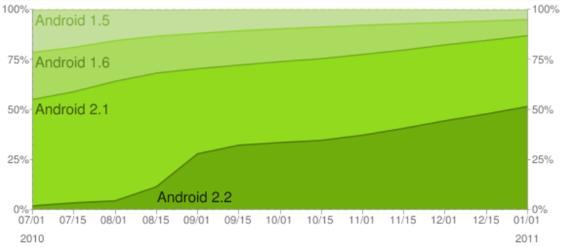
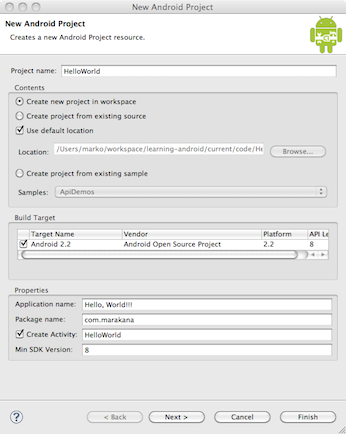
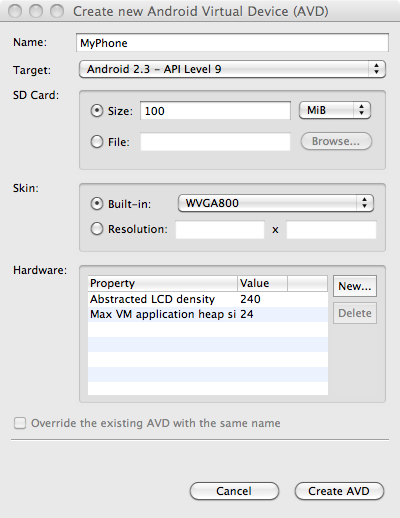
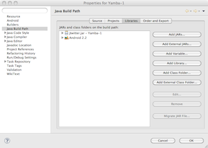
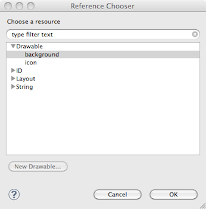

Build at: 2012/05/04 11:03:41.
0.1. 前言
本书的前身是Marakana Android Bootcamp培训课程内部的连载读物，其受众多达几千人，遍布四个大洲，大多是一些移动设备公司的开发者。它总结了我在几年Android教学中的心得体会：哪些实践有用，哪些实践应该避免。经过适当的增删与提炼，最终编成本书。
自Java初出茅庐不久，我就与它结下了不解之缘。当时java的定位还是在嵌入式领域，“对身边的各种设备编程”，这一想法对我触动很深。不久之后Java的主力就转向了Web应用的开发，我的工作也随之而转型到大型企业级应用，并在此间度过了十个春秋。所以当Android出现时，我马上就认了出来：为非PC的设备编程！更何况Android所支持的不仅仅是手机而已。
本书假定读者拥有java或类似语言的基础，配合实例，参照一个合适的难度，手把手地为你讲解Android应用的开发过程。Learning Android，更是体会Android的思维方式。
0.1.1. 内容简介
第一章，Android概述，简单介绍Android及其历史。
第二章，Android的架构，通过一个较高的视角，观察Android操作系统及其各个组件。
第三章，快速入门，配置你的开发环境。
第四章，基本构件，展示构成Android应用程序的基本组件。
第五章，Yamba项目简介，简单介绍一个Android应用程序Yamba，它将作为贯穿全书的实例，以展示Android的诸多特性。
第六章，Android用户界面，为你的应用设计用户界面。
第七章，首选项，文件系统，选项菜单以及Intent，介绍操作系统中的一些方便特性。
第八章，Service，介绍Android中后台任务的构建方法。
第九章，数据库，介绍了Android框架中内置的SQLite支持，以及在应用程序中使用数据库的方法。
第十章，List与Adapter，介绍Android的一个重要特性，它允许在较小的屏幕上高效地读显大量数据。
第十一章，Broadcast Receiver，介绍了如何应用Android中“发布-订阅”机制响应来自系统和用户的各种消息。
第十二章，Content Provider，介绍Content Provider的编写方法，用于在不同的应用程序间共享数据。在这里，我们通过它来为显示在主界面上的小部件提供数据。
第十三章，系统服务，介绍可供开发者挖掘的一些系统服务。
第十四章，Android接口描述语言(AIDL)，介绍进程间通信机制的使用，以及如何访问其它应用程序中的远程Service。
第十五章，Native Development Kit(NDK)，介绍在应用程序中使用本地C代码的方法。
0.1.2. 排版约定
本书使用如下排版字体约定：
斜体（Italic）
用于新名词、url、email地址、文件名和文件扩展名。
等宽字体（Constant width）
用于程序代码，或者文本中用以表示函数名、数据类型或XML Entity。
等宽粗体（Constant width bold）
用于命令或者用户输入的文本。
等宽斜体（Constant width italic）
用于表示文本需为用户提供或者上下文中提供的值取代。
用于表示一段提示、建议或者笔记。
用于强调一个警告，或者需要注意的地方。
0.1.3. 关于本书的代码
本书旨在为读者提供一切力所能及的帮助。除非用作特殊用途，你可以在程序或者文档中随意使用本书的代码，而不必向我们申请许可。比如基于本书代码所开发的程序无需许可，而出售或以CD-ROM形式分发O'Reilly出版物中的例子则需要许可；在回答问题时引用本书的例子不需要许可，而在产品的文档中大量引用本书的例子则需要许可。
我们鼓励保留出处信息，但不强制。通常出处信息可以包含书名、作者、出版商、ISBN等，比如“Book Title by Some Author. Copyright 2008 O'Reilly Media. Inc.”。
如果你认为自己对本书代码的使用超出了上述范围，联系我们就好：<permission (a) oreilly com>。
0.1.4. Safari® Books Online
Safari Books Online是一家备受好评的数字图书资料库，你可以在上面轻松检索超过7,500册技术书籍、参考手册以及教学视频。
只要订阅，即可随意访问在线资料库中的文本、视频。在这里，可以第一时间阅读未出版的新书，跟踪其写作动态，为作者提供反馈。还有一系列方便的功能：复制代码样例，收藏、下载章节，作笔记，打印等等。另外，还可以通过手机或者移动设备访问它。
O'Reilly Media已将本书上传至Safari Books Online。欲获得关于本书或者类似出版物的更多信息，请登录 http://my.safaribooksonline.com 。
0.1.5. 联系方式
关于本书如有意见和建议，请联系我们：
O’Reilly Media, Inc. 1005 Gravenstein Highway North Sebastopol, CA 95472 800-998-9938 (in the United States or Canada) 707-829-0515 (international or local) 707 829-0104 (fax)
我们为本书提供了网页，其中列出了堪误表、示例和其它信息。你可以访问：
http://oreilly.com/catalog/9781449390501/
如有意见或者技术问题，请发邮件至：
<bookquestions (a) oreilly com>
要了解我们的图书、教程、会议以及新闻等信息，请访问我们的网站 [http://oreilly.com]，以及我们的：
- Facebook: http://facebook.com/oreilly
- Twitter: http://twitter.com/oreillymedia
- YouTube: http://www.youtube.com/oreillymedia
0.1.6. 致谢
本书之付梓面世离不开大家的协作。首先要感谢O'Reilly的编辑Andy Oram和Brian Jepson。Andy，你的建议总是一针见血，让我受益良多。Brian，感谢你说服我开始本书的写作。
感谢我的所有技术编辑：Dan Bornstein，Hervé Guihot，Frank Maker III和Bill Schrickel。感谢你们孜孜不倦地审读我未成形的原稿，以及你们提供的宝贵建议。
没有大家在诸多设备上所做的实际测试，本书肯定不是现在的样子 —— 你们是Android的先驱者，你们的项目令人印象深刻。感谢你们的信任。
感谢我在Marakana的团队：Aleksandar (Saša) Gargenta，Ken Jones和Laurent Tonon。你们使用本书的原稿作为Android Bootcamp的教材，并给了我第一手的反馈。这里要特殊感谢曾多次督促我回到写字台的Saša：要没你深刻的技术评论，本书很可能几个月前就草草了事了。
最后的感谢留给我深爱的妻子Lisa和女儿Kylie，写作期间难免忙碌，感谢你们所做的牺牲以及对我一如既往的支持。
Marko Gargenta, San Francisco, CA
1. Android概述
在本章，我们讲述Android是如何诞生的。当今的移动领域正值群雄争霸的关键时期，Android扮演的角色不容小觑。我们在此简要回顾下它的历史，展望下它的未来，以应对它所带来的机遇与风险。
读过本章，你能以商业的视角对移动领域这一生态圈有更好的认识。我们也需要思考的是，面对诸多平台的更迭，如何选择技术才能获得长线的回报。
1.1. 概述
Android是一个为移动设备设计的开源系统。它由Google主导的开放手持设备联盟（Open Handset Alliance）维护，该组织的口号是：“助力移动设备的变革，以更低廉的价格，为用户提供更强大的功能和更好的体验”，而Android正是其理念的核心。
现在，Android正主导着移动领域的一场革命。这是第一个真正与硬件无关的开放系统，使得同一个应用能够轻松兼容于大量不同的设备之上，为用户和开发者营造一个更富生机的生态圈。
接下来直入主题：
1.1.1. 完整性
Android是一个完整的平台，即为移动设备提供的一套完整的软件架构。
面向开发者，Android提供了一套完整的工具和框架，以简化开发过程、提高开发效率。想要开发Android应用的话，Android SDK就是你所需的一切——甚至不需要一台真正的手机。
面向用户，Android开机即用。而且，用户可以按照自己的喜好做出相当程度的自定义。
面向生产厂商，Android就是令他们的设备跑起来的完整方案。厂商只需要编写自己的硬件驱动即可，而其它一切都有Android代劳。
1.1.2. 开源平台
Android是一个开放源码的平台。它的整个架构，从底层的Linux模块、原生库，到高层的开发框架乃至完整的应用程序，都是完全开放的。
而且，Android选择了对商业行为比较友好的许可证（Apache/MIT），从而允许他人在自由的扩展之余，更可以合法地用作其它用途。为保证整个架构的开放，Android甚至重写了一些三方库，并按照新的许可证重新发布。
因此作为开发者，你有权访问整个平台的所有代码，其运行原理不是秘密；作为生产厂商，你可以轻松把Android OS移植到自己专有的硬件平台之上，也可以保留自己的私传秘方，而不必强制贡献给开发社区。
这一切都不需要Android的授权。你可以随时随地使用它、修改它，而不带任何附加条件。Android还在不同层次上内置了丰富的hooks，在扩展上使人大有可为。
仍有部分底层的代码是专有的，比如蜂窝通信、Wi-Fi、蓝牙等等。为方便专有代码的维护，Android尽力将这些组件抽象为独立的接口。
1.1.3. 为移动设备而设计
Android是为移动设备而设计的系统。Android的开发团队在设计时，会对移动设备本身的一些限制做些评估，哪些可以在可见的未来得到改善，而哪些会长期不变。比如移动设备多是使用蓄电池，而电池的续航能力可能在几年内并不能得到多大的改善。再比如，移动设备受其体积所限，它们只能拥有较少的内存，CPU的速度也要打个折扣。
在设计伊始即考虑这些限制，并将其贯彻始终。这对最终用户体验的提升是大有好处的。
支持各种不同的硬件平台也是Android的设计目标之一。Android不对屏幕尺寸、分辨率、芯片或者其它参数做任何假设。可移植性是它的原则。
1.2. 历史
欲对Android的未来有所把握，就不能不对它背后的历史有所了解。
如下是过去几年的大事记：
- 2005年 Google收购Android, Inc.，全世界都以为"gPhone"就快来了...
- 风平浪静了一段时间。
- 2007年 开放手持设备联盟（Open Handset Alliance)宣布成立，Android正式踏入开源阵营。
- 2008年 Android SDK 1.0发布。G1手机随之而来，它由HTC出产，并由无线运营商T-Mobile USA发售。
- 2009年 基于Android的设备如雨后春笋般出现。Android系统发布了几个新版本：Cupcake(1.5)，Donut(1.6)，Eclair(2.0及2.1)。 已有超过20款设备运行Android。
- 2010年 Android成为仅次于黑莓的第二大智能手机平台。Froyo(Android 2.2)发布，已有超过60款设备运行它。
在2005年Google买下Android, Inc.时，这被认为是Google进军智能手机市场的信号，一时间人们纷纷猜测着一款叫做gPhone的设备。
然而Google的首席执行官Eric Schmit很快就让人们醒悟过来，仅仅一款智能手机是远远不能满足Android野心的：他们要把它做成一个通用的平台，为各种手机和其它设备都提供支持。
1.2.1. Google的动机
Google对Android的支持似乎仅仅是为了推广Android，凭借它的无处不在为自己在移动领域占据一席之地。其实Google是一家传媒公司，其商业模式建基于广告营销，这与传统软件商出售许可证的商业模式有所不同。只要大家使用Android，就可以有Google提供的附加功能，这与第三方是公平竞争的。
虽说Google也保留一些专有应用的许可（比如Gmail和Maps），在Android Market之上也有一定营收，但是Google最看重的还是应用程序带来的的广告收益。
1.2.2. 开放手持设备联盟
Android的背后不只是Google，更有开放手持设备联盟（Open Handset Alliance）。它是一个由电信运营商、手机制造商、软件开发商和芯片制造商等等组成的非盈利组织，致力于保持开放以及改进移动设备的用户体验。
这一联盟仍略显年轻，各个成员也正在慢慢摸索合作的方式。目前Android背后的主力仍是Google。
Android SDK的第一个版本发布的时候，市面上还不存在任何一款手机使用它。从这里其实可以看出，搞Android开发并不一定需要一台Android手机。除去少数例外（如硬件传感器、通话功能等），你需要的大部分功能都可以在Android SDK中找到。
1.3. Android的版本
同任何软件一样，Android也在不断的改进之中，其间的变化就在版本号上得以呈现。但是容易使人迷惑的是，不同版本号之间又是什么关系？在表格里看会更直观些，如下：
| 表格 1.1. 截至Android 3.0的Android各版本 |
|---|
| Android 版本号 | API Level | 代号 |
| Android 1.0 | 1 | |
| Android 1.1 | 2 | |
| Android 1.5 | 3 | Cupcake |
| Android 1.6 | 4 | Donut |
| Android 2.0 | 5 | Eclair |
| Android 2.01 | 6 | Eclair |
| Android 2.1 | 7 | Eclair |
| Android 2.2 | 8 | Froyo(frozen yogurt) |
| Android 2.3 | 9 | Gingerbread |
| Android 2.3.3 | 10 | Gingerbread |
| Android 3.0 | 11 | Honeycomb |
Android版本号差不多就是标志了它大版本和小版本发布的轨迹，其间以API Level最为重要。版本号的更新有时是为API的改动，有时是为修补bug或者性能优化。
身为应用程序的开发者，你需要明确知道目标平台的API Level，这决定了你的应用能否兼容。
一般来说，你会希望自己的应用能够兼容尽可能多设备，因此应留意Android的版本在诸多现存设备上的分野，选择较低的API Level。图1.1“截至2011年1月Android现存版本的分布”展示了来自Android Device Dashboard的一段统计信息：
图1.1，“截至2011年1月Android现存版本的分布”

你可以注意到，使用Android 1.5和1.6的用户已经不是很多，最新版本2.3也还未成气候，不过2.x版本的用户数增长势头良好。1.0和1.1的用户几乎都通过OTA自动升级到了1.5，不过1.5和1.6的用户却因为缺少固件难以升级。很多手机生产商甚至并无推出新固件的计划，因为他们更专注于新机的开发。
对此有所了解之后，你可能会选择1.6或者2.0作为最低的目标平台。确实有必要用到新版本特性的话，则另当别论。
1.4. 总结
Android操作系统在设计伊始，就是作为一个完整的、移动设备之上的开源平台而考虑的。随着巨大的成功，它改变了整个行业的游戏规则。
在下一章，我们将全局地观察整个Android操作系统，了解它是如何将其各部分巧妙地合为一体的。
2. Android的架构
我们将从9000英尺的高空俯瞰Android平台。你的目标可能仅仅是想学习Android应用程序的编写方法，但对Android的架构有所理解是绝对没有坏处的。在学习中了解到它的长处和不足，在实际的开发中才能做到扬长避短、事半功倍。
读过本章，你将能够对Android整个系统的工作方式有个大体的了解。
2.1. 概述
Android 系统就像一个多层的蛋糕。每一层都有自己的特性和用途，不过这些层之间并没有一个明确的界限，而通常是相互渗透的。
在你阅读本章时，要注意本章仅仅是整个系统的概览，至于各部分的细节，我们将放在后面讨论。图2.1 Android架构 展示了 Android 系统架构的各部分。
图 2.1. Android架构
2.2. Linux 系统
Android 是基于 Linux 系统构建的。 Linux 是一个伟大的操作系统，也是一个经典的开源项目。选择 Linux 作为 Andoird 系统基础的原因有很多，而最主要的因素，在于它的可移植性、安全性以及丰富的特性。
2.2.1. 可移植性
Linux可以轻松地移植到各种不同的硬件平台上。有了Linux做硬件抽象层，Android就不必为不同硬件的兼容性而劳心。Linux 的绝大多数底层代码都是用可移植的 C 代码编写，因此第三方开发者可以将 Android 移植到很多不同的设备上。
2.2.2. 安全性
Linux 已经在一些苛刻的环境下使用和测试了数十年，被证明是一个非常安全的系统。Android 依赖 Linux 实现其安全特性。 所有的 Android 应用都在独立的 Linux 进程中执行，可以直接应用Linux进程的权限机制。由此，Android得以将大部分安全措施交由底层的Linux实现。
2.2.3. 丰富的特性
Linux 系统本身就具有很多实用的特性。 Android 从中受益良多，例如内存管理、电源管理和网络部分。
2.3. 本地库
来自开源社区的 C/C++ 本地库为 Android 应用层提供了很多必需的服务。它们包括:
- WebKit: 一个高速的Web渲染引擎，这个引擎已经被 Safari ， Chrome 和很多其他的浏览器所使用。
- SQLite: 一个全功能的 SQL 数据库
- Apache Harmony: 开源的 Java 实现
- OpenGL: 3D 图像渲染库
- OpenSSL: 安全套接字层
- 等等
这些库中的大部分都是被原封不动地拿过来的，但是 Bionic 是一个例外。 Bionic 基本上是 C 标准库的重写版。 使用 Bionic 的原因有如下两条:
- 技术方面: 专为电量有限的设备进行优化。
- 许可证方面: 对他人的使用和修改是许可证友好的。
GNU libc 是 Linux 默认使用的C标准库，它使用的 GPL 协议要求修改者在发布产品时都必须开放源代码，并反馈给开源社区。 这样的许可证对于多数商业公司来说都是不友好的，因为他们通常需要保护自己的私有代码。Bionic 使用的 Apache/MIT 许可证对于这点就要宽松一些，并不强制修改者开放源码。
2.4. Dalvik 虚拟机
Dalvik 是一个专为 Android 设计的虚拟机。它由 Dan Bornstein 和他在 Google 的团队开发。
传统的Java虚拟机（JVM）是为了适应各种不同环境而设计的，强调泛用性。但Dalvik的开发团队认为专注于一个方面，可以得到更好的设计。因此他们研究了长期限制移动设备性能的制约因素，比如电池的续航能力和处理器的速度。而后针对这些因素对症下药，专门设计了Dalvik。
使用Dalvik VM代替传统Java VM的另一个好处在于许可证。 Java语言、Java开发工具以及Java类库都是自由的，但当时的Java VM不是。现在已经有了许多开源的 JVM 替代品，比如 OpenJDK 和 Apache Harmony 等等。但在2005年，这对Android来讲还是个大问题。
Android作为一个全功能的开发平台，一个真正开源且许可证友好的虚拟机不可或缺。它鼓励人们移植到不同平台，而不用担心许可证问题。
2.4.1. Android 与 Java
图 2.2. JVM和Dalvik
平常的Java开发都是先编写Java代码，然后通过Java编译器编译成字节码，最后在JVM上运行。但在Android中并非如此。相同的是仍需编写Java代码然后编译为字节码，但Dalvik编译器在执行前，会将Java字节码重新编译为Dalvik字节码。到最后真正执行的是Dalvik字节码。图2.2 JVM和Dalvik展示了标准JVM(左侧)与Android的Dalvik(右侧)之间的区别。
提及Java，身为程序员像是有很多工作需要做。但实际上许多的复杂步骤都可以由Eclipse或者ant这样的工具自动完成，而你几乎不会感觉到这些步骤存在。
你也许想知道，为什么不直接把Java代码编译成Dalvik字节码呢? 这是有考虑的。让我们回到2005年 Dalvik 项目刚刚开始时，当时 Java 的语法修改很频繁， 但 Java 字节码基本上没有什么太大的改动。于是 Android 团队决定使用 JVM 字节码而不是 Java 源码来产生 Dalvik 代码。
这样做得到的好处是， 理论上你可以使用任何可以编译成 Java 字节码的语言来开发 Android 应用，比如 Python 或者 Ruby 。 我说“理论上”是因为你还需要可用的 SDK 和库。不过有万能的开源社区在，未来会出现一套完善的解决方案也未可知。
另外需要注意的是 Android Java 并非来自标准的 Java 家族。 Java 一般分为:
- Java 标准版: 用于开发基本的桌面型应用。
- Java 企业版（也叫 J2EE 或者 JavaEE ）: 用于开发企业级应用。
- Java 微型版（也叫 J2ME 或者 JavaME ）: 用于移动平台的 Java 。
Android的Java类库比较接近 Java 标准版，它们的主要区别在于Java类库的GUI接口（ AWT 和 Swing ）被替换成了 Android 的专用接口。 Android在支持标准 Java 的类库之余，也提供了若干新功能。这一来你可以很快地上手Android开发。
2.5. 应用程序框架
应用程序框架是Android程序的执行环境，也是开发者的强大工具箱。另外，它也拥有Android平台中最全面最完善的文档。良好的文档可以激发广大开发人员的创意，也可以为他们构建优秀的应用程序提供有力的支持。
在应用程序框架中，你可以发现很多为Android设计的Java库。除此之外，也有系统服务的支持，比位置、传感器、WiFi、电话等等。
在后面的学习与实践中，将把我们的主要精力放在这里。要编写自己的应用程序，离不开框架中的诸多组件。
2.6. 应用程序
架构的最上层是你和其他开发者创建的各种应用，也是Android系统对用户最有价值的一环。它可以预先安装在系统中，也可以从诸多的软件商店中下载。
2.6.1. APK 文件
每个应用都是一个 APK 文件（表示 Application PacKage，应用程序包 ）。一个 APK 文件基本上由三个部分组成。它包括了所有的 Dalvik 代码（ Java 源文件可以自动编译成 Dalvik 代码）和所有的资源（也就是除了代码以外的部分，例如图像文件和布局文件）。另外它可能还会包含一些本地库。
- Dalvik 代码: 由你的 Java 文件编译而来的 Dalvik 字节码。这是完成你程序功能的主要部分。
- 资源: 资源就是除了代码外剩下的部分。你的应用中可能包含若干图片，音频/视频，还有很多的 XML 文件描述用来表述UI布局、语言包等等。总之，这些都是资源。
- 本地库: 你的应用中可能会包含一些本地代码，比如 C/C++ 库。 这些库将一并打包在 APK 文件中。
2.6.2. 应用程序签名
Android 程序在安装前必须进行签名。在开发时，我们可以使用开发者密钥(debug key)作为临时签名——这个密钥已经包含在开发环境中。 但作为商品发布时，你就必须使用自己的密钥进行签名。关于签名的具体步骤可以在 Android 网站的 Signing Your Application 页面找到。在后面我们将具体地讨论这个话题。
2.6.3. 应用的发布
Android 与其他平台的一个显著区别就是应用的发布机制。在多数的平台上(比如iPhone)，应用的发布都由一个单独的提供商独揽。 而在 Android 中，可以存在很多不同的 Android 商店。 每家商店都可以制定自己的发布条款和提成方式。这一来，就形成了一个提供商之间相互竞争的自由市场。
不过，目前最大的应用市场“Android Market”是Google自己运营的。目前还不清楚Google只是希望促进和催生其他商店发展，还是希望认真经营使之成为利润来源。
应用也可以通过 Web 发布。使用浏览器下载一个 APK 文件， APK 文件即可自动安装到你的手机上。
2.6.4. 关于病毒、恶意程序和其他坏东西的一点讨论
Android的应用商店是一个去中心化的发布系统，自然就免不了有人利用用户的信任传播恶意软件来做坏事。目前已接到通过伪造的金融应用进行钓鱼攻击(phishing attacks)的报告。
Android把这个问题交给市场去解决。如果你了解自由市场，就知道商店的信誉是良莠不齐的。 Google会根据用户的举报，通过人工移除Android Market 中的恶意软件(比如钓鱼软件)来保证用户的安全。其它商店也可以做出更多主动检测，并给出一个明显的提示。
2.7. 总结
在本章中，我们介绍了 Android 操作系统的组成部分及其结合方式。到这里，你对Android的完善、开放该已有所体会，而这正是吸引开发者的魅力所在。
在下一章，我们将搭建一个能够快速上手的开发环境。同时尝试编写一个简单的 Hello World 程序，并剖析它，体会应用开发过程中的细节。
3. 快速入门
本章介绍Android 开发环境的搭建方法。这里列出了所需的各种软件的下载地址，也提供了构建开发环境的最佳实践。毕竟操作系统各有不同，开发工具也多种多样。面对诸多选择，对其长短优劣心里有数总是好的。
在本章的最后，你将拥有一个完整的开发环境。随后就可以动手编写/构建第一个 Hello World 程序，并在仿真器中（或者在真机上，只要你乐意）运行了。
下文将会使用 ~ 符号表示你的个人目录。对于 Mac OS X ，~一般代表 /Users/marko/ 这样的目录，对 Linux ，~是 /home/marko ，在 Windows Vista 和 Windows 7 中是C:\Users\marko，在Windows XP中则是C:\Documents and Settings\marko。同样，我将选择 Unix 风格的正斜线(/)而非 Windows 风格的反斜线(\)作为路径分隔符。
因此，如果你是 Windows 用户，只需要把 ~ 替换成 C:\Users\YourUserName ，并把 / 换成 \ 。除此，Mac 、 Linux 和 Windows 也就大同小异了。
3.1. 安装Android SDK
Android软件开发包（SDK）是你开发Android应用所需的一切。除了一套开发的工具集，它也提供了一个用以测试的平台。你可以在Android SDK的下载页面为你的目标平台下载到对应的Android SDK。
下载之后，解压到一个方便访问的目录。在本书随后的例子中，将假定你的SDK安装目录在~/andorid-sdk。若你的安装目录在其它位置，留意替换即可。比如：
- Windows
- C:\apps\android-sdk-windows
- Linux
- /home/YourUserName/android-sdk-linux_86
- Mac OS X
- /Users/YourUserName/android-sdk-mac_86
我强烈建议Windows用户避免选择带空格的目录名，因为我们会经常用到命令行，夹带空格的目录名只会增加无谓的复杂性。而Windows XP的个人目录又恰恰带着空格:C:\Document and Settings，因此我建议把android-sdk放在一个新建的顶级目录之下，比如C:\apps。
不过，Windows Vista或Windows 7的话，直接放在C:\Users\YourUserName下面就好。
3.1.1. 设置PATH环境变量
Android SDK里有个目录，主要的工具都在里面。我们将会频繁地用到这些工具，因此把你的~/android-sdk/tools/目录加入系统的环境变量PATH会是个好办法，这一来就不需要每次使用它们时都切换目录了。
不同系统设置环境变量的方式各有不同，详见 Installing Android SDK 页面中的第二步。
(译注：Installing Android SDK: http://developer.android.com/sdk/installing.html)
3.1.2. 安装 Eclipse
Eclipse是一个开源的编程工具集，前身是IBM为Java开发的IDE，如今已成为Java社区大部分开发者的首选。Eclipse的首页在http://eclipse.org/。
Eclipse有着强大的功能与丰富的实用特性，我会在行进的途中将其一一带出。不过需要留心的一点是，Eclipse强大归强大，但同时也非常吃资源，有时你会巴不得一天重启一次。
Android开发并不限制开发者选择任何自己喜欢的编辑器或者IDE。不过Eclipse的使用者既占多数，本书也就选择了它。
如果你不想用Eclipse，可以参考 Developing in Other IDEs。
好，去 http://www.eclipse.org/downloads/ 可以下载到Eclipse。建议选择Eclipse IDE for Java Developers（注意不是Eclipse for Java EE developers，这个要大两倍），安装至任何目录都可以。
3.1.3. Eclipse的工作区
Eclipse以项目为单位管理用户的工作，项目又都位于工作区(Workspace)中。因此工作区的位置需要明确下来，我建议使用 ~/workspace 这样相对简单的位置来存放自己的代码。Windows的话，仍建议避免在workspace目录中存在空格（使用命令行的时候会添麻烦）——C:\workspace该是个好地方。
3.1.4. 安装Android Development Tools
你还需要安装Android Tools for Eclipse，如下：
图 3.1. 安装新软件
- 打开Eclipse，选择
Help→Install New Software。 - 进入
Available Software对话框，单击Add。 - 进入
Add Site对话框，在"Name"栏输入一个远程站点的名字（比如，"Android Plugin"）。 - 在
"Location"栏，输入这个URL：https://dl-ssl.google.com/android/eclipse/。 - 单击
OK。 - 回到
Available Software对话框，这时你可以在这个列表中发现多了一个"Developer Tools"。选择它也就自动嵌套选择了Android DDMS和Android Development Tools，单击Next。 - 在出现的
Install Details对话框中，前面选择的Android DDMS和Android Development Tools都列了出来。单击Next，阅读并确认许可条款，安装依赖的插件，单击Finish。 - 重启Eclipse。
Note:
如果下载插件时遇到问题，可以尝试将URL中的"https"替换为"http"（使用https往往是出于安全目的）。
3.2. Hello, World
一切准备就绪，开工写一个Hello World程序。由于Eclipse会为项目自动生成一些模板，这里需要写的代码并不多，重要的是理解。
3.2.1. 创建新项目
进入Eclipse，选择 File→New→Android Project 。有时菜单里可能没有Android Project这一条目（尤其是在第一次启动Eclipse的时候），这时可以选择Other找到Android Project。只要选择过一次，它就会一直显示在菜单里。
进入New Project对话框，分别进行如下设置：
- 填写"Project name"。这是个Eclipse概念：Eclipse把一切皆组织为项目(project)，而项目名只能是一个单词。在命名上，我个人比较喜欢CamelCase风格。在此输入：
HelloWorld。 - 选择"build target"，它为构建工具指明目标平台的版本。其中罗列了所有可用的目标平台，以及SDK中附带的扩展。在这里可以选择一个较新的版本，比如Android 2.2（留意不要选择Google APIs，它们是Google的Web服务在Android平台上的专有扩展）。
- 接下来设置project属性。其中的"application name"也就是你应用的英文名字，随便写上就好，比如"Hello, World!!!"。
- "package name"是个Java中的概念。在Java中，源码都是组织为一个个的package，用以表示Java对象在不同类中的可见性，是个很重要的概念。在Android开发中，package作为应用程序签名的基本单位，也是很重要的。它的命名规范为逆序的域名，后跟可选的子域名。比如我有个域名是example.com，要编写一个计算器（caculator）的应用，那么package的名字就可以是com.example.caculator。
- "activity"一项是可选的。目前我们还没讲到Activity（参见第六章，Android用户界面），姑且把它看作是程序的界面即可。Activity通过Java的类来表示，因此它的名字也同样遵循Java中类的命名规范：首字母大写，对多个单词使用CamelCase命名规范。在此输入
HelloWorld作为Activity的名字。 - "minimum SDK version"是这一应用所支持目标平台的最低版本，以API Level为单位。若想要得到较高的兼容性，就选择一个较低的版本。在这里我们不需要考虑兼容性，因此选择8，对应Android 2.2。
- 如 图3.2. "New Android Project窗口" 最后单击Finish按钮，Eclipse就会新建出一个项目。接下来，我们依次观察一下在这一环节中新建出来的文件。
图 3.2. New Android Project窗口
3.2.2. Manifest 文件
Manifest文件是应用程序各部分之间的牵线人。它申明了程序中包含的构件(Building Blocks)以及相应的权限等信息。
例 3.1. AndroidManifest.xml
<?xml version="1.0" encoding="utf-8"?>
<manifest xmlns:android="http://schemas.android.com/apk/res/android"
package="com.marakana" android:versionCode="1" android:versionName="1.0">
<application android:icon="@drawable/icon" android:label="@string/app_name">
<activity android:name=".HelloWorld" android:label="@string/app_name">
<intent-filter>
<action android:name="android.intent.action.MAIN" />
<category android:name="android.intent.category.LAUNCHER" />
</intent-filter>
</activity>
</application>
<uses-sdk android:minSdkVersion="8" />
</manifest>
3.2.3. Layout文件
Layout文件用于表示界面的布局。在这里我们只用到了一个界面，就是上面定义的Activity：HelloWorld。
例 3.2. res/layout/main.xml
<?xml version="1.0" encoding="utf-8"?>
<LinearLayout xmlns:android="http://schemas.android.com/apk/res/android"
android:orientation="vertical" android:layout_width="fill_parent"
android:layout_height="fill_parent">
<TextView android:layout_width="fill_parent"
android:layout_height="wrap_content" android:text="@string/hello" />
</LinearLayout>
3.2.4. Strings文件
这也是个XML文件，内容是程序中出现的所有文本。比如按钮的名字、Label、默认的文本等等，都统一在这一文件之下。把问题分解，令不同文件各司其职，这是个很好的做法——哪怕是XML文件。由此，Layout文件负责Widget的布局，Strings文件负责文本内容。
例 3.3. res/values/strings.xml
<?xml version="1.0" encoding="utf-8"?>
<resources>
<string name="hello">Hello World, HelloWorld!</string>
<string name="app_name">Hello, World!!!</string>
</resources>
3.2.5. R文件
R文件负责Java与外部资源之间的关联。它在res目录中的内容发生变化时(比如添加一个图片或者xml文件)由SDK自动生成，不必也不应该手工修改。
既然有Eclipse代劳，对这个文件本身我们不必关注太多。不过它里面的数据是非常有用的。
例 3.4. gen/com/marakana/R.java
/* AUTO-GENERATED FILE. DO NOT MODIFY.
*
* This class was automatically generated by the
* aapt tool from the resource data it found. It
* should not be modified by hand.
*/
(to 编辑：以上注释为Eclipse自动生成，不可翻译。)
package com.marakana;
public final class R {
public static final class attr {
}
public static final class drawable {
public static final int icon=0x7f020000;
}
public static final class layout {
public static final int main=0x7f030000;
}
public static final class string {
public static final int app_name=0x7f040001;
public static final int hello=0x7f040000;
}
}
3.2.6. Java源码文件
Java代码是整个程序的驱动者。它会被编译为可执行格式，在Dalvik之上执行。
例 3.5. HelloWorld.java
package com.marakana;
import android.app.Activity;
import android.os.Bundle;
public class HelloWorld extends Activity {
% /** Called when the activity is first created. */
/* 在Activity首次创建时触发 */
@Override
public void onCreate(Bundle savedInstanceState) {
super.onCreate(savedInstanceState);
setContentView(R.layout.main);
}
}
3.3. 仿真器
在仿真器（Emulator）上执行程序，与在真机上执行的效果是一样的。这是因为仿真器是机器码级别的仿真，其机器码与真机相同。
模拟器(Simulator)与仿真器(Emulator)名字很像，但有着本质的不同。“仿真器”的意思是模仿真机执行机器码的过程，接近于“虚拟机”。而“模拟器”是在相对较高的层次上模拟代码的行为。Android SDK附带了一个基于QEMU的仿真器。
使用仿真器之前，我们需要创建一个Android Virtual Device(AVD)。最简单的方法是在Eclipse中打开Android Tool。
打开Android SDK and AVD Manager：可以在Eclipse中单击 ，也可以在SDK的
，也可以在SDK的tools目录中执行android命令。
图 3.3. Android SDK与AVD Manager

进入Android SDK and AVD Manager，单击New…，出现Create New AVD对话框。你需要在这个对话框里对新的AVD做一些设置， 其中Name可以随便起一个，Target是目标平台的版本，其中的选项会因为SDK的平台以及扩展的不同而有所不同。如果里面没有列出任何选项，那就返回Android SDK and AVD Manager，在Available packages中选择安装一个目标平台，比如Android 2.3 - API level 9。
AVD中也有一个SD卡，你能以MB为单位指明它的大小。Skin表示虚拟设备的观感。通过Hardware选项可以详细设置AVD的硬件参数，选择支持的特性。
图 3.4. 新建AVD的对话框
配置完毕，就可以在列表中见到一个新的AVD。好的，运行它仿真器就出来了，如 图3.5. 仿真器。
图 3.5. 仿真器
3.3.1. 仿真器 vs 真机
在大多数情况下，应用在仿真器上执行，与在真机上是没有区别的。少数的例外情况则往往是因为难以模拟，比如传感器。一般的硬件相关特性比如电话呼叫、地理定位等等，都可以由仿真器模拟。
3.4. 总结
Android开发环境的搭建，几乎就是对付Android SDK和Eclipse了。开发环境设置完毕，不妨动手用Eclipse创建一个简单的Hello World项目实现一下，看看是否一切都能正常工作。运行良好的话，也就证明环境已经搭建完毕，为往后正式的开发做好了准备。
4. 基本构件
本章介绍Android应用的基本组成部分：构件(Building Blocks)。我们将在一个较高的层面上观察Activity是什么、Intent如何工作、Service酷在什么地方、怎样使用Broadcast Receiver与Content Provider使程序更易于扩展，以及更多相关内容。
(译者注：本书在翻译中，对构件的名称一律保留原文，比如Activity、Intent、Service等等。)
到本章结束，你将对不同构件的应用场景、以及它们在实际应用中的关系有个概念性的认识。
4.1. 基本构件
构件(Building Blocks)即构建Android应用所需要用到的组件。就像砖块之于盖房子，有构件的堆叠组合才可以构建出完整的应用。刚开始设计时，不妨参照自顶向下的设计方法：先想想，你的应用的外观是什么样子，有什么功能，大体怎样实现。然后就可以打草稿了，画下设计图，记录下设计思路。这对把握全局——怎样组合构件才能让它们正常工作——是大有好处的。
4.2. 真实世界的例子
我们要做的是一个Twitter应用。用户的需求很清楚，那就是发新消息、查看朋友的新消息，这也正是它的基本功能。除此之外，我们还需要事先获知用户的用户名和密码才能登录Twitter。由此可知，我们需要三个界面。
其次，我们希望应用程序能够流畅地运行，而回避开网络连接情况的影响。应用程序应该只在设备联网时抓取Twitter消息，并缓存到本地。为此，我们需要用到一个后台运行的Service，也需要用到数据库。
我们也希望这个后台Service最好在设备开机时就能运行。这样用户只要打开应用，就能立即查看到朋友们的最新消息。
如上，这都是些很直白的需求。通过Android提供的构件，你可以轻松将以上的任务分离开来，独立完成。到最后只消简单地将它们打包，一个完整的应用也就成型了。
4.3. Activity
Activity 即设备在某一时刻所显示的界面。一个程序通常含有多个界面，用户可在其间切换。对用户而言，这就是程序的外观部分。
我通常喜欢拿网页来类比Activity：就像一个网站含有多个网页，Android程序也含有多个界面(Activity)；网站有主页，Android程序有主界面(main Activity)——也就是启动程序时显示的第一个界面；为了方便用户在多个页面之间跳转，网站会提供导航功能，Android也一样。
在网站里，你可以从某页面跳转到另一个网站的页面。类似地在Android中，你也可以在某程序的界面里启动或访问其它程序的界面。比如在联系人应用中，你可以选择某个朋友，直接进入短信应用的界面为他写消息。
4.3.1. Activity 生命周期
因为涉及到新建Linux进程、为UI对象申请内存、解析XML文件以及最终的图像渲染，初始化Activity的成本是比较高的。既然在初始化上面花了这么大功夫，那么每次离开Activity就将其销毁就未免太浪费了。在这方面，Android引入了Activity Manager机制，用以自动管理Activity的生命周期。
Activity的创建、销毁、管理皆由Activity Manager全权负责。如果用户首次启动了某程序，Activity Manager会负责程序界面的初始化与显示；如果用户要切换界面，Activity Manager将原先的界面隐藏而不是销毁，这样可以加速下次访问；Activity Manager也负责销毁长时间未访问的Activity，为当前活跃的Activity腾出更多内存空间。引入Activity Manager机制的动机就是提升用户界面的速度，这对用户体验很重要。
图 4.1. Activity的生命周期
Android的编程环境有些独特的地方，那就是在Android开发中，你会发现自己更多是对程序状态的迁移做出响应，而很少需要主动控制它的状态。在托管的环境中添加自己的业务逻辑，这点倒是与Java的applet与servlet有些相似。因此谈及Activity的生命周期，我们很少关心它的当前状态，而对它的状态迁移更感兴趣。图4.1 Activity的生命周期 展示了Activity各个状态之间的迁移关系。
4.3.2. Starting 状态
Activity在刚刚启动时还未进入内存，这就是Starting状态。在这时，Activity会调用一些我们提供的回调函数，随后进入Running状态。
留意，Starting状态到Running状态的切换是最为耗时的操作之一。耗时也就耗电，对电池的续航能力也有影响。因此不再显示的Activity不会被轻易销毁，留它驻留在内存中，到用户下次访问的时候可以节省资源。
4.3.3. Running 状态
Activity显示在屏幕上允许用户交互，这是Running状态。我们有时称这一状态的Activity为“获得焦点”(in focus)，也就是在这时用户交互的相关操作比如打字、触摸屏幕、点击按钮等等，都由这个Activity掌握。可知，同一时刻只能有一个Activity处于Running状态。
处于Running状态的Activity可以优先获取内存或者其它资源，这样有助于提高用户界面的响应速度。
4.3.4. Paused 状态
当Activity没有获得焦点(没有用户交互)但仍可以在屏幕上看到时，它就是Paused状态。这种状态出现不多，因为屏幕通常不大，而Activity都是要么占据整个屏幕，要么不显示。那么进入Paused状态，往往就是因为有对话框显示在前面了。另外，Activity会在停止前进入Paused状态。
Paused状态的Activity依然拥有获取内存或者其它资源的优先权，因为它们依然显示在屏幕上，应该避免让用户感到不自然。
4.3.5. Stopped 状态
当Activity不再显示却依然驻留在内存中的时候，就是Stopped状态。Stopped状态的Activity可能会被重复利用，重新进入Running状态。也有可能被销毁而从内存中移除。
系统将Stopped状态的Activity驻留在内存中，用以加速用户下次访问。毕竟重启一个Activity要比重新初始化一个Activity轻量的多。一切都还在内存里，需要做的只是把它显示出来。
Stopped状态的Activity可能会在任意时刻从内存中移除。
4.3.6. Destroyed 状态
Destroyed状态的Activity就不再驻于内存了。当Activity Manager认为某个Activity已经不再需要的时候，就会销毁它，并把它视作Destroyed。在销毁之前，它会调用回调函数onDestroy()，允许开发者在这里执行一些清理工作。不过Destroyed状态之前不一定是Stopped状态，Paused状态的Activity也有被销毁的可能，因此最好将一些重要的工作(比如保存数据)置于onPause()而不是onDestroy()中。
实际上，Activity在Running状态并不一定意味着它的运算量大，它也有可能在干等着用户输入；同样，在Stopped状态也并不一定意味着它的运算量小。状态多是针对用户输入的响应(比如是否显示、是否拥有焦点)而言，而并不能代表它所做的工作内容。
4.4. Intent
Intent是构件之间传递消息的一种机制。通过Intent可以显示一个Activity、启动或停止一个Service，也可以当作简单的广播。Intent是异步的，也就是说在发送时不需要阻塞等待它们响应完成。
Intent分为显式（explicit）和隐式（implicit）两种。显式的Intent要求发送者明确地指出接收者是谁；而隐式的Intent只要求发送者指明接收者属于哪一类别。比如某Activity可以发送一个“我要打开网页”的Intent，这时能够“打开网页”的某个应用程序即可收到这个Intent。
当多个应用程序对同一个Intent发生争抢的时候，系统会询问用户来决定选择哪个程序。用户也可以针对某Intent设置一个默认程序，就像你在桌面系统中安装了Firefox或者Chrome，即可选择把它设置为默认浏览器，从而替换掉原先的Internet Explorer或者Safari一样。
这样的消息机制允许用户自定义系统中的任何响应程序。比如你想换一个短信程序或者浏览器，只要把它们设成默认即可。
图4.2 Intents 展示了通过Intent实现"跳转"的原理。
图 4.2 Intents
4.5. Service
Service运行于后台，没有任何用户界面。它们就像是没有界面的Activity，适合于那些需要执行一段时间、但是不需要考虑如何显示的操作。比如，我们希望在移出音乐播放器的窗口之后，播放器依然可以播放歌曲。
不要将Android的Service与Linux的原生服务、服务器进程或者守护进程相混淆。它们都是操作系统的部件，要底层的多。
图 4.3. Service 的生命周期
Service的生命周期要比Activity简单不少，要么启动，要么停止，如 图4.3 Service的生命周期 。同时，Service的生命周期受开发者影响较多，而受系统控制相对较少。因此身为开发者，我们需要小心对待Service，避免它无谓地浪费资源(比如CPU和电池)。
虽说Service运行于后台，但这并不是说它默认执行于另一个独立的线程中。如果一个Service需要执行一段耗时的操作(比如网络调用)，依然需要程序员将它放在单独的线程中处理。否则，你的用户界面将响应不灵。一言以蔽之，Service默认与Activity在同一个线程中执行，而这个线程也被称作UI线程。
4.6. Content Providers
图 4.4. Content Provider
Content Provider是应用程序之间共享数据的接口。Android默认使每个应用程序都运行在沙盒(sandbox)里面，自己的数据与外面的程序完全隔离，要传递数据则必须依赖一些特定的接口。少量数据通过Intent传递即可，要传递大量的持久化数据就需要Content Provider了。为此，Content Provider提供了一套很好的按照CRUD原则设计的接口，以供不同程序之间共享数据，如 图4.4 Content Provider。
Android将这种机制应用到了方方面面。比如Contacts Provider专为不同的应用程序提供联系人数据，Settings Provider专为不同的应用程序提供系统的配置信息，Media Store为不同的应用程序提供多媒体信息(比如图片、音乐)的存储与分享，等等。
以联系人应用来说，应用程序本身并没有联系人数据，Contacts Provider则没有用户界面。如 图 4.5. 从Contacts Provider获取数据的联系人应用，可见联系人应用通过Contacts Provider，从另一个应用程序中获取联系人数据的方法。
图4.5 从Contacts Provider获取数据的联系人应用
把数据的存储与用户界面分离开来，这使得系统中各个部分之间的联系更加紧密，拆换起来也更加灵活。比如用户可以安装一个新的地址薄应用(Address Book App)替换掉原先的默认的联系人应用(Contacts App)，同时仍希望使用原先的数据；或在主屏幕上面安装一个小部件，方便做些开关WiFi/蓝牙/GPS之类的系统设置。也有许多手机制造商(比如 HTC Sense)基于Content Provider机制，设计一套自己的软件集来提升用户体验。
Content Provider的接口很简单，那就是insert()、update()、delete()与query()。这与一个数据库的接口很相似，因此针对某数据库实现一个Content Provider当作代理也十分简单。话虽这么说，不过你该更喜欢使用现成的Content Provider，而不是自己造轮子。
4.7. Broadcast Receiver
图 4.6. Broadcast Receiver
Broadcast Receiver是Android整个系统中通用的发布/订阅机制(更确切地说，Observer模式)的实现。意思是接收者(Receiver)订阅一些事件，在事件发生时做出一定响应。
系统自身时时刻刻广播着一些事件。比如收到短信、来了一个电话、电量不足或者系统启动等事件发生的时候，它们都是通过广播传递给每个接收者。
对我们的Twitter应用而言，我们希望在系统启动时就启动UpdaterService来更新消息。为此，我可以订阅"系统已启动"的广播事件。
你也可以发送自己的广播。接收者可以是程序自身的其它部分，也可以是其它的程序。
Broadcast Receriver并无任何可见的界面，也并非常驻于内存中执行。它只会在事件发生时执行一段代码，做些启动一个Activity/Service之类的操作。
4.8. Application Context
到这里，我们已经对Activity、Service、Content Provider以及Broadcast Receiver有了大致的了解。可以说它们一起构成了整个应用程序，也可以说它们共同存在于同一个应用程序的上下文(Application Context)里面。
Application Context即当前应用程序所在的进程以及其运行环境，它为不同的构件所共享，因此我们可以通过它实现在不同的构件中共享数据和资源。
不管应用程序中首先启动的是哪个构件(Activity，Service还是其它)，都会首先初始化Application Context。从此它的生存周期也就与整个应用程序保持一致，而与Activity或者某构件无关。我们可以通过Context.getApplicationContext()或者Activity.getApplication()获得它的引用。留意Activity与Service都是Context的子类，因此也就继承了它所有的方法。
4.9. 总结
在本章，我们将Android应用程序中最常见的组件大致浏览了一遍。下至简单的Hello World上到复杂的系统，应用程序样目繁多，但都是通过它们组合而来。
到下一章我们开始按照Yamba程序作为主线，演示如何将这些点滴零碎合而为一，使之成为一个可用的程序。
5. Yamba 项目简介
学习的最好方法就是动手实践，因此一个好的实例是很重要的。在平日面向数千初学者的教学中，我曾尝试使用过许多不同的实例。经过总结，一个好的实例该有如下特征：
全面
一个好的实例应该足以涵盖Android应用框架中的诸多特性，同时也把相应的特性用在点子上，而不仅仅是为了展示特性而使用特性。这对新接触Android的同学来说，可以端正学习的方向，是很重要的。
大众化
一个好的实例应当是简单易懂的。对我们来说，学习的重点在于理解它的设计与实现，而非死记硬背它的特性与好处。
5.1. Yamba 项目
我为这本书选择了一个类Twitter的应用程序作为实例，它的名字是Yamba，即 Yet Another Micro Blogging App。 使用Yamba，你可以连接到twitter之类的微博服务以跟踪朋友的消息，也可以更新自己的消息。
Yamba作为一个实例，它应用了Android的所有构件(Building Blocks)，全面而不失简洁。我们可以留意下它是如何将各个独立工作的部分合而为一的。至于Twitter这样的微博服务大家肯定不会陌生，因此有关程序的功能也就不多做解释了。
成品图大约如下：
图5.1. 来自友邻的消息列表，也就是Timeline
图5.2. 用户输入消息时屏幕的样子
图 5.3. 用户选项

5.2. 设计原则
我们需要引入一个设计原则，作为指导项目行进的指南针，并贯彻于项目的始终。在遇到问题时，它也可以给予我们一定的帮助。
渐进式开发
先从一个小程序做起，随后慢慢给它添加功能。一开始程序的结构会很简单，但是我们会在更新中不断为它添血加肉，让它慢慢成长。行进途中我会及时讲解这些变化，读者可以留意。
保持完整，保持可用
程序必须保证一直都是可用的。或者说，在每次修改中所添加的功能应尽量的小并且完备。一旦将其加入原先的代码库，就依然是一个整体，并保证在每一轮更新之后，程序都是可以正常运行的。
代码重构
每过一段时间就回头重构下我们的程序，及时消除重复代码，优化设计，增加代码重用，避免重复造轮子。 但也没有必要纠结于一次性解决所有的问题，毕竟还有未来的重构。在这一流程中，读者也可以体会下软件开发过程中的最佳实践。
5.3. 项目设计
在第4章中有提及，Android应用就是Activity、Service、Content Provider、Broadcast Receiver的松散组合。它们作为Android的基本构件(main Building Blocks)，在开发中扮演着不可或缺的角色。 图5.4 Yamba设计图 给出了Yamba的设计架构，不妨留意其中基本构件与应用之间的关系。
图 5.4. Yamba设计图
5.4. 第一部分: Android 用户界面
在这部分中，我们将着重介绍 Yamba 的第一个部分：消息更新界面。 我们的主要任务有：
5.4.1. 构建一个 Activity
我们先来熟悉一下 Android 的用户界面(UI)模型。Android的UI模型可能与你接触过的其它UI模型有所不同，其最大特点即它的 UI既可以通过Java描述，也可以通过XML描述。
在这一章中，我们将尝试开发一个如 图5.2 "用户输入消息时屏幕的样子" 那样允许用户发布消息的界面。在此过程中，我们配合使用Java与XML完成UI 的设计。在此，读者将了解到Android中Layout与View的概念，以及图片的使用方法与美化UI的窍门。
在此，我们将贯彻 UI 设计的最佳实践，使你的应用程序能够适应任何尺寸和分辨率，而不失美观和实用。
5.4.2. 网络和多线程
有了用户界面，接下来就应该考虑用户与服务端交互的实现方法了。在此，我们引入一个三方库来帮助我们访问 Twitter 的 API 服务。
在网络调用执行中，我们会发现界面响应不灵，这是因为网络操作是不可预知的。毕竟不能让网络操作把我们的界面卡死，因此我们在这里引入Android中的多线程机制，避免不必要的外部阻塞。
5.4.3. Android 程序的调试
哦，糟糕，我们的程序不能正常工作了。不过别担心，这是必须的。调试是正式开发中不可回避的一部分。我们将在本章讲解 Android SDK中提供的调试工具的使用方法，学会如何快速地定位并解决问题。调试会成为你的第二本能的！
5.5. 第二部分: 首选项，文件系统，选项菜单以及Intent
这部分讨论用户个人选项界面的实现。 在本节结束后，Yamba 将会拥有两个用户界面，一个用来更新消息，另一个用于配置个人选项。 此时的Yamba已经可以为用户所配置，成为一个可用的 App 了。本阶段我们要新建的东西有：
5.5.1. 选项界面
首先我们需要一个界面。每个界面都对应着一个Activity，它是 Android 的基本构件之一。 我们将在这里学习新建界面的步骤和方法。
5.5.2. 菜单系统与 Intent
我们还需要一个地方来切换界面，因此在这里引入 Android 的菜单系统及 Intent 机制，学习通过发送 Intent 实现切换界面的方法。
5.5.3. 文件系统
最后我们将学习典型 Android 设备上的文件系统。阅读本章之后，你将对操作系统的架构以及Android的安全机制有更深一层的理解。
5.6. 第三部分: Android Service
这部分对应第八章，介绍Service(后台服务)的相关知识。到本章结束，Yamba将能够定期访问服务端，即时更新朋友的消息。
5.6.1. Service
Android 的 Service 是个很重要的构件。它允许进程在后台运行，而无需用户界面。 这对 Yamba 自然是再合适不过，我们可以凭借它实现定期与服务端交互。在本节，你将学到Service中多线程的使用方法。
5.6.2. Application对象
到这里，我们会发现代码中多了些重复的东西，而不那么优雅了。为了重构 Yamba 使之更易于扩展，我们在此引入 Application 对象。
5.7. 第四部分: 使用数据库
现在我们已经可以从服务端获取数据了，但还没有地方用来存储数据。在此，我们介绍 Android 的数据库支持。在本节的最后，我们即可实现将数据持久化保存在数据库中。
5.7.1. SQLite以及Android的数据库支持
Android自带了 SQLite 数据库的支持。SQLite短小精悍，更有Android框架中丰富的API，使用起来会很容易。本节我们介绍SQLite及其配套API的使用方法。哦，在这里还没必要精通SQL，不过了解一些SQL总是好的。
5.7.2. 再次重构代码
到这里不妨再重构一下代码。不必吝惜重构的机会，它是长线投资，甜头只有在后面才尝的出来。
5.8. 第五部分: List与Adapter
听名字像是回头复习UI了，但List与Adapter与众不同。作为控件，它们允许我们将大量的数据集与小屏幕上的显示绑定在一起，且不失高效性与伸缩性。从用户的角度来看，得到的好处就是Yamba不会因为运行时间的增长而变慢。
数据都已保存在了数据库中，但还没有办法显示出来。在此我们为 Yamba 设计一个显示Timeline的界面，方便用户查看朋友消息。
5.8.1. Timeline 界面
接下来分步实现第三个也是最后一个界面。首先利用已知的Android UI知识组装出一个半成品，能基本工作就好；然后改进设计，它会看起来更漂亮些，但是依然不能满足现实世界的需求；最后我们引入List与Adapter，使之完善可用。
5.8.2. 再重构一次？
我们希望用户能够在不同的界面中感受到一致的体验，也希望我们自己管理代码能够更容易些——再重构一次吧。在此我们引入一个BaseActivity作为所有Activity的基类，将重用的代码提取出来。
5.9. 第六部分: Broadcast Receiver
我们想让Yamba智能地响应外部事件。为此，在这里引入Broadcast Receiver机制。
5.9.1. Boot Reciever 与 Network Reciever
假如我们希望在设备开机时就开始更新消息，也希望在网络离线时暂停更新，并在网络正常时恢复更新。要实现上述功能，就需要通过不同的Broadcast Receiver来完成。
5.9.2. Timeline Reciever
还有另一种Receiver，它们只存在于特定的时间段，收听的消息也不是来自Android系统，而是来自Yamba自身的其它部分。我们将在这里了解到，如何使用Reciever将松散耦合的各部分优雅地组合起来，而不失可扩展性。
5.9.3. 权限
在访问网络或者文件系统时，你已经对系统内置的权限机制有所了解。在这里，我们将尝试定义我们自己的权限机制，并应用它们。毕竟我们不希望他人来随便访问Yamba的内部操作。
5.10. 第七部分: Content Provider
在这里，我们将再访Content Providers，重构数据库的代码来使用它们。为展示它们的工作方式，我们将引入一个Android小部件。
5.10.1. 消息数据
其它程序不能干涉我们的消息数据，这样很好。但我们想让其它程序访问这些数据又该怎么办？毕竟其它程序也可能想善意地利用我们的数据，通过它们独特的表现手法做另一番展示。为此，我们需要创建一个Content Provider为外部提供数据。
5.10.2. 应用程序小部件
但是谁会关心我们的数据呢？当然有，比如小部件(App Widget)，也就是挂在主屏幕上显示天气之类的小东西。我们将在这里新建一个小部件，通过Content Provider读取最新消息并显示在主屏幕上。
5.11. 第八部分: 系统服务
(译者注："系统服务"与作为构件的"Android Service"是不同的东西。在翻译中，我们将所有构件的名字保留原文，而将System Service译为"系统服务"，以示区别。)
Android 操作系统内置了许多实用的系统服务供程序使用，比如当前位置、传感器数据、WiFi热点等等。在这部分，我们将为Yamba添加若干小功能，比如提交用户的当前位置。
5.11.1. Compass与Location
本例用以演示系统服务的工作方式。我们将利用传感器的有关特性，开发一个指南针应用，随后将类似的功能引入Yamba，为用户发送的消息附带上坐标信息。
5.11.2. Intent Service, Alarms, Notifications
可以看到，Android内置了一些很酷的Service，用好可以简化UpdaterService的实现。所以再次重构代码吧。在这里我们引入IntentService来响应Intent请求，另外还需要引入Alarm Service，来定期触发Intent请求。我们还将使用到Notification Service，在系统托盘(Notification Area)显示提示信息。经过重构，我们将得到一个更为优雅的UpdaterService实现。
5.12. 总结
本章可作为后面八章的铺垫。经过一轮轮的迭代，你将完成一个中等规模的Android应用。更重要的是，你可以在这过程中体会到程序各部分的意义、及其合而为一的方法。或者说，这就是体会到Android开发中的“思维方式”。
6. Android 用户界面
本章介绍Android中用户界面的构建方法。我们将在这里创建第一个Activity作为实例，体验如何使用XML描述界面布局，以及在Java中引用它的方法。随后介绍View(又称Widget，控件)和Layout(布局)的概念，以及如何在Java中捕获事件(比如单击按钮)。另外，还需要在这里导入一个三方的jar文件，用来访问 Twitter 提供的 API。
到本章结束，你就有了一个自己编写的 Twitter 应用。暂时它只有一个界面，允许用户输入消息并发布到网上。
6.1. 创建用户界面的两种方法
Android提供了两种风格可供我们创建用户界面(UI)：一种是声明风格，另一种是编程风格。它们之间的差别不小，但是我们想做好界面，往往离不开它们的相互配合。
6.1.1. 声明式的用户界面
声明式就是使用XML来定义UI的外观。通过标签表示显示出来的相应元素，这与使用HTML编写网页是很相似的。若是以前写过HTML页面，编写声明式的Android界面也很快就能上手。
声明式的好处就是，便于使用所见及所得(WYSIWYG)工具——有些来自Eclipse Android Development Tools(ADT)的扩展，有些来自第三方。另外一个好处是，XML是易于人类阅读的，即使你不熟悉Android的平台与框架，也可以大致看得明白。
声明式的缺点是也正在XML本身。描述界面的外观样式，XML自是再合适不过，但是响应外部事件、处理用户交互它就无能为力了。而这就是引入编程式的理由。
6.1.2. 编程式的用户界面
编程式的用户界面就是使用Java代码来编写UI，做过Java AWT或者Java Swing开发的同学对此肯定不会陌生。这跟其它语言中提供的UI库也区别不大。
假如你想通过编写代码的方式创建一个按钮，一般就需要声明一个按钮变量、获得按钮的实例、添加到容器里面，然后设置相应的属性——颜色、文本、文本大小、背景颜色等等不一而足。你也希望对按钮的点击事件做些响应，因此还需要添加额外的逻辑。这样一来二去，敲出来的代码是很可观的。
理论上讲，声明式风格能做到的，编程式风格也都能做到。但是通过Java代码，你更可以为按钮的点击事件作出响应——这也正是应用编程式风格的主要场景。
6.1.3. 各取所长
好，那我应该选择哪种方法？好的选择是两者皆用：使用声明式(XML)表示用户界面中的静态元素，比如页面布局、控件摆放等；同时使用编程式(Java)来定义控件对用户操作的响应。换种说法，就是使用XML描述它的"样子"，而使用Java定义它的"操作"。
虽然两种做法风格迥异，但是到最后XML终究还是要"解析"到Java的运行环境中才可以显示出来。实际运行的只有Java代码。
6.2. View与Layout
Android 通过 Layout 与 View 机制组织UI中元素的显示方式。View 就是屏幕上显示的控件——比如按钮、标签、文本框等等。而 Layout 用来安排 View 的排列，比如它可以将一组按钮或标签排成一行或者一列。
如果你有 AWT 或者 Swing 的编程经验，那就不难发现 Layout 对应 Java 的容器( Container )， View 对应 Java 的组件( Component )，都是很相似的东西。另外， Android 中的 View 有时也被称作// 控件(Widget)//。
图 6.1. Layout与View
不要将Android UI中的控件(Widget)与应用程序小部件(App Widget)相混淆，后者是指可以嵌入到其它应用程序(如主屏幕程序)里面显示的小程序。而这里我们谈到的控件(Widget)，是指Acitivity中的View。
可以把Layout看作是容纳一些子元素的容器。这些子元素可以是View，也可以是Layout，这样可以方便组合出复杂的用户界面。
Layout负责为子元素安排位置，不同的Layout提供不同的安置方法。如图 6.1 "Layout与View"
Android框架中内置的Layout各种各样，不过常用的大约也就这几个：LinearLayout, TableLayout, FrameLayout, RelativeLayout和AbsoluteLayout。
6.2.1. LinearLayout
(to 编辑:这里LinearLayout若直接翻译成中文并不合适，因为它们在指代某种布局的同时，更是特指Android框架中的某个类。)
LinearLayout(线性布局)是最简单的Layout之一，只是简单地纵向或者横向排列它的子元素。它会按顺序计算每个子元素需要的空间，如果一个“较早加入的”元素占据了整个屏幕大小，后面的元素就显示不出来了。因此子元素的顺序很重要。
LinearLayout的一个重要属性是layout_orientation。可用的选项有Vertical和Horizontal，用以指示它是水平排列还是垂直排列。
LinearLayout可能是最简单也最常用的Layout，但它并不总是最好的选择。一条经验是，一旦你想嵌套多个LinearLayout，那就换用别的Layout吧，比如RelativeLayout之类。Layout如果嵌套的太深，会浪费较多的CPU时间，电池的续航也会因此而受到影响。
6.2.2. TableLayout
TableLayout(表格布局)将其子元素布局在一个表格之中。TableLayout只接纳TableRow作为自己的子元素，表示表格中的一行，下面可以容纳其它子元素。TableRow水平地排列它的子元素，这同水平排列的LinearLayout很像。
熟悉HTML的同学可能会有同感，TableLayout接近于<table>标签，而TableRow接近于<tr>标签。不过Android中并没有<td>的对应物，每一行的列数由TableRow的子元素的个数动态决定。
TableLayout的一个重要属性是stretch_columns，可以用它来展开列号对应的列来占据可用的空间。也可以通过*来展开所有的列。
6.2.3. FrameLayout
FrameLayout(帧布局)将其下的子元素相互覆盖起来，就像一副扑克牌，只留一个显示在外面。它可以用于标签的实现，也可以作为以后要用的控件的临时存放地。
6.2.4. RelativeLayout
RelativeLayout(相对布局)用于指明子元素之间的相对位置。它十分强大，不需要嵌套就可以实现复杂的布局，同时还可以减少使用的控件的数量，从而提高程序的整体性能。RelativeLayout需要我们为它的每个子元素提供一个ID，你可以单独设置它们的相对位置。
6.2.5. AbsoluteLayout
AbsoluteLayout(绝对布局)可以为它的子元素设置一个屏幕上的绝对位置。这个Layout简单易懂，对所见及所得工具来说是再好用不过。缺点就是不那么灵活，在某个屏幕上显示很好的界面，换个不同大小、宽高、分辨率的屏幕可能就不能正常显示了。
6.3. 启动Yamba项目
接下来开始编写Yamba。打开你的Eclipse，选择File→New→Android Project。
然后出现一个对话框(如 图 6.2 "New Project 对话框")，要求你输入有关新项目的各种信息。其中重要的条目如下：
Project Name
这是Eclipse项目的名字。出于方便以后使用命令行的考虑，最好不要在项目名里夹带空格。输入Yamba。
Contents
保留默认选项也就是creating a new project，不需要修改。
Build Target
目标平台的版本。不分标准版还是定制版，只要是Android平台即可。前面我们既已定下将Android 2.3 (API level 9)作为目标平台，在这里就选择Android 2.3。
Application name
应用程序的名字。要求是纯文本，内容可以是任何有效字符。在这里输入Yamba即可。
Package name
按照Java package的命名规范为项目的package命名，也就是逆序的域名形式。在这里使用com.marakana.yamba。
Create Activity
是否为项目默认创建一个Activity。保留默认的选中即可。Activity的名字必须遵循Java类的命名规范，也就是CamelCase命名法。在此输入StatusActivity。
Min SDK Version
表示支持平台的最低版本。一般这个数字与前面的API Level是相互对应的，不过你的应用若并没有高版本API的依赖，那就可以降低这个数字。我们的应用最低可以在API Level 4(Android 1.6)上运行，因此输入4。一个较低的API Level有助于提高兼容性，从而允许更多的用户使用它。
单击Finish。即可在Eclipse的Package Explorer里面见到一个新的项目，也就是Yamba。
图 6.2. New Project对话框

6.4. StatusActivity的布局
接下来开始设计一个用户界面，用户可以在里面输入新消息并发布。
Eclipse默认会在res/layout下创建一个main.xml文件。出于一致性的考虑，我们将把它的名字改为status.xml以对应StatusActivity。在Eclipse中重命名一个文件，就右键点击它，选择Refactor→Rename…，输入新名字即可。Eclipse在重命名时会智能地做些同步工作，使所有引用到这个文件的地方保持一致。这在更新Java文件时可以做到完全自动，但对XML文件就不那么尽善尽美了。修改一个XML文件名，我们还需要手工修改Java代码中引用R类的相关部分。比如在这里，就需要将onCreate()方法中的setContentView(R.layout.main)修改为setContentView(R.layout.status)。
这个界面分为四部分：
- 屏幕上方显示的标题，TextView控件。
- 消息的输入框，在此使用EditText控件。
- 更新消息的按钮，Button控件。
- 一个容纳以上所有控件的Layout，它负责将这些控件垂直排开。在此选用前面提到的常用Layout之一——LinearLayout。
StatusActivity的源码大致如下：
例 6.1. res/layout/status.xml
<?xml version="1.0" encoding="utf-8"?>
% <!-- Main Layout of Status Activity -->
<!-- StatusActivity的主布局 -->
<LinearLayout xmlns:android="http://schemas.android.com/apk/res/android"
android:orientation="vertical" android:layout_width="fill_parent"
android:layout_height="fill_parent">
% <!-- Title TextView-->
<!-- 表示标题的TextView -->
<TextView android:layout_width="fill_parent"
android:layout_height="wrap_content" android:gravity="center"
android:textSize="30sp"
android:layout_margin="10dp" android:text="@string/titleStatus"/>
% <!-- Status EditText -->
<!-- 消息的输入框 -->
<EditText android:layout_width="fill_parent"
android:layout_height="fill_parent" android:layout_weight="1"
android:hint="@string/hintText" android:id="@+id/editText"
android:gravity="top|center_horizontal"></EditText>
% <!-- Update Button -->
<!-- 更新消息的按钮 -->
<Button android:layout_width="fill_parent"
android:layout_height="wrap_content" android:text="@string/buttonUpdate"
android:textSize="20sp" android:id="@+id/buttonUpdate"></Button>
</LinearLayout>
以上代码由Eclipse Graphical Layout自动生成，它是作为Eclipse插件的Android Development Tools(ADT)的一部分，即编辑Android中XML文件的辅助工具，如 图 6.3. Graphical Layout模式下的status.xml。ADT可以辨认出这是在编辑用户界面的Layout，因此按照Graphical Layout模式打开status.xml，很方便就可以生成上述的代码。
图 6.3. Graphical Layout模式下的status.xml

在前面的章节里，我们已对这些XML资源的概念略有提及，但是代码中存在的细节仍是需要在后面慢慢体会的。
6.4.1. 控件的常用属性
一般来讲，这就是最常用的几个属性：
layout_height和layout_width
表示控件在父元素中占据的空间。在这里可以明确给出像素、英寸等单位的值，但这样是不提倡的。你的程序需要运行在不同的设备上，它们屏幕的尺寸会有不同，因此绝对大小不如相对大小。提倡的是，在这里给出fill_parent或者wrap_content，分别表示占据父元素的所有可用空间，或者仅占据自己全部显示所需要的最小空间。留意，自API level 8开始，fill_parent改为match_parent。
layout_weight
表示布局的权重，0或者1。比如消息框对应的EditText控件的默认布局权重是0，设定的布局高度(layout height)是fill_parent，而且它在发送按钮之前先一步申请空间，这样发送按钮就被挤出屏幕之外而无法显示了。为了让发送按钮显示出来，我们可以把消息框的布局权重设为1，这样它依然会在高度上占据尽可能多的空间，不过如果还有其它控件，就会为它们让出合适的空间，使之可以显示。
layout_gravity
指明这一控件在布局中所在的水平位置或垂直位置，可选的值为top、center、left等。若把某控件的宽度设为fill_parent，再给它一个center的水平位置显然是没有意义的。不过把控件的宽度设为wrap_content，再给它一个center的layout_gravity就令它居中。需要注意的是这个属性与下面gravity的区别。
gravity
指定控件的内容在这个控件中的位置。人们很容易将它与layout_gravity相混淆，实际上它们的应用场景不同。比如，我们作为标题的TextView的宽度设为fill_parent，那么设置它的layout_gravity就没有用处，不过将其gravity设为center可以让它的文字居中。
text
不是所有控件都有这个属性，但它十分常见，比如Button、EditText和TextView。它指定控件显示的文本。但是在这里直接输入文本是不被提倡的，因为这样就限制了程序的语言环境。好的做法是将所有的文本放到string.xml资源文件里，按照@string/titleStatusUpdate这样的形式引用它。
id
id是控件在layout资源文件中的唯一标识符。id对控件而言不是强制的，我也建议尽量少用id以减少重名的机会。但是在Java中需要引用控件的话，id是必须的。Id的格式为: @+id/someName，其中someName就是对应widget的名称。我个人的命名习惯是在名字前面加上类型，比如@+id/buttonUpdateStatus这样。
6.4.2. 字符串资源
Android精细地划分了文件的职责：布局在资源文件中给出了定义，文本值（按钮的文本、标题等）也都独立到string.xml文件之中。这一来为程序提供多语言版本(英语、日语、俄语等)也就容易了许多，只需要提供另一个string资源文件即可。
现在string.xml的内容大致如下：
例 6.2. res/values/strings.xml
<?xml version="1.0" encoding="utf-8"?> <resources> <string name="app_name">Yamba 1</string> <string name="titleYamba">Yamba</string> <string name="titleStatus">Status Update</string> <string name="hintText">Please enter your 140-character status</string> <string name="buttonUpdate">Update</string> </resources>
就是一组键值对。
对资源的命名，建议使用统一的的命名规范。比如titleYamba这个名字，就是以资源的用途——标题(title)——作为前缀。后跟一个名字(Yamba)。多个单词之间使用CamelCase命名法表示分隔。这样使得不同的资源容易区分，也容易查找。
6.5. StatusActivity 类
现在已经有了设计好的XML界面，接下来转到Java这边。本章的开头曾提到构建用户界面有两种方式：一种使用XML的声明风格界面，也正是我们前面所做的；另一种是使用Java的编程风格。而最佳实践是尽可能多地使用XML来描述界面，到最后使用Java专门处理外部交互。
Java部分对应的文件是StatusActivity.java，Eclipse New Project对话框已在里面生成了类的大体框架。这个类是com.marakana.yamba1 package的一部分，因而肯定是在它的目录之下。
6.5.1. 编写自己的对象，以及初始化的相关代码
Android程序中所有的构件(如Activity、Service、BroadcastReceiver、ContentProvider)都是继承一个Android框架中提供的基类，然后覆盖特定的方法。在这里，我们继承Activity类，覆盖了onCreate()方法。在第四章的 "Activity的生命周期" 一节 曾提到，Activity有个精心设计的生命周期，作为指导Activity行为的一台状态机。身为开发者，我们通常不会主动地干涉Activity的状态，而是跟踪Activity状态的变更，被动地对事件做处理。在这里，我们的onCreate()会在Activity第一次创建时由系统的ActivityManager负责调用(参见第四章中 "Starting状态" 和 "Running状态" 两小节)。像这样继承一个基类然后覆盖特定的方法的编程范式，被称作Template模式。
onCreate()方法在基本工作之余，还会做些杂事，处理些一次性的初始化工作。比如为按钮绑定点击事件、将程序连接到服务端等。
留意onCreate()有个Bundle类型的参数。它表示启动这一Activity的Intent所附带的少量数据。Bundle只能存储基本类型，复杂的数据需要自己编码。不过话说回来，在Yamba中我们并无使用Bundle的特殊需求，也就没有使用它。
永远记住：不论何时，只要覆盖了一个方法，就首先调用父类中原先的方法。而这里的做法就是super.onCreate()。
因此，如果你继承来自框架的类，在覆盖的方法中只要调用super中对应的方法，即可按部就班地执行父类的行为——在添加自己的业务逻辑的同时，不会丢掉原先父类的逻辑。
onCreate()所做最基本的工作之一就是，读取XML文件并将UI投射到Java的内存空间中。也就是编写Java代码读取并解析XML文件，为XML中表示的每个元素创建一个对应的Java对象，这被称作UI的“投射”(inflating)。而这一步的所有代码，全在setContentView(R.layout.status); 这一句。
R文件是Eclipse自动生成的资源文件，作为Java与其它资源文件之间的牵线人，储存着一些辅助性质的指针。比如，R.layout.status就是指向/res/layout/status.xml文件的指针。
显而易见，setContentView()做了很多工作。读取文件、解析XML、创建XML元素对应的Java对象、设置对象的属性、处理对象的从属关系、投射整个View。待一切就绪，随后就是重绘界面了。
添加处理外部事件的响应函数，不一定需要额外继承一个类。Android的UI对象对此已做考虑。比如，想让某按钮处理点击事件，你可以定义一个方法onClick()，然后调用setOnClickListener，将this传给它，因为onClick()的定义正在这个对象里面。
例 6.3. StatusActivity.java, version 1
package com.marakana.yamba1;
import winterwell.jtwitter.Twitter;
import android.app.Activity;
import android.os.Bundle;
import android.util.Log;
import android.view.View;
import android.view.View.OnClickListener;
import android.widget.Button;
import android.widget.EditText;
public class StatusActivity1 extends Activity implements OnClickListener { //  private static final String TAG = "StatusActivity";
EditText editText;
Button updateButton;
Twitter twitter;
/** Called when the activity is first created. */
/** 在Activity首次创建时调用 **/
@Override
public void onCreate(Bundle savedInstanceState) {
super.onCreate(savedInstanceState);
setContentView(R.layout.status);
// Find views
// 获取对View的引用
editText = (EditText) findViewById(R.id.editText); //
private static final String TAG = "StatusActivity";
EditText editText;
Button updateButton;
Twitter twitter;
/** Called when the activity is first created. */
/** 在Activity首次创建时调用 **/
@Override
public void onCreate(Bundle savedInstanceState) {
super.onCreate(savedInstanceState);
setContentView(R.layout.status);
// Find views
// 获取对View的引用
editText = (EditText) findViewById(R.id.editText); //  updateButton = (Button) findViewById(R.id.buttonUpdate);
updateButton.setOnClickListener(this); //
updateButton = (Button) findViewById(R.id.buttonUpdate);
updateButton.setOnClickListener(this); //  twitter = new Twitter("student", "password"); //
twitter = new Twitter("student", "password"); //  twitter.setAPIRootUrl("http://yamba.marakana.com/api");
}
// Called when button is clicked //
twitter.setAPIRootUrl("http://yamba.marakana.com/api");
}
// Called when button is clicked //  // 在点击按钮时触发
public void onClick(View v) {
twitter.setStatus(editText.getText().toString()); //
// 在点击按钮时触发
public void onClick(View v) {
twitter.setStatus(editText.getText().toString()); //  Log.d(TAG, "onClicked");
}
}
Log.d(TAG, "onClicked");
}
}
- 要让StatusActivity捕获按钮的事件，因此为它实现一个
OnClickListener接口。 - 找到对应的View。
- 将这个按钮注册，使它按下时能够通知到StatusActivity。
- 连接到Twitter API的服务端。在这里，我们硬编码了用户名与密码。
OnClickListener接口的实现部分，表示按钮按下时调用的方法。- 调用Twitter的API，将消息更新到服务端。
6.5.2. 保存文件：同时构建项目
对文件做过更改，不管是Java文件还是XML文件，都得记着保存它们。在点击File->Save或按下Ctrl-S时，Eclipse都会自动重新构建项目。因此在保存一个文件并确保无误之前，最好不要修改其它文件，以免引入别的错误。若项目构建失败，代码中会出现红色的x标志，可以凭此判断这个文件中是否有错误存在。Java与XML相互依赖，修改起来若不顾顺序，同时修改又同时保存，一次正确还好，出现错误的话只会让错误更加难以寻找。
有代码中红色的x标志在，Java中的错误一般还比较容找到(如 图6.4 "跟踪Java的错误")。只要将鼠标移向那个错误标志，Eclipse即可告诉你错误的类型、位置，以及可能的修复方法。Eclipse的这一功能堪比文字处理工具中的拼写检查，十分有用。
图 6.4. 跟踪Java的错误

6.5.3. 添加库jtwitter.jar
我们的程序需要连接到服务端来访问兼容Twitter的API，自然也就免不了一系列的网络服务(Web Service)调用。Android拥有Java标准的网络编程接口，因此在Java中可用的许多网络服务都可以直接拿来，而没有重复发明轮子的必要。
为更方便地使用网络服务和Twitter API，我们选用了Winterwell Associaties的三方库jtwitter.jar。它提供了一个简单的类，使得与Twitter服务端之间的交互变得十分方便。不过，如果没有jtwitter这样的三方库怎么办？我们大可使用Java内置的网络库来封装一个自己的实现，只是稍麻烦些罢了。
便于应用到Yamba，这里的jtwitter.jar已略作改动。
下载完毕，即可将它加入你的Eclipse项目。需要做的就是打开这个Eclipse项目，把这个文件拖放到Package Manager窗口的根目录之下。这样它就成为了项目的一部分，但我们的Java代码依然不可以访问它。
Java在[classpath http://en.wikipedia.org/wiki/Classpath_(Java)]中搜索它所有的类。要让我们的代码可以访问这个三方库，就需要将他的地址添加到classpath。右击你的项目，选择Properties打开Yamba的属性对话框，如 图6.5. "Eclipse中Properties for Yamba对话框中的属性"。找到Java Build Path，选择Libraries页面。在这里单击Add JARs…，找到jtwitter.jar文件，即可将这个JAR文件加入项目。
图 6.5. Eclipse中Properties for Yamba对话框中的属性

6.5.4. 更新Manifest文件，获取Internet权限
这个程序要正常工作，不能没有Internet的访问权限。Android的安全机制要求为可能的危险操作指明所需的权限。在用户安装应用程序时，必须明确地授予它一定的权限。对应用程序所要求的权限，用户只能全部授予，抑或全部拒绝——没有折中的余地。随后在升级已有应用时，就不再需要用户授权了。
对通过USB安装、以debug模式运行的程序而言，Android不会询问权限的问题。但是应用要发布，我们就必须为应用程序指明它所需的权限。
在这里，我们要求访问网络服务，因此需要用户为它授予INTERNET的访问权限。双击打开AndroidManifest.xml文件，Eclipse通常会按照WYSIWYG的形式打开它。同前面一样，在这个界面中即可完成绝大部分的工作，但是Eclipse的这一功能并不完整，灵活性也差强人意，我们不如直接修改源文件。因此，选择最右边显示"AndroidManifest.xml"的标签，将<uses-permission android:name="android.permission.INTERNET" />加入<manifest>元素之下。
例 6.4. AndroidManifest.xml
<?xml version="1.0" encoding="utf-8"?>
<manifest xmlns:android="http://schemas.android.com/apk/res/android"
android:versionCode="1" android:versionName="1.0" package="com.marakana.yamba1">
<application android:icon="@drawable/icon" android:label="@string/app_name">
<activity android:name=".StatusActivity" android:label="@string/titleStatus">
<intent-filter>
<action android:name="android.intent.action.MAIN" />
<category android:name="android.intent.category.LAUNCHER" />
</intent-filter>
</activity>
</application>
<uses-sdk android:minSdkVersion="4" />
<uses-permission android:name="android.permission.INTERNET" /><!-- -->
</manifest>
- 定义<uses-permission>元素，申请INTERNET权限。
6.6. Android的日志机制
Android拥有一套系统级的日志机制。在代码的任何位置，都可以调用Log.d(TAG, message)来记录日志。其中的TAG与message都是字符串。TAG是一个标志，通常按照应用的名称、类名、模块名取名字。好习惯是，在类中专门为它定义一个常量，比如：
private static final String TAG = "StatusActivity";
在编译之前需要确保已经import了Log类。有关import，Eclipse有个快捷功能可用，那就是选择Source→Organize Imports或按下Ctrl+O，Eclipse即可自动组织代码中的import语句。但是对Log类来说有一点需要注意，那就是它的名字比较常见，也就比较容易产生冲突。这时就需要靠自己的直觉做选择，辨认出正确的import语句。比如在这里，选择Android Log类还是Apache Log类，是很明显的事情。
日志拥有多个级别：.d()表示调试，.e()表示错误、.w()表示警告(warning)、.i()表示信息(info)。有趣的是，还有个.wtf()表示“不该发生的错误”，它的字面意思是“What a Terrible Failure”。Eclipse会按照不同的颜色显示不同级别的日志。
(译者注：在英文社区中，"WTF"是很常见的调侃用语，原意指"What The Fuck"。.wtf()这个方法可以视为Android框架的一个小幽默)
Eclipse的Organize Imports工具有时可能会造成难以查找的错误。比如，有时你的工程还没有生成R.java文件，Organize Imports工具就自动插入了一句import android.R，这是因为Android框架中也有个R类与你的R类重名。因此若看到R资源文件相关的编译错误，不妨检查下是不是把android.R也给import了。
6.6.1. LogCat
Android系统中的日志都是输出到LogCat。它是一套标准的系统日志机制，可在Java或者C/C++中使用。通过它，开发者可以阅读/过滤程序中输出的日志。在Android开发中，访问LogCat有两种方式：通过Eclipse，或者通过命令行。
6.6.2. 访问LogCat：通过Eclipse的DDMS
在Eclipse中访问LogCat，需要打开LogCat View，如图6.6. "Eclipse的LogCat"，它一般在DDMS中。单击右上角的DDMS按钮 ，或者选择菜单Window→Open Perspective→DDMS。
，或者选择菜单Window→Open Perspective→DDMS。
DDMS指Dalvik Debug Monitor Server，它可以将运行于设备上的应用程序与Eclipse这样的开发环境连接起来。
图 6.6. Eclipse的LogCat

可以在LogCat中设置过滤规则。单击绿色加号按钮，调出LogCat Filter对话框，然后就可以根据TAG、日志等级或进程id设置过滤规则了(如 图6.7. "LogCat Filter")。过滤所得的结果显示在另一个窗口中。
图 6.7. LogCat Filter
如果你还没有使用过DDMS，那么Eclipse的右上角可能会没有它的按钮。出现这种情况的话，可以访问菜单Window→Open Perspective并选择DDMS。随后它的按钮就会显示出来了。
6.6.3. 访问LogCat：通过命令行
同前面的所有工具无异，Eclipse中可以做的，在命令行中也同样可以。访问LogCat，可以打开控制台，输入：
[user:~]> adb logcat
它可以显示出LogCat的最新输出，并在收到新日志时实时更新。你也可以过滤日志，只是它的语法可能没那么直观。比如想查看标记为StatusActivity的日志条目，就用StatusActivity:*作为过滤，其中的*表示接受所有级别的日志。当然也可以设置过滤将不希望见到的部分忽略，如*:S，表示不显示其它标志的日志。命令如下：
[user:~]> adb logcat StatusActivity:* *:S
个人经验，在开发中一直运行着一个adb logcat的命令行窗口是很有用的。这样可以方便地跟踪程序的状态，而且比起切换到Eclipse的DDMS界面，这要快的多。
6.7. Android的线程机制
一个线程就是一个连续的指令序列。每个CPU一次只能处理一条指令，不过大部分操作系统都支持在单个CPU中轮流执行多个线程，也支持在多个CPU中同时执行多个线程。不同的线程拥有不同的优先级，操作系统以此为依据，安排线程的调度。
Android操作系统建基于Linux，这就获得了多线程的支持。作为开发者要开发正确的程序，就需要对应用程序使用线程的方法有所了解。
6.7.1. 单线程执行
Android程序默认运行在单线程之下。单线程顺序执行所有的操作，这一操作完成之前，下一个操作绝不会执行。这一行为被称作“阻塞”(blocking)。
图 6.8. 单线程执行
这个线程也被称作UI线程，意思是程序中用户界面的相关操作都在这里执行。除处理所有UI元素的渲染之外，事件的响应也由它负责。比如触摸屏幕、点击按钮等等。图6.8 "单线程执行"展示了在只有一个UI线程时，代码的执行过程。
让StatusActivity在单线程中运行会遇到一个问题，那就是执行网络操作时，用户界面会响应不灵。这是因为阻塞在网络操作上的时间是不可预知的。我们不知道用户的网络接入方式是快速的WiFi，还是慢速的GPRS，因此在调用twitter.updateStatus()时，必须考虑延时的问题。
程序若长时间无响应(一般是五秒)，Android系统会自动弹出一个对话框，询问是否将该程序所在的进程杀死。这个对话框就是Application Not Responding(应用程序无响应)，简称ANR。如 图6.9 "Application Not Responding对话框"。
图 6.9. Application Not Responding对话框
6.7.2. 多线程执行
与在单线程中阻塞相比，更好的做法是让程序运行在多个线程之中。系统负责分配CPU时间，几个线程仿佛在同一时刻同时运行。这样可以避免某线程独占计算资源。
图 6.10. 多线程执行

在例子中，我们将网络操作的相关代码放到独立的线程里面。这样我们的主线程可以避免阻塞在网络操作上，用户界面不会响应不灵。按惯例，我们一般认为主线程是运行于前台，而其它的线程都是运行于后台。这是因为前端的用户界面运行于主线程。但在调度上，它们都是平等的。图 6.10 "多线程执行" 展示了拥有两个线程——UI线程和一个辅助线程——的时候，代码的执行过程。
使用多线程的方法有很多，Java的Thread类是其中之一。使用Thread类，就是使用Java的原生特性。
但这里有一点，那就是Java线程不可以直接访问其它线程的私有数据，比如UI线程中的控件。这样设计可以避免一些同步问题。比如UI线程若在执行中，就并不希望其它线程来扰乱自己的状态。
为弥补这点不足，也作为Java标准的线程机制的补充，Android提供了一个AsyncTask类。
6.7.3. AsyncTask
既要避免长时间的阻塞，又要访问UI线程的私有数据，那该怎么办？使用Android内置的AsyncTask(异步任务)机制。要使用它，我们需要创建一个AsyncTask的子类，并覆盖doInBackground()与onPostExecute()两个方法。这两个方法里面分别对应后台执行的相关代码：任务进行时的操作，以及任务完成时的操作。
例6.5是使用AsyncTask修改过的代码，实现异步发布到服务端。它的开头部分与例6.3相似，不同在于它是使用了异步任务，不会阻塞在网络操作上。
例 6.5. StatusActivity.java, version 2
package com.marakana.yamba1;
import winterwell.jtwitter.Twitter;
import winterwell.jtwitter.TwitterException;
import android.app.Activity;
import android.os.AsyncTask;
import android.os.Bundle;
import android.util.Log;
import android.view.View;
import android.view.View.OnClickListener;
import android.widget.Button;
import android.widget.EditText;
import android.widget.Toast;
public class StatusActivity2 extends Activity implements OnClickListener {
private static final String TAG = "StatusActivity";
EditText editText;
Button updateButton;
Twitter twitter;
/** Called when the activity is first created. */
/** 在Activity首次创建时调用 **/
@Override
public void onCreate(Bundle savedInstanceState) {
super.onCreate(savedInstanceState);
setContentView(R.layout.status);
// Find views
// 获取对View的引用
editText = (EditText) findViewById(R.id.editText);
updateButton = (Button) findViewById(R.id.buttonUpdate);
updateButton.setOnClickListener(this);
twitter = new Twitter("student", "password");
twitter.setAPIRootUrl("http://yamba.marakana.com/api");
}
// Asynchronously posts to twitter
// 异步发送到Twitter
class PostToTwitter extends AsyncTask<String, Integer, String> { //
// Called to initiate the background activity
// 在触发时负责发起后台操作
@Override
protected String doInBackground(String... statuses) { //
try {
Twitter.Status status = twitter.updateStatus(statuses[0]);
return status.text;
} catch (TwitterException e) {
Log.e(TAG, e.toString());
e.printStackTrace();
return "Failed to post";
}
}
// Called when there's a status to be updated
// 在更新消息时触发
@Override
protected void onProgressUpdate(Integer... values) { //
super.onProgressUpdate(values);
// Not used in this case
// 在此留空
}
// Called once the background activity has completed
// 在后台任务执行完毕时触发
@Override
protected void onPostExecute(String result) { //
Toast.makeText(StatusActivity2.this, result, Toast.LENGTH_LONG).show();
}
}
// Called when button is clicked
// 在点击按钮时触发
public void onClick(View v) {
String status = editText.getText().toString();
new PostToTwitter().execute(status); //
Log.d(TAG, "onClicked");
}
}
PostToTwitter是StatusActivity的内部类，也是AsyncTask的子类。留意其中对泛型的使用，通过三个类型参数，决定了后面函数的类型：第一个类型参数与doInBackground()相关，第二个与onPostExecute()相关，第三个与onPostExecute()相关。doInBackground()是个回调方法，表示异步执行的网络操作，就像执行在后台一样。它的参数String...来自前面声明中的第一个类型参数，后面的三个.表示它接纳多个字符串作为参数，即使只用到一个字符串也必须如此。onProgressUpdate()在任务进度更新时触发，其中的“进度”由doInBackground()负责更新。一个应用样例是，下载工具显示已完成的百分比。但在这里没有显示进度信息的必要，因此留空。onPostExecute()在任务完成时触发。我们可以在这个回调方法里面更新用户界面，显示任务完成。这里使用了Android的Toast机制，在屏幕上弹出一条消息。创建Toast的静态方法是makeText()，但在创建一条Toast消息之后，还需要调用show()才能显示出来，对这点需要小心。另外onPostExecute()方法参数的类型与前面的第三个类型参数相关。- 设置
AsyncTask完毕，接下来使用它：简单创建一个实例，然后调用execute()即可。它的参数会原样传给doInBackground()。留意，这是个可变参数，因此单个字符串会被转化为字符串数组的形式。
到这里用户只要单击Upate Status按钮，Activity即可隐式地创建出一个独立的线程，在里面执行异步任务中的网络操作。到任务结束时，AsyncTask会弹出一个Toast显示任务的成功与否。这样可以避免应用程序长时间的阻塞，也可以避免用户见到讨厌的Application Not Responding: Force Close or Wait对话框，如 图6.9 "Application Not Responding对话框"。到现在，我们程序的执行效果如 图 6.11 "StatusActivity, 1"。
图 6.11. StatusActivity, 1
6.8. 其它UI事件
前面我们已经看过了通过实现一个OnClickListener提供onClick()从而捕获点击事件的方法。接下来思考下，输入框的最大字符限制是140，我们该怎样统计已输入字符的个数？这就需要用到另一个侦听器(Listener)。
Android为不同的事件(如触摸、点击等)提供了不同的侦听器。在这里，我们需要用到的是TextWatcher来监视文本框中文本的变化，步骤与OnClickListener大同小异。实际上，各种侦听器的用法都是很相似的。
从用户的角度来看，界面上多了一个TextView显示仍可输入的字符数。它的颜色会随着字数的减少而变化，从绿到黄，最后红色表示输入到达限制。
从Java的角度来看，我们需要实现一个TextWatcher来监视文本框的变化。它会在用户更改文本的时候触发，并根据字数的变化更新计数器。
例 6.6. res/layout/status2.xml
<?xml version="1.0" encoding="utf-8"?>
<!-- Main Layout of Status Activity -->
<LinearLayout xmlns:android="http://schemas.android.com/apk/res/android"
android:orientation="vertical" android:layout_width="fill_parent"
android:layout_height="fill_parent">
<!-- Title TextView-->
<!-- 表示标题的TextView -->
<TextView android:layout_width="fill_parent"
android:layout_height="wrap_content" android:gravity="center"
android:text="@string/titleStatus" android:textSize="30sp"
android:layout_margin="10dp" />
<!-- Text Counter TextView -->
<!-- 表示文字数的TextView -->
<TextView android:layout_width="wrap_content"
android:layout_height="wrap_content" android:layout_gravity="right"
android:id="@+id/textCount" android:text="000"
android:layout_marginRight="10dp" />
<!-- Status EditText -->
<!-- 消息的输入框 -->
<EditText android:layout_width="fill_parent"
android:layout_height="fill_parent" android:layout_weight="1"
android:hint="@string/hintText" android:id="@+id/editText"
android:gravity="top|center_horizontal"></EditText>
<!-- Update Button -->
<!-- 更新消息的按钮 -->
<Button android:layout_width="fill_parent"
android:layout_height="wrap_content" android:text="@string/buttonUpdate"
android:textSize="20sp" android:id="@+id/buttonUpdate"></Button>
</LinearLayout>
- 显示仍可输入字符数的
TextView。其初始值为140，随着用户输入的增加而减少。
下面的StatusActivity实现了TextWatcher接口，新加入的方法列在后面。TextView初始为绿色，表示还可以继续输入；随着字数增长，它会变成黄色，表示字数接近上限；最后变成红色，表示已经达到了字数限制。
例 6.7. StatusActivity.java, final version
package com.marakana.yamba1;
import winterwell.jtwitter.Twitter;
import winterwell.jtwitter.TwitterException;
import android.app.Activity;
import android.graphics.Color;
import android.os.AsyncTask;
import android.os.Bundle;
import android.text.Editable;
import android.text.TextWatcher;
import android.util.Log;
import android.view.View;
import android.view.View.OnClickListener;
import android.widget.Button;
import android.widget.EditText;
import android.widget.TextView;
import android.widget.Toast;
public class StatusActivity extends Activity implements OnClickListener,
TextWatcher { //
private static final String TAG = "StatusActivity";
EditText editText;
Button updateButton;
Twitter twitter;
TextView textCount; //
/** Called when the activity is first created. */
/** 在Activity首次创建时调用 **/
@Override
public void onCreate(Bundle savedInstanceState) {
super.onCreate(savedInstanceState);
setContentView(R.layout.status);
// Find views
// 获取对View的引用
editText = (EditText) findViewById(R.id.editText);
updateButton = (Button) findViewById(R.id.buttonUpdate);
updateButton.setOnClickListener(this);
textCount = (TextView) findViewById(R.id.textCount); //
textCount.setText(Integer.toString(140)); //
textCount.setTextColor(Color.GREEN); //
editText.addTextChangedListener(this); //
twitter = new Twitter("student", "password");
twitter.setAPIRootUrl("http://yamba.marakana.com/api");
}
// Called when button is clicked
// 在点击按钮时触发
public void onClick(View v) {
String status = editText.getText().toString();
new PostToTwitter().execute(status);
Log.d(TAG, "onClicked");
}
// Asynchronously posts to twitter
// 异步发送到Twitter
class PostToTwitter extends AsyncTask<String, Integer, String> {
// Called to initiate the background activity
// 在触发时负责发起后台操作
@Override
protected String doInBackground(String... statuses) {
try {
Twitter.Status status = twitter.updateStatus(statuses[0]);
return status.text;
} catch (TwitterException e) {
Log.e(TAG, e.toString());
e.printStackTrace();
return "Failed to post";
}
}
// Called when there's a status to be updated
// 在更新消息时触发
@Override
protected void onProgressUpdate(Integer... values) {
super.onProgressUpdate(values);
// Not used in this case
// 在此留空
}
// Called once the background activity has completed
// 在后台任务执行完毕时触发
@Override
protected void onPostExecute(String result) {
Toast.makeText(StatusActivity.this, result, Toast.LENGTH_LONG).show();
}
}
// TextWatcher methods
// TextWatcher相关方法
public void afterTextChanged(Editable statusText) { //  int count = 140 - statusText.length(); //
int count = 140 - statusText.length(); //  textCount.setText(Integer.toString(count));
textCount.setTextColor(Color.GREEN); //
textCount.setText(Integer.toString(count));
textCount.setTextColor(Color.GREEN); //  if (count < 10)
textCount.setTextColor(Color.YELLOW);
if (count < 0)
textCount.setTextColor(Color.RED);
}
public void beforeTextChanged(CharSequence s, int start, int count, int after) { // {#10}
}
public void onTextChanged(CharSequence s, int start, int before, int count) { // {#11}
}
}
if (count < 10)
textCount.setTextColor(Color.YELLOW);
if (count < 0)
textCount.setTextColor(Color.RED);
}
public void beforeTextChanged(CharSequence s, int start, int count, int after) { // {#10}
}
public void onTextChanged(CharSequence s, int start, int before, int count) { // {#11}
}
}
- 使
StatusActivity实现TextWatcher接口，并在后面提供这个接口的实现。 textCount是我们新加入的TextView。- 找到
textCount的引用。 - 设置初始值为
140，表示最大字符数限制。留意TextView的值只能是字符串，因此执行类型转换。 textCount会随着字符数的变化而改变颜色，在这里初始化为绿色。留意，颜色都是以常量的形式定义在Android的框架中，而不是Java类库的一部分。我们用的是android.graphics.Color，而不是java.awt.Color。Color.Green是这个对象中定义的一个常量。- 将
TextWatcher绑定到文本框editText，editText在内容发生变化时，就会调用到TextWatcher的实例。 afterTextChanged()是TextWatcher接口定义的一个方法。它在自己所监视的文本框的内容发生变化时触发，以当前的文本为参数。在这里，只要用户修改了自己的输入，它就会被触发一次。- 做点数学，计算出当前可输入的字符数。
- 然后根据可输入的字符数，设置
textCount的颜色。如果字符数大于10，就是绿色；大于零小于十，黄色；等于零，红色。 - 在文本修改之前触发。我们并不需要这个方法，但它作为
TextWatcher的一部分不可以省略，因此留空。 - 同上，我们不需要这个方法，因此留空。
图 6.12. StatusActivity, 2

6.9. 图片与色彩
我们的程序运行良好，但它的外观仍略显粗糙，不太好看。这时可以利用Android的相关特性，为程序添加一些图片和色彩。
6.9.1. 添加图片
先给界面加上背景图片。在Android中，多数图片都是放在一个名为drawable的资源目录中。可以留意，我们有三个这样的目录：
- /res/drawable-hdpi 用于较高分辨率的设备
- /res/drawable-mdpi 用于中等分辨率的设备
- /res/drawable-ldpi 用于较低分辨率的设备
我们新建另一个目录，名为/res/drawable。右键单击res目录，选择New→Folder，输入名称为drawable。然后把分辨率无关的图片都放在这里即可。假定你已经找到了不错的背景图，并保存为background.png。Android支持多种图片格式，但我们在这里优先选择PNG格式而非GIF，这是因为PNG是无损格式，而且不需要专利许可。
PNG官方的全称是Portable Network Graphics。它也常常被人称作PNG's Not Gif，从这里可以看出它与GIF的分道扬镳。
留意，所有的资源文件都被Eclipse“监视”着，在我们加入新资源的同时，Eclipse就会利用Android SDK工具自动更新R类。像刚才我们新加入了一个图片，R类中就多了一项R.drawablw.background。随后就可以在Java中引用它了。
不过我们不是在Java中引用它。要将背景图铺到整个界面上，就更改顶层布局，将它的背景置为这个新加入的PNG文件。接下来要修改的是StatusActivity的布局文件res/layout/status.xml。有两种方法：
6.9.1.1. 使用Eclipse的所见即所得编辑器
第一种方法是使用Eclipse的所见即所得工具，如 图6.13 "Eclipse的所见即所得工具"。使用它，我们需要先选择主布局。其中列的组件比较多，因此选起来可能会费些力气。红色边框表示当前选择的Layout或者View。
图 6.13. Eclipse的所见即所得工具

选择的主布局另一种方式是使用Eclipse的Outline视图，选择顶层元素。Outline这个视图的显示与否，与你Eclipse中窗口的个人设置有关。保险的方式是选择Window→Show View→Outline，这一定可以打开它。进入这个视图，选择顶层布局，在这里是我们的LinearLayout。若有红色边框围着整个Activity，那就表示选择对了。
接下来打开Eclipse的Properties视图。同Outline视图一样，它也不一定显示在外面。这时可以选择Window→Show View→Other，然后在General下选择Properties即可。这样可以打开一个视图，提供各种属性的设置。
我们想要修改的属性是background。你可以点击…按钮打开Reference Chooser对话框，如 图6.14 "Reference Chooser"。然后选择Drawable→background。
图 6.14. Reference Chooser

这将为你的顶层布局设置背景为@drawable/background。这是一种在XML资源里引用另一个资源的方式。在本例中，我们的status.xml布局引用了background.png drawable。注意到我们没有在引用其他资源时使用扩展名。Android会在出现相同名字不同扩展名时，自动选择最合适的文件类型。
设置顶层布局的background属性为@drawable/background。回想下，这正是在资源文件中引用其它资源文件的方式。放在这里，就是status.xml引用了drawable中的background.png文件。留意在引用其它文件的时候，我们不需要写扩展名。遇到名字相同但扩展名不同时，Android会自动检查出最合适的扩展名。
6.9.1.2. 直接修改XML代码
另一种办法是直接修改XML代码。记住，所有用Eclipse工具所做的事情，在纯文本编辑器内也能做。要切换到XML代码视图，选择窗口底部的标签页status.xml，在Layout标签页后。这将会用标准XML编辑器打开文件。
第二种办法是直接修改XML代码。记住，凡是Eclipse工具能做的事情，纯文本编辑器也都能做。在窗口底部，Layout标签之右，就是status.xml标签。选择它即可切换到XML的文本编辑器。
为整个Activity添加背景资源，我们只在<LinearLayout>中简单加上android:background="@drawable/background"即可。
相比使用所见即所得工具所需的步骤，直接修改XML显然要清晰的多。从现在开始，我们将直接修改XML代码，毕竟所见即所得的灵活性有限。
6.9.2. 设置颜色
现在界面有了背景图，但是文本框呢？依然乏善可陈。接下来为它设置下颜色，同时添加透明效果。
Android使用标准的RGB颜色，加上可选的Alpha项，你可以使用RGB或ARGB两种方式描述颜色。其中A表示透明度，R表示红色，G表示绿色，B表示蓝色。每个值都在0~255之间，通过它们的混合，即可调和出各种不同的颜色以及不同的透明度。颜色的数目是有限的，这一点可能会让莫奈这样的大画家不高兴，但对电子设备来说，这已经绰绰有余了。
0到255之间的值，换成十六进制就是0到FF。表示颜色的话，一般还是十六进制用的多。格式是AARRGGBB，其中的每个字符都是0到F之间的数字。这一格式有一种简化形式，那就是ARGB，其中每个字符表示重复的两个字符。比如#3A9F与#33AA99FF相同，对应的Alpha为#33、红为#AA、绿为#99、蓝为#FF。可以留意这里的#号，它用来表示这是个十六进制数，与十进制做区别。
好，更新EditText的background属性为#cfff，表示背景色为半透明的白色。
也可以修改textColor属性更改TextView的文本颜色。比如我们觉得白色不错，可以把它设置为#fff，也可以输入@android:color/white引用操作系统内置的资源定义，也就是白色。
例 6.8. res/layout/status.xml
<?xml version="1.0" encoding="utf-8"?> <!-- Main Layout of Status Activity --> <!-- StatusActivity的主布局 --> <LinearLayout xmlns:android="http://schemas.android.com/apk/res/android" android:orientation="vertical" android:layout_width="fill_parent" android:layout_height="fill_parent" android:background="@drawable/background"><!--
- 设置主布局的背景为/res/drawable/目录下的
background.png。 - 设置标题文本的颜色为系统资源定义中的白色。
- 设置文本框的背景为透明白色，十六进制格式，也就是#cfff。
到这里，我们已观察了设置View颜色的几种方法。Android为开发者提供了丰富的控件，它们的属性也数目繁多、功能各异，但道理都是相同的。要设置哪个控件的哪个属性，我们完全可以凭经验推断出来，这就是最小立异原则的一种体现。
6.10. 特定的资源文件
Android允许你提供多种资源文件。比如你可以提供不同版本的strings.xml、status.xml或者background.png，针对不同的情景选用不同的资源文件。
假如你想让外国人使用你的应用程序，但他们的语言不同。这时你可能希望提供一个特定语言的strings.xml文件。或者你想让自己的应用程序跑在某设备上，但它的分辨率不一样，这时你可能希望提供一个特定的图片来适应它的分辨率。同样，用户会旋转设备，从portrait模式切换到landscape模式，我们程序的布局也需要对此作出调整。
针对以上的诸多情况，Android给出了一种优雅的解决方案：只需要把特定的资源文件放到另一个目录中即可。比如，我们默认的布局文件在/res/layout目录，如果为landscape模式提供单独布局，那就新建一个文件到/res/layout-land/status.xml。同样，如果我们想为加拿大的用户提供法语版本，那就新建一个文件到res/values-fr-rCA/strings.xml。
从上可知，备用资源文件以它的目录名作为标识。比如加拿大的法语版本那个例子，Android可以认出第一个标志符-fr指"法语"，第二个标志符-rCA指"加拿大"，而这两个标志符都是表示地区的ISO代码。这样，加拿大魁北克省的用户只要把语言设置为法语，Android就会选用/res/values-fr-rCA/strings.xml文件作为字符串资源。如果没有找到这个文件，则选用默认的/res/values/strings.xml文件。不过，即使用户在法国且语言是法语，它仍选用默认资源文件，因为标识符中的"加拿大"与"法国"不匹配。
(译者注：魁北克是加拿大唯一的法语省。)
通过这些标志符，你可以针对不同的语言、地域、屏幕尺寸与角度、设备交互模式(触摸屏、手写笔)、是否使用键盘等等情景，提供特定的资源文件。但是我们又怎么知道它们对应的命名规范呢？可以参照Eclipse的New Android XML File对话框，如图 6.15 "通过New Android XML File对话框设置特定的资源"。选择`` File→New…→Android XML File ``菜单即可。
图 6.15. 通过New Android XML File对话框设置特定的资源

6.11. 优化用户界面
对一般的应用程序来讲，用户界面算是最耗时的部分了。即使界面再简单，也免不了解析XML、初始化每个控件、绘制整个界面等等诸多操作，其中的计算量是不可忽视的。
因此写代码时，对可优化的地方多花些心思是值得的。控件如果使用过多，对性能的影响是很大的。而使用嵌套的Layout时要尤其小心，因为这样一不小心就会让控件的使用变得不受约束，界面自然也容易变得笨重迟缓。
应尽量让界面元素的结构保持平整，而避免嵌套过深。若发现有嵌套的Layout，不妨尝试使用RelativeLayout重构一下。
6.11.1. Hierarchy Viewer 工具
Android SKD提供了一个非常有用的工具，那就是Hierarchy Viewer，如图 6.16 "Hierarchy Viewer"。它在你的SDK/tools目录下，启动即可。
Hierarchy View可以用到任何Android设备、仿真器或者真机上。它能列出内存中的所有控件，展示它们之间的关系以及各自的属性，供你查看当前界面的结构。它对设备上运行的所有程序都有效，因此也是查看他人程序结构的好方法。
图 6.16. Hierarchy Viewer

6.12. 总结
到这里你可以运行Yamba，尝试向twitter发送消息，效果如 图6.17 "StatusActivity" 所示。在这里，我们暂时硬编码了用户名与密码，如果发送成功，即可在twitter网站的对应帐号上查看到这条消息。
图 6.17. StatusActivity
下图展示了我们目前的完成部分，完整图参见图5.4 "Yamba设计图"。
图 6.18. Yamba 完成图
7. 首选项，文件系统，选项菜单以及Intent
本章我们讲解首选项功能的实现、文件系统的组织方式以及通过Intent与菜单实现界面切换的方法。
7.1. 首选项
首选项即用户所做的个人设置。它包含一些选项数据，以及一个修改这些选项数据的用户界面。
在用户看来，首选项就是一些文本框、复选框、下拉菜单等等组成的集合体；而在程序员看来，首选项是一组键值对构成的数据集，其中的值可以是整型、布尔型、字符串等等。
我们的微博应用需要连接到服务端，因此用户的用户名与密码自是必须，除此还需要知道服务端的URL(又称API root)。可知我们在这里需要提供三个选项条目，而且都是作为字符串存储。
为应用添加首选项功能，我们的工作就是实现一个输入选项数据的界面，编写Java代码验证并处理数据，以及引入某种存储机制。
听起来像是工作量不少，不过有Android提供的框架可用，我们的工作可以得到大大简化。首先要做的，就是在资源文件中给出选项数据的定义。
为应用程序创建首选项的步骤如下：
- 创建首选项的资源文件
prefs.xml。 - 对应这个资源文件，再PrefsActivity.java中实现一个Activiy。
- 将这个Activity注册到
AndroidManifest.xml。 - 提供一个访问这个Activity的方法。
7.1.1. 资源文件
首先创建一个资源文件prefs.xml——它用来声明首选项界面的内容。创建它的最简单方法就是使用Eclipse的New Android XML工具：可以选择File→New→Android XML File，也可以点击菜单栏上的按钮。
图 7.1. New Android XML File
输入文件的名字，也就是prefs.xml，选择资源类型为Preference。工具缺省将文件放在/res/xml目录下边，且其根节点为PreferenceScreen。前面Alternative Resources一节中提到，我们可以为同一资源设置多个不同的资源文件，以适应不同的屏幕尺寸、语言及区域等参数的需要。
在这里我们通过Eclipse的辅助工具简化了工作。如果使用其它工具，可能就需要手工创建这个文件并将其置于合适的目录之下。
点击Finish，Eclipse即可创建出这个文件，同时打开一个开发者友好的界面，允许你编辑它。
在这个界面中，选择左边的PreferenceScreen，然后Add→EditTextPreference，这就可以为username创建对应的选项条目了。展开右边Preference下边的Attributes，可以见到EditTextPreference的诸多属性。
属性有很多，但是我们关心的一般也只有如下几个：
- Key
- 每个选项条目的唯一标识符。用以获取相应选项条目的引用。
- Title
- 用户见到的选项名称。长度不要超过屏幕的一行。
- Summary
- 针对这个选项条目的简介信息。此项可选，但强烈建议提供上。
对username一项而言，key就是username。至于Title与Summary的值，我们都放在string.xml里面，这是个好习惯。
编辑string.xml也可以使用Eclipse提供的辅助工具。步骤如下：
- 单击Browse，选择
New String...，打开新建string资源的对话框。 - 为R.string输入
titleUsername，为String输入Username。 - 单击Ok，即可在
strings.xml中插入一条新的string资源。 - 随后就可以在资源列表中取出来引用它了。
如上即为创建Username选项条目的步骤。对Password及API Root两项同理。
要查看实际的xml代码，可以单击窗口底下的标签。
图 7.2. Prefs.xml 的图形化编辑界面
它的内容大致如下：
例 7.1. res/xml/prefs.xml
<?xml version="1.0" encoding="utf-8"?>
<PreferenceScreen xmlns:android="http://schemas.android.com/apk/res/android">
<EditTextPreference android:title="@string/titleUsername"
android:summary="@string/summaryUsername" android:key="username"></EditTextPreference>
<EditTextPreference android:title="@string/titlePassword"
android:password="true" android:summary="@string/summaryPassword"
android:key="password"></EditTextPreference>
<EditTextPreference android:title="@string/titleApiRoot"
android:summary="@string/summaryApiRoot" android:key="apiRoot"></EditTextPreference>
</PreferenceScreen>
<PreferenceScreen>是定义首选项界面的根节点。它下面有三个子元素，皆为<EditTextPreference>，也就都是文本框。常见的元素还有<CheckBoxPreference>，<ListPreference>等等。
以上最重要的属性就是key了，它是获取对应的配置数据所必需的标识符。前面提到，首选项正是一组键值对(Key-Value Pair)构成的数据集。
如前所说，编辑XML有Eclipse提供的辅助工具可用，它们界面友好，使用方便，但有时这也限制了灵活性。比如按照惯例，我们一般希望在密码框中隐藏数据的输入，Android也提供了这一功能的支持，但是Eclipse中的工具还没有跟上。这时就需要手工修改XML了：为password元素添加一个属性android:password="true"，即可在密码框中隐藏用户的输入。
7.1.2. PrefsActivity 类
对应首选项的XML资源文件已定义完毕，接下来为它创建一个 Activity 。回想下，我们曾在 第六章 提到，Android 程序中的任何界面都是 Activity 。要为用户提供设置用户名与密码的界面，我们就该专门新建一个只负责处理选项数据的特殊Activity。
首先要创建 Activity 对应的类。在 Eclipse 中进入你的 package ，右键选择 New→Class 。在出现的 New Java Class 窗口中设置名字为PrefsActivity，点击 Finish 即可在项目中新建一个PrefsActivity.java文件。
为简化选项界面的开发， Android 框架提供了一个 PreferenceActivity 类。以它为基类，我们的类可以很简单，如例 7.2 PrefsActivity.java：
例 7.2. PrefsActivity.java
package com.marakana.yamba2;
import android.os.Bundle;
import android.preference.PreferenceActivity;
public class PrefsActivity extends PreferenceActivity { //
@Override
protected void onCreate(Bundle savedInstanceState) { //
super.onCreate(savedInstanceState);
addPreferencesFromResource(R.xml.prefs); //
}
}
- 与一般的Activity不同，PrefsActivity以
PreferenceActivity为基类。 - 覆盖
onCreate()方法，做些初始化工作，这点同其它Activity一样。 - 与其它Activity通常会调用
setContentView()不同，这里通过调用addPreferencesFromResource()装载prefs.xml中定义的内容。
在覆盖方法时，如果不想打字敲出onCreate()或其它方法那长长的声明，大可使用Eclipse的工具代劳。假如你在编辑PrefsActivity.java文件，并已加上了extends PreferenceActivity。那就可以选择Source→Override/Implement Methods…，然后会出现一个对话框，在里面选出需要覆盖的方法(这里是onCreate())，Eclipse即可为这些方法生成代码。
7.1.3. 修改Manifest文件
无论何时，只要新建了基本构件(Activity,Service,BroadcastReceiver,ContentProvider)就要修改Manifest文件，添加相应的声明。在这里，我们需要将PrefsActivity注册到Manifest文件。
同前面一样，在Eclipse中打开XML文件会默认进入Eclipse提供的图形化编辑界面。选择Application标签，然后在Application节点之下，选择Add→Activity，输入Name为.PrefsActivity。
当然也可以进入下边的AndroidManifest.xml标签直接修改XML代码。个人观感，通过Eclipse工具可以很方便地生成XML文件，而直接编辑XML代码往往速度更快，也更加灵活。
在Eclipse中编辑代码时，可以使用Ctrl+Space快捷键调出Eclipse的自动完成功能。Eclipse可以感知出当前输入代码的上下文，从而预测接下来可能输入的内容。这一来程序员即可省去牢记各种方法变量的名字，也可以减少输入错误，对生产力的提高是大有好处的。
修改后的Manifest大致如下：
例 7.3. AndroidManifest.xml
<?xml version="1.0" encoding="utf-8"?>
<manifest xmlns:android="http://schemas.android.com/apk/res/android"
android:versionCode="1" android:versionName="1.0" package="com.marakana.yamba2">
<application android:icon="@drawable/icon" android:label="@string/app_name">
<activity android:name=".StatusActivity" android:label="@string/titleStatus">
<intent-filter>
<action android:name="android.intent.action.MAIN" />
<category android:name="android.intent.category.LAUNCHER" />
</intent-filter>
</activity>
<activity android:name=".PrefsActivity" android:label="@string/titlePrefs" /> <!-- -->
</application>
<uses-sdk android:minSdkVersion="4" />
<uses-permission android:name="android.permission.INTERNET" />
</manifest>
- 新加入的
PrefsActivity的声明。
现在我们已经实现了首选项界面，但仍没有办法访问它。因此在下面引入选项菜单(Options Menu)。
7.2. 选项菜单
选项菜单是Android程序中标准的菜单组件。只要用户按下设备的菜单按钮，它就可以从屏幕下方显示出来。
为程序添加选项菜单，我们需要：
- 新建一个
menu.xml表示菜单的内容。 - 在菜单所在的Activity中添加一个方法
onCreateOptionsMenu()，在里面装载menu.xml中的内容。 - 在
onOptionsItemSelected()中响应菜单的事件。
7.2.1. 菜单的资源文件
先为选项菜单新建一个XML资源文件。同新建其它XML文件的流程一样，单击Eclipse工具栏的a+按钮或者选择File→New…→Android XML，打开New Android File对话框，在File一栏输入menu.xml，选Type为Menu，然后点击Finish，Eclipse即可在/res/menu目录下创建出一个新文件menu.xml，同时打开一个图形化的编辑界面。
在这个界面中，点击Add→Item即可为菜单新建一条菜单项。右边的Attributes列出了可供编辑的诸多属性。同前面一样，重要的只有部分几个：
Id
菜单项的唯一标识符。第六章曾提到，标识符一般都是@+id/someId这样的格式。其中someId是你提供的名字，只能由字母、数字和下划线组成。
Title
菜单项显示的标题。需要留意，屏幕的宽度往往是有限的，因此标题应尽量保持简短，若难以做到，也可以通过TitleCondensed属性，为窄屏幕提供一个专门的标题。这里的好习惯是，将文本内容指向string.xml中的定义，同前面一样。
Icon
显示在菜单项上的图标。这不是必须的，但是加上对用户体验有好处。在这里，我们拿它作为例子，展示引用Android系统资源的方法。而具体细节将在下一节讨论。
7.2.2. Android系统资源
我们的程序都有自己的资源，Android系统也同样。Android系统中内置了许多图标、图像、音频等等各种资源文件。回想下，应用程序的资源文件都在/res/目录之下，要在XML中引用它们，只需填上地址即可；而引用系统资源，则需要为地址加一个前缀android:，比如@android:drawable/ic_menu_preferences。在Java中引用的话，就用android.R替换掉原先的R。
系统的资源文件都位于SDK中，与平台相关。比如你使用Android 9 (Gingerbread)，那它的实际地址就在android-sdk/platforms/android-9/data/res/。
图 7.3. Menu.xml的图形化编辑界面
menu.xml的源码如下：
例 7.4. res/menu/menu.xml
<?xml version="1.0" encoding="utf-8"?>
<menu xmlns:android="http://schemas.android.com/apk/res/android">
<item android:id="@+id/itemPrefs" android:title="@string/titlePrefs"
android:icon="@android:drawable/ic_menu_preferences"></item>
</menu>
可见<menu>标签下只有一个<item>标签，表示菜单中只有一个菜单条目。
7.2.3. 更新StatusActivity，装载菜单
前面提到，菜单是在用户按下设备的菜单按钮时打开。在用户第一次按下菜单按钮时，系统会触发Activity的onCreateOptionsMenu()方法，在这里装载menu.xml文件中表示的菜单。这与第六章StatusActivity类中为Activity装载布局文件的做法有些相似。都是读取XML文件，为其中的每个XML元素创建一个Java对象，并按照XML元素的属性初始化对象。
可以看出，只要Activity不被销毁，这个菜单就会一直储存在内存中，而onCreateOptionsMenu()最多只会被触发一次。当用户选择某菜单项时，会触发onOptionsItemSelected，这在下一节讨论。
我们需要为Activity加入装载菜单的相关代码，为此加入onCreateOptionsMenu()方法。它将只在用户第一次按下菜单键时触发。
// Called first time user clicks on the menu button
@Override
public boolean onCreateOptionsMenu(Menu menu) {
MenuInflater inflater = getMenuInflater(); //
inflater.inflate(R.menu.menu, menu); //
return true; //
}
- 获取MenuInflater对象。
- 使用inflater对象装载XML资源文件。
- 要让菜单显示出来，必须返回True。
7.2.4. 更新StatusActivity，捕获菜单事件
我们还需要捕获菜单条目的点击事件。为此添加另一个回调方法，onOptionsItemSelected()。它在用户单击一个菜单条目时触发。
// Called when an options item is clicked
@Override
public boolean onOptionsItemSelected(MenuItem item) {
switch (item.getItemId()) { //
case R.id.itemPrefs:
startActivity(new Intent(this, PrefsActivity.class)); //
break;
}
return true; //
}
- 此方法在任意菜单条目被点击时都会触发，因此我们需要根据不同的条目ID做不同的处理。暂时这里只有一个菜单条目。不过随着程序复杂度的增长，需要添加新条目的时候，只要在switch语句中引入新的条目ID即可，也是非常容易扩展的。
startActivity()方法允许我们打开一个新的Activity。在这里，我们创建一条新的Intent，表示打开PrefsActivity。- 返回true，表示事件处理成功。
同原先一样，可以使用Eclipse的快捷功能Source→Override/Implement Methods生成onCreateOptionsMenu()、onOptionsItemSelected()方法的声明。
7.2.5. 字符串资源
更新后的strings.xml大致如下：
例 7.5. res/values/strings.xml
<?xml version="1.0" encoding="utf-8"?> <resources> <string name="app_name">Yamba 2</string> <string name="titleYamba">Yamba 2</string> <string name="hintText">Please enter your 140-character status</string> <string name="buttonUpdate">Update</string> <string name="titleStatus">Status Update</string> <string name="titlePrefs">Prefs</string> <string name="titleUsername">Username</string> <string name="titlePassword">Password</string> <string name="titleApiRoot">API Root</string> <string name="summaryUsername">Please enter your username</string> <string name="summaryPassword">Please enter your password</string> <string name="summaryApiRoot">URL of Root API for your service</string> </resources>
到这里，你已经可以查看新的选项界面了。打开程序，在消息界面中选择Menu→Prefs即可，如 图 7.4. PrefsActivity。不妨尝试更改用户名与密码的设置再重启应用程序，查看选项数据是否依然存在。
图 7.4. PrefsActivity
7.3. SharedPreferences
已经有了选项界面，也有了存储用户名、密码、API root等选项数据的办法，剩下的就是读取选项数据了。要在程序中访问选项数据的内容，就使用Android框架的SharedPreference类。
这个类允许我们在程序的任何部分(比如Activity,Service,BroadcastReceiver,ContentProvider)中访问选项数据，这也正是SharedPreference这个名字的由来。
在StatusActivity中新加入一个成员prefs：
SharedPreferences prefs;
然后在onCreate()中添加一段代码，获取SharedPreferences对象的引用。
@Override
public void onCreate(Bundle savedInstanceState) {
...
// Setup preferences
prefs = PreferenceManager.getDefaultSharedPreferences(this); //
prefs.registerOnSharedPreferenceChangeListener(this); //
}
- 每个程序都有自己唯一的SharedPreferences对象，可供当前上下文中所有的构件访问。我们可以通过
PreferenceManager.getDefaultSharedPreferences()来获取它的引用。名字中的"Shared"可能会让人疑惑，它是指允许在当前程序的各部分间共享，而不能与其它程序共享。 - 选项数据可以随时为用户修改，因此我们需要提供一个机制来跟踪选项数据的变化。为此我们在StatusActivity中提供一个
OnSharedPreferenceChangeListener接口的实现，并注册到SharedPreferences对象中。具体内容将在后面讨论。
现在用户名、密码与API root几项都已定义。接下来我们可以重构代码中的Twitter对象部分，消除原先的硬编码。我们可以为StatusActivity添加一个私有方法，用以返回可用的twitter对象。它将惰性地初始化twitter对象，也就是先判断twitter对象是否存在，若不存在，则创建新对象。
private Twitter getTwitter() {
if (twitter == null) { //
String username, password, apiRoot;
username = prefs.getString("username", ""); //
password = prefs.getString("password", "");
apiRoot = prefs.getString("apiRoot", "http://yamba.marakana.com/api");
// Connect to twitter.com
twitter = new Twitter(username, password); //
twitter.setAPIRootUrl(apiRoot); //
}
return twitter;
}
- 仅在twitter为null时创建新对象。
- 从SharedPreferences对象中获取username与password。
getString()的第一个参数是选项条目的键，比如"username"和"password"，第二个参数是条目不存在时备用的默认值。因此，如果用户在登录前还没有设置个人选项，到这里用户名密码就都是空的，自然也就无法登录。但是由于jtwitter设计的原因，用户只有在尝试发送消息时才会看到错误。 - 按照用户提供的用户名密码登录。
- 我们需要提供自己的API root才可以访问twitter服务。
到这里，我们不再直接引用twitter对象，而统一改为通过getTwitter()获取它的引用。修改后的onClick()方法如下：
public void onClick(View v) {
// Update twitter status
try {
getTwitter().setStatus(editText.getText().toString());
} catch (TwitterException e) {
Log.d(TAG, "Twitter setStatus failed: " + e);
}
}
留意，我们虽然将初始化网络连接的代码移到了外面，但它依然是阻塞的，可能会因为网络状况的不同产生一定的延迟。日后我们仍需对此做些考虑，利用AsyncTask来改进它。
前面在修改onCreate()为选项数据的更新注册侦听器之前曾提到，我们需要跟踪用户名与密码的变化。为此在当前的类中添加onSharedPreferenceChanged()方法，实现OnSharedPreferenceChangeListener，然后在onCreate()中通过pres.registerOnSharedPreferenceChangeListener(this)将它注册到prefs对象，这样就得到一个回调函数onSharedPreferenceChanged()，它会在选项数据变化时触发。在这个方法中，我们只需简单地将twitter对象设为null使之失效，到下次试图获取它的引用时，getTwitter()会重新创建它的实例。
public void onSharedPreferenceChanged(SharedPreferences prefs, String key) {
// invalidate twitter object
twitter = null;
}
7.4. 简介文件系统
话说回来，前面的这些选项数据又是储存在设备的哪里？我的用户名与密码是否安全？在这些问题之前，我们需要先对Android的文件系统有所了解。
7.4.1. 浏览文件系统
访问Android的文件系统有两种方式。一种是通过Eclipse，另一种是通过命令行。
Eclipse中提供了一个File Explorer工具供我们访问文件系统。要打开它，可以选择Window→Show View→Other…→Android→File Explorer，也可以单击右上角的DDMS中访问它。要打开DDMS，可以单击右上角的DDMS Perspective ，也可以选择
，也可以选择Window→Open Perspective→Other…→DDMS。如果在工作台上连接着多台设备，选择出正确的设备，然后就可以访问它的文件系统了。
如果更喜欢命令行，adb shell就是你的首选。通过它，你可以像访问Unix系统那样访问设备的文件系统。
7.4.2. 文件系统的分区
Android设备主要有三个分区，参见 图 7.5. "通过Eclipse的File Explorer查看文件系统"，即：
- 系统分区：/system/
- SDCard分区：/sdcard/
- 用户数据分区：/data/ 图 7.5. 通过Eclipse的File Explorer查看文件系统
7.4.3. 系统分区
系统分区用于存放整个Android操作系统。预装的应用程序、系统库、Android框架、Linux命令行工具等等，都存放在这里。
系统分区是以只读模式挂载的，应用开发者针对它的发挥空间不大，在此我们不多做关注。
在仿真器中，系统分区对应的映像文件是system.img，它与平台相关，位于android-sdk/platforms/android-8/images目录。
7.4.4. SDCard 分区
SDCard分区是个通用的存储空间。你的程序只要拥有WRITE_TO_EXTERNAL_STORAGE权限，即可随意读写这个文件系统。这里最适合存放音乐、照片、视频等大文件。
留意，Android自FroYo版本开始，Eclipse File中显示的挂载点从/sdcard改为了/mnt/sdcard。这是因为FroYo引入的新特性，允许在SDCard中存储并执行程序。
对应用开发者而言，SDCard分区无疑十分有用。不过它的文件结构也相对松散一些，管理时需要注意。
这个分区的镜像文件一般是sdcard.img，位于对应设备的AVD目录之下，也就是~/.android/avd之下的某个子目录。对真机而言，它就是一个SD卡。
7.4.5. 用户数据分区
对开发者和用户来讲，用户数据分区才是最重要的。用户数据都储存在这里，下载的应用程序储存在这里，而且所有的应用程序数据也都储存在这里。
用户安装的应用程序都储存在/data/app目录，而开发者关心的数据文件都储存在/data/data目录。在这个目录之下，每个应用程序对应一个单独的子目录，按照Java package的名字作为标识。从这里可以再次看出Java package在Android安全机制中的地位。
Android框架提供了许多相关的辅助函数，允许应用程序访问文件系统，比如getFilesDir()。
这个分区的镜像文件是user-data.img，位于对应设备的AVD目录之下。同前面一样，也是在~/.android/avd/之下的某个子目录。
新建应用程序的时候，你需要为Java代码指定一个package，按约定，它的名字一般都是逆序的域名，比如com.marakana.yamba。应用安装之后，Android会为应用单独创建一个目录/data/data/com.marakana.yamba/。其中的内容就是应用程序的私有数据。
/data/data/com.marakana.yamba2/下面也有子目录，但是结构很清晰，不同的数据分在不同的目录之下，比如首选项数据就都位于/data/data/com.marakana.yamba2/shared_prefs/。通过Eclipse的File Explorer访问这一目录，可以在里面看到一个com.marakana.yamba2_preferences.xml文件。你可以把它拷贝出来，也可以在adb shell中直接查看。
adb shell是adb的另一个重要命令，它允许你访问设备(真机或者虚拟机)的shell。就像下面这样：
[user:~]> adb shell # cd /data/data/com.marakana.yamba2/shared_prefs # cat com.marakana.yamba2_preferences.xml <?xml version='1.0' encoding='utf-8' standalone='yes' ?> <map> <string name="password">password</string> <string name="apiRoot">http://yamba.marakana.com/api</string> <string name="username">student</string> </map> #
这个XML文件里表示的就是这个程序中的选项数据。可见，用户名、密码与API root都在这里。
7.4.6. 文件系统的安全机制
对安全问题敏感的同学肯定要问了，这样安全吗？明文存储的用户名密码总是容易让人神经紧张。
其实这个问题就像是在大街上捡到一台笔记本，我们可以拆开它的硬盘，但不一定能读取它的数据。/data/data之下的每个子目录都有单独的用户帐号，由Linux负责管理。也就是说，只有我们自己的应用程序才拥有访问这一目录的权限。数据既然无法读取，明文也就是安全的。
在仿真器上，我们只要拥有root权限即可访问整个文件系统。这有助于方便开发者进行调试。
(译者注：作者在此说法似乎有矛盾之处。如果手机被偷走，依然不能排除小偷使用root权限窃取其中密码的可能。译者的建议是尽量避免使用明文。谈及安全问题，神经紧张一些总不会错。)
7.5. 总结
到这里，用户可以设置自己的用户名与密码。同时移除原先的硬编码，使得程序更加可用。
图7.6 "Yamba完成图" 展示了目前我们已完成的部分。完整图参见 图5.4 "Yamba设计图"。
图 7.6. Yamba完成图
8. Service
Service 与 Activity 一样，同为 Android 的基本构件。其不同在于 Service 只是应用程序在后台执行的一段代码，而不需要提供用户界面。
Service 独立于 Activity 执行，无需理会 Activity 的状态如何。比如我们的 Yamba 需要一个 Service 定时访问服务端来检查新消息。它会一直处于运行状态，而不管用户是否开着Activity。
同 Activity 一样，Service 也有着一套精心设计的生存周期，开发者可以定义其状态转换时发生的行为。Activity 的状态由 ActivityManager 控制，而 Service 的状态受 Intent 影响。假如有个 Activity 需要用到你的 Service ，它就会发送一个 Intent 通知打开这个 Service (若该 Service 正在执行中则不受影响)。通过 Intent 也可以人为停止(即销毁)一个 Service 。
Service分为Bound Service和Unbound Service两种。Bound Service 提供了一组API，以允许其他应用通过 AIDL(Android Interface Definition Language，Andorid接口描述语言，参见 第十四章) 与之进行交互。不过在本章中，我们主要关注的是 Unbound Service，它只有两种状态：执行( Started ) 或停止( Stopped 或 Destoyed )。而且它的生存周期与启动它的Activity无关。
在本章，我们将动手创建一个 Service 。它在后台执行，获取用户在 Twitter 上最新的 Timeline ，并输出到日志。这个 Service 会在一个独立的线程中执行，因此也会顺便讲解一些关于并行程序设计的相关知识。此外，本章还将提到通过 Toast 向用户提示信息的方法，以及为 Service 和 Activity 所共享的应用程序上下文的相关知识。
到本章结束，你将拥有一个可以发消息、定时更新Timeline的可用程序。
8.1. Yamba的Application对象
前面我们已在 StatusActivity 中实现了选项界面。现在还需要一个辅助函数 getTwitter() 来获得 Twitter 对象，籍以同服务端交互。
到这里需要用到应用其它部分的功能了，怎么办？可以复制粘贴，但不提倡这样。正确的做法是把需要重用的代码分离出来，统一放到一个各部分都可以访问的地方。对 Android 而言，这个地方就是 Application 对象。
Application 对象中保存着程序各部分所共享的状态。只要程序中的任何部分在执行，这个对象都会被系统创建并维护。 大多数应用直接使用来自框架提供的基类 android.app.Application 。不过你也可以继承它，来添加自己的函数。
接下来我们实现自己的 Application 对象，即 YambaApplication 。
- 创建一个 Java 类
YambaApplication。 - 在
AndroidManifest.xml文件中注册新的 Application 对象。
8.1.1. YambaApplication类
首先要做的是创建新类文件，这个类名为 YambaApplication ，它继承了框架中 Application 作为其基类。
接下来需要把一些通用的代码移动到这个类中。通用的代码指那些可以被程序各部分所重用的代码，比如连接到服务端或者读取配置数据。
留意 Application 对象里面除了常见的 onCreate() ，还提供了一个 onTerminate() 接口，用于在程序退出时的进行一些清理工作。虽然在这里我们没有什么需要清理，但是借机记录一些log信息也不错，方便观察程序在何时退出。在后面，我们可能会回到这里，。
例 8.1. YambaApplication.java
package com.marakana.yamba3;
import winterwell.jtwitter.Twitter;
import android.app.Application;
import android.content.SharedPreferences;
import android.content.SharedPreferences.OnSharedPreferenceChangeListener;
import android.preference.PreferenceManager;
import android.text.TextUtils;
import android.util.Log;
public class YambaApplication1 extends Application implements
OnSharedPreferenceChangeListener { //
private static final String TAG = YambaApplication1.class.getSimpleName();
public Twitter twitter; //
private SharedPreferences prefs;
@Override
public void onCreate() { //
super.onCreate();
this.prefs = PreferenceManager.getDefaultSharedPreferences(this);
this.prefs.registerOnSharedPreferenceChangeListener(this);
Log.i(TAG, "onCreated");
}
@Override
public void onTerminate() { //
super.onTerminate();
Log.i(TAG, "onTerminated");
}
public synchronized Twitter getTwitter() { //
if (this.twitter == null) {
String username = this.prefs.getString("username", "");
String password = this.prefs.getString("password", "");
String apiRoot = prefs.getString("apiRoot",
"http://yamba.marakana.com/api");
if (!TextUtils.isEmpty(username) && !TextUtils.isEmpty(password)
&& !TextUtils.isEmpty(apiRoot)) {
this.twitter = new Twitter(username, password);
this.twitter.setAPIRootUrl(apiRoot);
}
}
return this.twitter;
}
public synchronized void onSharedPreferenceChanged(
SharedPreferences sharedPreferences, String key) { //
this.twitter = null;
}
}
YambaApplication只有作为Application的子类才可以作为一个合法的 Application 对象。另外你可能发现了我们在将OnSharedPreferenceChangeListener的实现从StatusActivity移动到了这里。Twitter和SharedPreferences在这里都成为了共享对象的一部分，而不再为StatusActivity所私有。onCreate()在 Application 对象第一次创建的时候调用。只要应用的任何一个部分启动(比如 Activity 或者 Service )， Application 对象都会随之创建。onTerminate()调用于应用结束之前，在里面可以做些清理工作。在这里我们只用来记录log。- 我们也把
StatusActivity的getTwitter()方法移动到这里，因为它会为程序的其它部分所调用，这一来有利于提高代码的重用。留意下这里的synchronized关键字， Java 中的 synchronized方法 表示此方法在同一时刻只能由一个线程执行。这很重要，因为我们的应用会在不同的线程里用到这个函数。 onSharedPreferenceChanged()也从StatusActivity移动到了YambaApplication。
现在我们已经有了YambaApplication类，也转移了 StatusActivity 的一部分功能过来。接下来可以进一步简化 StatusActivity：
例 8.2. StatusActivity using YambaApplication
...
Twitter.Status status = ((YambaApplication) getApplication())
.getTwitter().updateStatus(statuses[0]); //
...
- 现在是使用来自
YambaApplication的getTwitter()方法，而不再是局部调用。类似的，其它需要访问服务端的代码也都需要使用这个方法。
8.1.2. 更新Manifest文件
最后一步就是通知我们的应用选择 YambaApplication 而非默认的 Application 了。更新 Manifest 的文件，为 <application> 节点增加一个属性：
<?xml version="1.0" encoding="utf-8"?>
<manifest xmlns:android="http://schemas.android.com/apk/res/android"
android:versionCode="1" android:versionName="1.0" package="com.marakana.yamba2">
<application android:icon="@drawable/icon" android:label="@string/app_name"
android:name=".YambaApplication"> <!---->
...
</application>
...
</manifest>
<application>节点中的属性android:name=".YambaApplication"告诉系统使用 YambaApplication 类的实例作为 Application 对象。
好，到这里我们已经成功地将 StatusActivity 里面一些通用的功能转移到了 YambaApplication 之中。这一过程就是代码重构。添加了功能就记着重构，这是个好习惯。
8.1.3. 简化 StatusActivity
现在我们可以通过 YambaApplication 获取 Twitter 对象了，接下来需要对 StatusActivity 进行修改，在其中使用 YambaApplication 提供的功能。下面是新版的 PostToTwitter ：
class PostToTwitter extends AsyncTask<String, Integer, String> {
// Called to initiate the background activity
@Override
protected String doInBackground(String... statuses) {
try {
YambaApplication yamba = ((YambaApplication) getApplication()); //
Twitter.Status status = yamba.getTwitter().updateStatus(statuses[0]); //
return status.text;
} catch (TwitterException e) {
Log.e(TAG, "Failed to connect to twitter service", e);
return "Failed to post";
}
}
...
}
- 在当前上下文中调用
getApplication()获取 Application 对象的引用。这里的 Application 对象来自我们自定义的 YambaApplication ，因此需要一个额外的类型转换。 - 得到 Application 对象的引用之后即可调用其中的函数了，比如
getTwitter()。
以上，可以看到我们是如何一步步将 StatusActivity 中的功能重构到 Application 对象之中的。接下来就利用这些共享出来的功能，实现我们的 Updater Service。
8.2. UpdaterService
在本章的引言曾经提到，我们需要一个 Service 能一直在后台执行，并且定期获取 Twitter 的最新消息并存入本地的数据库。这一来我们的程序在离线时也有缓存的数据可读。我们称这个 Service 为 UpdaterService。
创建 Service 的步骤如下：
- 创建一个表示这个 Service 的 Java 类。
- 在 Manifest 文件中注册这个 Service 。
- 启动 Service 。
8.2.1. 创建 UpdaterService 类
创建 Service 的过程与创建 Activity 或者其它基础构件类似，首先创建一个类，继承 Android 框架中提供的基类。
先新建一个 Java 文件。在 src 目录中选择你的 Java package ，右键选择 New→Class ，在 class name 一栏输入 UpdaterService 。这样就在 package 中新建出来一个 UpdaterService.java 文件。
回忆一下，在 "Service" 一节有提到过一般的 Service 的生存周期，如图 8.1 "Service的生命周期"：
图8.1. Service的生命周期
接下来，我们需要覆盖几个相关的方法：
onCreate()在 Service 初始化时调用。onStartCommand()在 Service 启动时调用。onDestory()在 Service 结束时调用。
这里可以使用Eclipse的辅助工具，进入 Source→Override/Implement Methods ，选上这三个方法即可。
鉴于“最小可用”原则，我们在学习的时候也该从简入手。到这里，先只在每个覆盖的方法中记录些日志。我们Service的样子大致如下：
例 8.3. UpdaterService.java, version 1
package com.marakana.yamba3;
import android.app.Service;
import android.content.Intent;
import android.os.IBinder;
import android.util.Log;
public class UpdaterService1 extends Service {
static final String TAG = "UpdaterService"; //
@Override
public IBinder onBind(Intent intent) { //
return null;
}
@Override
public void onCreate() { //
super.onCreate();
Log.d(TAG, "onCreated");
}
@Override
public int onStartCommand(Intent intent, int flags, int startId) { //
super.onStartCommand(intent, flags, startId);
Log.d(TAG, "onStarted");
return START_STICKY;
}
@Override
public void onDestroy() { //
super.onDestroy();
Log.d(TAG, "onDestroyed");
}
}
- 因为频繁地使用Log.d()，我会在所有主要的类中声明一个TAG常量。
onBind()在Bound Service中使用，它会返回一个Binder的具体实现。在这里还没有用到Bound Service，因此返回null。onCreate()调用于Service初次创建时，而不一定是startService()的结果。可以在这里做些一次性的初始化工作。onStartCommand()调用于Service收到一个startService()的Intent而启动时。对已经启动的Service而言，依然可以再次收到启动的请求，这时就会调用onStartCommand()。onDestory()调用于Service收到一个stopService()的请求而销毁时。对应onCreate()中的初始化工作，可以在这里做一些清理工作。
8.2.2. 更新Manifest文件
我们的 Service 已经有了个样子，接下来就跟对待其它构件一样在 Manifest 文件中注册它，不然就是无法使用的。打开 AndroidManifest.xml ，单击最右边的 tab 查看 XML 源码，把如下代码加入 <application> 节点：
...
<application android:icon="@drawable/icon" android:label="@string/app_name">
...
<service android:name=".UpdaterService" /> <!-- -->
...
</application>
...
- 定义 UpdaterService。
同为 Android 的基本构件 ，Service 与 Activity 是平等的。因此在 Manifest 文件中，它们处于同一级别。
8.2.3. 添加菜单项
现在我们已经定义并且注册了这个 Service，接下来考虑一个控制它启动或者停止的方法。最简单的方法就是在我们的选项菜单中添加一个按钮。便于理解起见，我们先从这里入手。更智能的方法我们稍候讨论。
为添加启动/停止的按钮，我们需要在 menu.xml 添加两个菜单项，就像在 "Menu Resource" 一节中添加 Prefs 菜单项一样。更新后的 menu.xml 是这个样子：
例 8.4. menu.xml
<?xml version="1.0" encoding="utf-8"?>
<menu xmlns:android="http://schemas.android.com/apk/res/android">
<item android:id="@+id/itemPrefs" android:title="@string/titlePrefs"
android:icon="@android:drawable/ic_menu_preferences"></item> <!-- -->
<item android:title="@string/titleServiceStart" android:id="@+id/itemServiceStart"
android:icon="@android:drawable/ic_media_play"></item> <!-- -->
<item android:title="@string/titleServiceStop" android:id="@+id/itemServiceStop"
android:icon="@android:drawable/ic_media_pause"></item> <!-- -->
</menu>
- 此项在前一章定义。
- ServiceStart 一项拥有常见的几个属性：
id,title,icon。icon在这里同样是个Android的资源。 ServiceStop与ServiceStart相似。
menu.xml 已经更新，接下来就是让它们捕获用户的点击事件。
8.2.4. 更新选项菜单的事件处理
要捕获新条目的点击事件，我们需要更新 StatusActivity 中的 onOptionsItemSelected() 方法，这跟我们在 "更新StatusActivity，装载菜单" 一节中所做的一样。打开 StatusActivity.java 文件，找到 onOptionsItemSelected 方法。现在里边已经有了为不同条目提供支持的大体框架，要增加两个“启动 Service ”与“关闭 Service ”两个条目，需要分别为 UpdaterService 通过startService() 和 stopService() 发送 Intent 。更新后的代码如下：
// Called when an options item is clicked
@Override
public boolean onOptionsItemSelected(MenuItem item) {
switch (item.getItemId()) {
case R.id.itemServiceStart:
startService(new Intent(this, UpdaterService.class)); //
break;
case R.id.itemServiceStop:
stopService(new Intent(this, UpdaterService.class)); //
break;
case R.id.itemPrefs:
startActivity(new Intent(this, PrefsActivity.class));
break;
}
return true;
}
- 创建一个Intent，用以启动UpdaterService。如果这个Service还没有启动，就会调用
onCreate()方法。然后再调用onStartCommand()方法，不过它不管Service是否启动都会被调用。 - 同样，这里调用
stopService()为UpdaterService发送一个Intent。如果Service正在运行中，就会调用Service的onDestory()方法。否则，简单忽略这个Intent。
在这个例子中我们使用了 Explicit Intent ，明确指明接收 Intent 的目标类，即 UpdaterService.class。
8.2.5. 测试Service
现在可以重启你的程序(仿真器是不需要重启的)。当你的程序启动时，单击菜单选项中新增的按钮，即可随意控制 Service 的启动与停止。
检验 Service 是否正常执行的话，打开 Logcat 查看程序生成的日志信息。在 "Android的日志机制" 一节中我们曾提到，查看 Log 既可以通过 Eclipse ，也可以通过命令行。
检验Service正常执行的另一条途径是，进入Android Settings查看它是否出现在里面：回到主屏幕，点击Menu，选择Setting，然后进入Applications→Running services。正常的话，你的Service就会显示在里面。如 图8.2 执行中的Service。
图 8.2. 执行中的Service

好，你的 Service 已经能够正常运行了，只是还不能做多少事情。
8.3. 在 Service 中循环
根据设计，我们的 Service 需要被频繁地唤醒，检查消息更新，然后再次“睡眠”一段时间。这一过程会持续进行下去，直到 Service 停止。实现时可以将这一过程放在一个循环中，每迭代一次就暂停一段时间。在这里可以利用 Java 提供的 Thread.sleep() 方法，可以让当前进程以毫秒为单位暂停一段时间，并让出 CPU。
在这里还有一点需要考虑，那就是Service连接到服务端获取数据这一行为本身，需要花费相当长的时间。网络操作的执行效率直接受网络接入方式、服务端的响应速度以及一些不可预知的因素影响，延迟是很常见的。
要是把检查更新的操作放在主线程的话，网络操作中的任何延时都会导致用户界面僵死，这会给用户留下一个很不好的印象。甚至很可能会让用户不耐烦，直接调出 "Force Close or Wait" 对话框(参见‘Android的线程机制’一节)把我们的应用杀死。
解决这一问题的最好办法，就是利用Java内置的线程支持，把网络相关的操作放到另一个线程里。Service在控制UI的主线程之外执行，这使得它们与用户交互的代码总是分离的。这点对Yamba这样与网络交互的界面而言尤为重要，而且对其它场景也同样适用，哪怕它花费的时间不长。
例 8.5. UpdaterService.java, version 2
package com.marakana.yamba3;
import android.app.Service;
import android.content.Intent;
import android.os.IBinder;
import android.util.Log;
public class UpdaterService2 extends Service {
private static final String TAG = "UpdaterService";
% static final int DELAY = 60000; // a minute
static final int DELAY = 60000; // 一分钟
private boolean runFlag = false; //
private Updater updater;
@Override
public IBinder onBind(Intent intent) {
return null;
}
@Override
public void onCreate() {
super.onCreate();
this.updater = new Updater(); //
Log.d(TAG, "onCreated");
}
@Override
public int onStartCommand(Intent intent, int flags, int startId) {
super.onStartCommand(intent, flags, startId);
this.runFlag = true; //
this.updater.start();
Log.d(TAG, "onStarted");
return START_STICKY;
}
@Override
public void onDestroy() {
super.onDestroy();
this.runFlag = false; //
this.updater.interrupt(); //
this.updater = null;
Log.d(TAG, "onDestroyed");
}
/**
* Thread that performs the actual update from the online service
* 负责从服务端抓取更新的线程。
*/
private class Updater extends Thread { //
public Updater() {
super("UpdaterService-Updater"); //
}
@Override
public void run() { //
UpdaterService2 updaterService = UpdaterService2.this; //  while (updaterService.runFlag) { //
while (updaterService.runFlag) { //  Log.d(TAG, "Updater running");
try {
// Some work goes here...
Log.d(TAG, "Updater ran");
Thread.sleep(DELAY); //
Log.d(TAG, "Updater running");
try {
// Some work goes here...
Log.d(TAG, "Updater ran");
Thread.sleep(DELAY); //  } catch (InterruptedException e) { //
} catch (InterruptedException e) { //  updaterService.runFlag = false;
}
}
}
} // Updater
}
updaterService.runFlag = false;
}
}
}
} // Updater
}
- 声明一个常量，用以表示网络更新的时间间隔。我们也可以把它做在选项里，使之可以配置。
- 这个标志变量用以方便检查 Service 的执行状态。
- Updater 在另一个线程中进行网络更新。这个线程只需创建一次，因此我们在
onCreate()中创建它。 - 在 Service 启动时，它会调用
onStartCommand()方法，我们就在这里启动 Updater 线程再合适不过。同时设置上标志变量，表示 Service 已经开始执行了。 - 与之对应，我们可以在
onDestroy()中停止 Updater 线程。再修改标志变量表示 Service 已经停止。 - 我们通过调用
interrupt()来停止一个线程执行，随后设置变量的引用为 null ，以便于垃圾收集器清理。 - 在这里定义 Updater 类。它是个线程，因此以 Java 的 Thread 类为基类。
- 给我们的线程取一个名字。这样便于在调试中辨认不同的线程。
- Java 的线程必须提供一个
run()方法。 - 简单得到对 Service 的引用。 Updater 是 Service 的内部类。
- 这个循环会一直执行下去，直到 Service 停止为止。记着 runFlag 变量是由
onStartCommand()与onDestroy()修改的。 - 调用
Thread.sleep()暂停Updater线程一段时间，前面我们将DELAY设置为1分钟。 - 对执行中的线程调用
interrupt()，会导致run()中产生一个InterruptException异常。 我们捕获这个异常，并设置 runFlag 为 false ，从而避免它不断重试。
8.3.1. 测试正常运行
到这里，已经可以运行程序并启动 Service 了。只要观察 log 文件你就可以发现，我们的 Service 会每隔两分钟记录一次任务的执行情况。而 Service 一旦停止，任务就不再执行了。
如下为 LogCat 的输出结果，从中可以看出我们 Service 的执行情况：
D/UpdaterService( 3494): onCreated D/UpdaterService( 3494): onStarted D/UpdaterService( 3494): Updater running D/UpdaterService( 3494): Updater ran D/UpdaterService( 3494): Updater running D/UpdaterService( 3494): Updater ran ... D/UpdaterService( 3494): onDestroyed
可见，我们的 Service 在最终销毁之前，循环了两次，其创建与启动皆正常。
8.4. 从 Twitter 读取数据
我们已经有了个大体的框架，接下来就连接到 Twitter ，读取数据并且在程序中显示出来。Twitter 或者其他的微博平台提供的 API 都各不相同。这时可以使用三方库 jtwitter.jar ，它提供了一个 Twitter 类作为封装。里边最常用的功能之一就是 getFriendsTimeline() ，它可以返回24小时中自己和朋友的最新20条消息。
要使用 Twitter API 的这一特性，首先应连接到 Twitter 服务。我们需要一个用户名、密码，以及一个API授权。回忆下本章前面 “Yamba 的 Application 对象” 一节中，我们已经把大部分相关的功能重构到了 YambaApplication 中。因此我们得以在这里重用这一功能，因为包括 Service 在内的程序中任何一个构件，都可以访问同一个 Application 对象。
在这里我们需要小小地修改下 YambaAppliaction ，好让别人知道这个 Service 是否正在运行。因此在 YambaApplication 中添加一个标志变量，配合 getter 与 setter 用以访问与更新：
public class YambaApplication extends Application implements OnSharedPreferenceChangeListener {
private boolean serviceRunning; //
...
public boolean isServiceRunning() { //
return serviceRunning;
}
public void setServiceRunning(boolean serviceRunning) { //
this.serviceRunning = serviceRunning;
}
}
- 这个标志变量表示了 Service 的运行状态。注意它是个私有成员，不可以直接访问。
- 这个全局方法用以访问标志变量
serviceRunning的值。 - 另一个全局方法，用以设置标志变量
serviceRunning的值。
接下来我们可以为 UpdaterService 写些代码，让它连接到API，读取朋友的最新消息。
例 8.6. UpdaterService.java, final version
package com.marakana.yamba3;
import java.util.List;
import winterwell.jtwitter.Twitter;
import winterwell.jtwitter.TwitterException;
import android.app.Service;
import android.content.Intent;
import android.os.IBinder;
import android.util.Log;
public class UpdaterService extends Service {
private static final String TAG = "UpdaterService";
% static final int DELAY = 60000; // wait a minute
static final int DELAY = 60000; // 等待时间为一分钟
private boolean runFlag = false;
private Updater updater;
private YambaApplication yamba; //
@Override
public IBinder onBind(Intent intent) {
return null;
}
@Override
public void onCreate() {
super.onCreate();
this.yamba = (YambaApplication) getApplication(); //
this.updater = new Updater();
Log.d(TAG, "onCreated");
}
@Override
public int onStartCommand(Intent intent, int flags, int startId) {
super.onStartCommand(intent, flags, startId);
this.runFlag = true;
this.updater.start();
this.yamba.setServiceRunning(true); //
Log.d(TAG, "onStarted");
return START_STICKY;
}
@Override
public void onDestroy() {
super.onDestroy();
this.runFlag = false;
this.updater.interrupt();
this.updater = null;
this.yamba.setServiceRunning(false); //
Log.d(TAG, "onDestroyed");
}
/**
* Thread that performs the actual update from the online service
* 负责从服务端抓取更新的线程。
*/
private class Updater extends Thread {
List<Twitter.Status> timeline; //
public Updater() {
super("UpdaterService-Updater");
}
@Override
public void run() {
UpdaterService updaterService = UpdaterService.this;
while (updaterService.runFlag) {
Log.d(TAG, "Updater running");
try {
// Get the timeline from the cloud
try {
timeline = yamba.getTwitter().getFriendsTimeline(); //
} catch (TwitterException e) {
Log.e(TAG, "Failed to connect to twitter service", e); //
}
// Loop over the timeline and print it out
for (Twitter.Status status : timeline) { //
Log.d(TAG, String.format("%s: %s", status.user.name, status.text)); //
}
Log.d(TAG, "Updater ran");
Thread.sleep(DELAY);
} catch (InterruptedException e) {
updaterService.runFlag = false;
}
}
}
} // Updater
}
- 这个变量用以方便访问
YambaApplication对象，便于使用其中的共享功能，比如读取用户设置、连接到远程服务等。 - 通过
getApplication()方法获得YambaApplication对象的引用。 - 一旦启动了这个 Service ，我们就设置
YambaApplication中的标志变量serviceRunning。 - 同样，等 Service 停止时也修改
YambaApplication对象中的serviceRunning。 - 我们使用了 Java 中的泛型来定义一个存放
Twitter.Status的 List 变量。 - 调用
YambaApplication中的getTwitter()方法获得 Twitter 对象，然后调用getFriendTimeline()来获得24小时内朋友最新的20条消息。注意因为这个函数需要访问云端服务，所以其运行时间受网络延迟影响比较大。我们把它安置在一个独立的线程中，从而防止它拖慢用户界面的响应。 - 网络相关的操作失败的原因有很多。我们在这里捕获异常，并打印出错时的堆栈信息。其输出在 Logcat 中可见。
- 现在我们已经初始化了 timeline 这个 List ，可以遍历其中的元素。最简单的方法就是使用 Java 的 "for each" 循环，自动地遍历我们的 List ，分别把每个元素的引用交给变量 status。
- 暂时我们先把消息也就是“谁说了什么“输出到 Logcat。
8.4.1. 测试 Service
好，我们可以运行我们的程序并启动 Service ，观察 Logcat 中记录的朋友消息。
D/UpdaterService( 310): Marko Gargenta: it is great that you got my message D/UpdaterService( 310): Marko Gargenta: hello this is a test message from my android phone D/UpdaterService( 310): Marko Gargenta: Test D/UpdaterService( 310): Marko Gargenta: right! ...
8.5. 总结
我们已经有了一个可用的 Service，只是启动/停止还需要人工操作，仍略显粗放。这个 Service 能够连接到服务端更新朋友的最新消息。目前我们只是把这些消息输出到 Logcat 中，到下一章我们就把它们存进数据库里。
图8.3 "Yamba完成图"展示了目前为止我们已完成的部分。完整图参见 图5.4 "Yamba设计图"。
图 8.3. Yamba完成图
9. 数据库
Android 系统中的许多数据都是持久化地储存在数据库中，比如联系人、系统设置、书签等等。 这样可以避免因为意外情况(如杀死进程或者设备关机)而造成的数据丢失。
可是，在移动应用程序中使用数据库又有什么好处？ 把数据留在可靠的云端，不总比存储在一个容易丢失容易损坏的移动设备中更好？
可以这样看：移动设备中的数据库是对网络世界的一个重要补充。虽说将数据存储在云端有诸多好处，但是我们仍需要一个快速而稳定的存储方式，保证应用程序在没有网络时依然能够正常工作。这时，就是将数据库当作缓存使用，而Yamba正是如此。
本章介绍 Android 系统中数据库的使用方法。我们将在Yamba中新建一个数据库，用来存储从服务端收到的消息更新。将数据存储在本地，可以让Yamba节约访问网络的开销，从而加速Timeline的显示。 另由Service负责在后台定期抓取数据到数据库，以保证数据的实时性。这对用户体验的提升是大有好处的。
9.1. 关于 SQLite
SQLite是一个开源的数据库，经过一段时间的发展，它已经非常稳定，成为包括Android在内的许多小型设备平台的首选。 Android选择SQLite的理由有：
- 零配置。开发者不必对数据库本身做任何配置，这就降低了它的使用门槛。
- 无需服务器。SQLite 不需要独立的进程，而是以库的形式提供它的功能。省去服务器，可以让你省心不少。
- 单文件数据库。这一特性允许你直接使用文件系统的权限机制来保护数据。Android将每个应用程序的数据都放在独立的安全沙盒(sandbox)中，这点我们已经有所了解。
- 开放源码。
Android 框架提供了几套不同的接口，允许开发者简单高效地访问 SQLite 数据库。本章我们将关注最基本的那套接口。SQLite 的默认接口是SQL，不过一个好消息是 Android 提供了更高层的封装来简化开发者的工作。
Android 内建了 SQLite 支持， 但这并不是说 SQLite 是数据持久化的唯一选择。 你仍可以使用其他数据库系统，比如 JavaDB 或者 MongoDB，但这样就无法利用 Android内建的数据库支持了，而且必需将它们打包到程序中一起发布才行。另外，SQLite的定位不是重量级的数据库服务器，而是作为自定义数据文件的替代品。
9.2. DbHelper 类
针对SQLite数据库的相关操作，Android提供了一套优雅的接口。要访问数据库，你需要一个辅助类来获取数据库的“连接”，或者在必要时创建数据库连接。这个类就是 Android框架中的SQLiteOpenHelper，它可以返回一个 SQLiteDatabase 对象。
我们将在后面的几节中介绍DbHelper相关的一些注意事项。至于SQL以及数据库的基本常识(比如规范化)则不打算涉及了，毕竟这些知识很容易就可以在别处学到，而且我相信多数读者也都是有一定基础的。尽管如此，即使读者没有数据库的相关基础，依然不妨碍对本章的理解。
9.2.1. 数据库原型及其创建
数据库原型(schema)是对数据库结构的描述。 在Yamba的数据库中，我们希望储存从Twitter获取的数据的以下字段：
created_at
消息的发送时间
txt
文本内容
user
消息的作者
表中的每一行数据对应一条Twitter消息，以上四项就是我们要在原型中定义的数据列了。另外，我们还需要给每条消息定义一个唯一的ID，以方便特定消息的查找。同其它数据库相同，SQLite也允许我们将ID定义为主键并设置自增属性，保持键值唯一。
数据库原型是在程序启动时创建的，因此我们在DbHelper的onCreate()方法中完成此项工作。在以后的迭代中，我们可能需要添加新列或者修改旧列，为方便版本控制，我们将为每个原型添加一个版本号，以及一个方法onUpgrade()，用以修改数据库的原型。
onCreate()和onUpgrade两个方法就是我们应用程序中唯一需要用到SQL的地方了。在onCreate()方法中，需要执行CREATE TABLE来创建表；在onUpgrade()方法中，需要执行ALTER TABLE来修改原型，不过这里为方便起见，直接使用DROP TABLE删除表然后再重新创建它。当然，DROP TABLE会毁掉表中所有的数据，但在Yamba中这样做完全没有问题，因为用户一般只关心过去24小时的消息，即使丢失了，仍可以重新抓取回来。
9.2.2. 四种主要操作
DbHelper类提供了自己的封装来简化SQL操作。经观察人们发现，绝大多数的数据库操作不外乎只有四种，也就是添加(Create)、查询(Query)、修改(Update)、删除(Delete)，简称为 CRUD 。为满足这些需求，DbHelper提供了以下方法：
insert()
向数据库中插入一行或者多行
query()
查询符合条件的行
update()
更新符合条件的行
delete()
删除符合条件的行
以上的每个方法都有若干变种(译者注：比如insertOrThrow)，分别提供不同的功能。要调用上面的方法，我们需要创建一个ContentValues对象作为容器，将关心的数据暂存到里面。本章将以插入操作为例，讲解数据库操作的基本过程，而其它操作一般都是大同小异的。
那么，为什么不直接使用 SQL 呢？有三个主要的原因：
首先从安全角度考虑，直接使用 SQL 语句很容易导致 SQL 注入攻击。 这是因为 SQL 语句中会包含用户的输入， 而用户的输入都是不可信任的，不加检查地构造 SQL 语句的话，很容易导致安全漏洞。
其次从性能的角度，重复执行SQL语句非常耗时，因为每次执行都需要对其进行解析。
最后，使用 DbHelper 有助于提高程序的健壮性，使得许多编程错误可以在编译时发现。若是使用 SQL，这些错误一般得到运行时才能被发现。
很遗憾，Android框架对SQL的DDL(Data Definition Language,数据定义语言)部分支持不多，缺少相应的封装。因此要创建表，我们只能通过execSQL()调用来运行CREATE TABLE之类的SQL语句。但这里不存在用户输入，也就没有安全问题；而且这些代码都很少执行，因此也不会对性能造成影响。
9.2.3. Cursor
查询得到的数据将按照Cursor(游标)的形式返回。通过Cursor，你可以读出得到的第一行数据并移向下一行，直到遍历完毕、返回空为止。也可以在数据集中自由移动，读取所得数据的任意一行。
一般而言，SQL的相关操作都存在触发SQLException异常的可能，这是因为数据库不在我们代码的直接控制范围内。比如数据库的存储空间用完了，或者执行过程被意外中断等等，对我们程序来说都属于不可预知的错误。因此好的做法是，将数据库的有关操作统统放在try/catch中间，捕获SQLException异常。
这里可以利用Eclipse的快捷功能：
- 选择需要处理异常的代码段，一般就是 SQL 操作相关的地方。
- 在菜单中选择
“Source→Surround With→Try/catch Block”，Eclipse 即可自动生成合适的try/catch语句。 - 在
catch块中添加异常处理的相关代码。这里可以调用Log.e()记录一条日志， 它的参数可以是一个标记、消息或者异常对象本身。
9.3. 第一个例子
接下来我们将创建自己的辅助类DbHelper，用以操作数据库。当数据库不存在时，它负责创建数据库；当数据库原型变化时，它负责数据库的更新。
同前面的很多类一样，它也是继承自Android框架中的某个类，也就是SQLiteOpenHelper。我们需要实现该类的构造函数，onCreate()方法和onUpgrade()方法。
例 9.1. DbHelper.java, version 1
package com.marakana.yamba4;
import android.content.Context;
import android.database.sqlite.SQLiteDatabase;
import android.database.sqlite.SQLiteOpenHelper;
import android.provider.BaseColumns;
import android.util.Log;
public class DbHelper1 extends SQLiteOpenHelper { //
static final String TAG = "DbHelper";
static final String DB_NAME = "timeline.db"; //
static final int DB_VERSION = 1; //
static final String TABLE = "timeline"; //
static final String C_ID = BaseColumns._ID;
static final String C_CREATED_AT = "created_at";
static final String C_SOURCE = "source";
static final String C_TEXT = "txt";
static final String C_USER = "user";
Context context;
// Constructor
// 构造函数
public DbHelper1(Context context) { //
super(context, DB_NAME, null, DB_VERSION);
this.context = context;
}
// Called only once, first time the DB is created
// 仅在数据库第一次创建时触发
@Override
public void onCreate(SQLiteDatabase db) {
String sql = "create table " + TABLE + " (" + C_ID + " int primary key, "
+ C_CREATED_AT + " int, " + C_USER + " text, " + C_TEXT + " text)"; //
db.execSQL(sql); //
Log.d(TAG, "onCreated sql: " + sql);
}
// Called whenever newVersion != oldVersion
// 在 newVersion != oldVersion 时触发
@Override
public void onUpgrade(SQLiteDatabase db, int oldVersion, int newVersion) { //
// Typically do ALTER TABLE statements, but...we're just in development,
// so:
// 一般都是在这里执行 ALTER TABLE 语句， 不过...我们这里只是开发环境，
// 可以先不管数据的迁移：
// (to 编辑： 这里加了一句“可以先不管数据的迁移”，意指可以删掉数据库重建。)
% db.execSQL("drop table if exists " + TABLE); // drops the old database
db.execSQL("drop table if exists " + TABLE); // 删除旧的数据库
Log.d(TAG, "onUpgraded");
% onCreate(db); // run onCreate to get new database
onCreate(db); // 调用onCreate，重建新的数据库
}
}
- 将
SQLiteOpenHelper作为基类。 - 数据库文件名。
- 为数据库保留一个版本号。这在需要修改原型时将会十分有用，使得用户可以平滑地升级数据库。
- 定义数据库相关的一些常量，方便在其它类中引用它们。
- 覆盖SQLiteOpenHelper的构造函数。将前面定义的几个常量传递给父类，并保留对
context的引用。 - 拼接将要传递给数据库的SQL语句。
- 在
onCreate()中可以得到一个数据库对象，调用它的execSQL()方法执行SQL语句。 onUpgrade()在数据库版本与当前版本号不匹配时调用。它负责修改数据库的原型，使得数据库随着程序的升级而更新。
早些时候曾提到， onUpgrade() 中一般都是执行ALERT TABLE 语句。不过现在我们的程序还没有发布，也就没有升级可言。因此便直接删除了旧的数据表并重建。
接下来我们将重构原先的Service，使之能够打开数据库，并将服务端得到的数据写入进去。
9.4. 重构 UpdaterService
UpdaterService是负责连接到服务端并抓取数据的Service，因此由它负责将数据写入数据库是合理的。
接下来重构UpdaterService，为它添加写入数据库的相关代码。
例 9.2. UpdaterService.java, version 1
package com.marakana.yamba4;
import java.util.List;
import winterwell.jtwitter.Twitter;
import winterwell.jtwitter.TwitterException;
import android.app.Service;
import android.content.ContentValues;
import android.content.Intent;
import android.database.sqlite.SQLiteDatabase;
import android.os.IBinder;
import android.util.Log;
public class UpdaterService1 extends Service {
private static final String TAG = "UpdaterService";
% static final int DELAY = 60000; // wait a minute
static final int DELAY = 60000; // 等待的时间是一分钟
private boolean runFlag = false;
private Updater updater;
private YambaApplication yamba;
DbHelper1 dbHelper; //
SQLiteDatabase db;
@Override
public IBinder onBind(Intent intent) {
return null;
}
@Override
public void onCreate() {
super.onCreate();
this.yamba = (YambaApplication) getApplication();
this.updater = new Updater();
dbHelper = new DbHelper1(this); //
Log.d(TAG, "onCreated");
}
@Override
public int onStartCommand(Intent intent, int flag, int startId) {
if (!runFlag) {
this.runFlag = true;
this.updater.start();
((YambaApplication) super.getApplication()).setServiceRunning(true);
Log.d(TAG, "onStarted");
}
return Service.START_STICKY;
}
@Override
public void onDestroy() {
super.onDestroy();
this.runFlag = false;
this.updater.interrupt();
this.updater = null;
this.yamba.setServiceRunning(false);
Log.d(TAG, "onDestroyed");
}
/**
* Thread that performs the actual update from the online service
* 负责从服务端抓取更新的线程。
*/
private class Updater extends Thread {
List<Twitter.Status> timeline;
public Updater() {
super("UpdaterService-Updater");
}
@Override
public void run() {
UpdaterService1 updaterService = UpdaterService1.this;
while (updaterService.runFlag) {
Log.d(TAG, "Updater running");
try {
// Get the timeline from the cloud
try {
timeline = yamba.getTwitter().getFriendsTimeline(); //
} catch (TwitterException e) {
Log.e(TAG, "Failed to connect to twitter service", e);
}
// Open the database for writing
db = dbHelper.getWritableDatabase(); //
// Loop over the timeline and print it out
ContentValues values = new ContentValues(); //
for (Twitter.Status status : timeline) { //
// Insert into database
values.clear(); //
values.put(DbHelper1.C_ID, status.id);
values.put(DbHelper1.C_CREATED_AT, status.createdAt.getTime());
values.put(DbHelper1.C_SOURCE, status.source);
values.put(DbHelper1.C_TEXT, status.text);
values.put(DbHelper1.C_USER, status.user.name);
db.insertOrThrow(DbHelper1.TABLE, null, values); //
Log.d(TAG, String.format("%s: %s", status.user.name, status.text));
}
// Close the database
db.close(); //
Log.d(TAG, "Updater ran");
Thread.sleep(DELAY);
} catch (InterruptedException e) {
updaterService.runFlag = false;
}
}
}
} // Updater
}
- 我们需要多次用到
db和dbHelper两个对象，因此把它们定义为类的成员变量。 - Android中的
Service本身就是Context的子类，因此可以通过this创建DbHelper的实例。DbHelper可在需要时创建或者升级数据库。 - 连接到服务端并获取最新的Timeline，插入数据库。 先通过
YambaApplication中的getTwitter()获取Twitter对象，然后使用getFriendsTimeline()调用 Twitter API 获取24小时内最新的20条消息。 - 获取写入模式的数据库对象。在第一次调用时，将触发
DbHelper的onCreate()方法。 ContentValues是一种简单的键值对结构，用以保存字段到数据的映射。- 遍历所得的所有数据。这里使用了 Java 的 for-each 语句来简化迭代过程。
- 为每条记录分别生成一个
ContentValues。这里我们重用了同一个对象：在每次迭代中，都反复清空它，然后绑定新的值。 - 调用
insert()将数据插入数据库。留意在这里我们并没有使用任何SQL语句，而是使用了既有的封装。 - 最后不要忘记关闭数据库。这很重要，不然会无谓地浪费资源。
一切就绪，准备测试。
9.4.1. 测试
到这里，我们将测试数据库是否创建成功、能否正常写入数据。一步步来。
9.4.1.1. 验证数据库是否创建成功
数据库若创建成功，你就可以在/data/data/com.marakana.yamba/databases/timeline.db找到它。 要验证它是否存在，你可以使用Eclipse中DDMS的File Explorer界面，也可以在命令行的 adb shell 中执行命令 ls /data/data/com.marakana.yamba/databases/timeline.db。
要使用 Eclipse 的 File Explorer，点击右上角的 DDMS 或者选择 Windows→Show View→Other…→Android→File Explorer。 随后就可以查看目标设备的文件系统了。
到这里我们已确认数据库文件存在，但仍不能确定数据库的原型是否正确，这将放在下一节。
9.4.1.2. 使用 sqlite3
Android 附带了一个命令行工具 sqlite3，供我们访问数据库。
要验证数据库原型是否正确，你需要：
- 打开终端或者命令提示符。
- 输入
adb shell，连接到仿真器或者真机。 - 切换到数据库所在的目录：
cd /data/data/com.marakana.yamba/databases/。 - 通过
sqlite3 timeline.db打开数据库。
打开数据库之后，你可以见到一个提示符 sqlite>：
[user:~]> adb shell # cd /data/data/com.marakana.yamba/databases/ # ls timeline.db # sqlite3 timeline.db SQLite version 3.6.22 Enter ".help" for instructions Enter SQL statements terminated with a ";" sqlite>
在这里，你可以使用两种命令来操作SQLite数据库：
- 标准 SQL 命令。比如
insert ...,update ...,delete ...,select ...以及create table ...,alter table ...等等。SQL 是一门完整的语言，本书不打算多做涉及。需要注意的是，在sqlite3中你需要使用半角分号;表示语句结束。 sqlite3命令。它们都是SQLite特有的，输入.help可以看到这些命令的列表。在这里，我们需要的是通过.schema命令来查看数据库的原型是否正确。
# sqlite3 timeline.db SQLite version 3.6.22 Enter ".help" for instructions Enter SQL statements terminated with a ";" sqlite> .schema CREATE TABLE android_metadata (locale TEXT); CREATE TABLE timeline ( _id integer primary key,created_at integer, source text, txt text, user text );
最后一行输出显示，表中的字段有_id,created_at,source,txt和user。可知表的原型是正确的。
新人很容易犯一个错误，那就是在错误的目录下执行sqlite3 timeline.db命令，然后就会发现表没有创建。SQLite不会提示你正在使用一个不存在的文件，而是直接创建它。所以务必在正确的目录下(/data/data/com.marakana.yamba/databases)执行命令，或者使用绝对路径：sqlite3 /data/data/com.marakana.yamba/databases/timeline.db。
现在已经可以创建并打开数据库了。接下来继续重构UpdaterService，为它添加插入数据到数据库的相关代码。
要验证数据是否插入成功，也是同样使用sqlite3命令，具体过程与上面相似，兹不赘述。
9.4.2. 数据库约束
再次运行这个Service，你会发现它执行失败，而在logcat中得到许多SQLException。而这都是数据库约束(database constraint)抛出的异常。
这是因为我们插入了重复的ID。前面从服务端抓取消息数据时，获得了消息的ID字段，并作为主键一并插入本地数据库。但是我们每分钟都会通过getFriendsTimeline()重新抓取最近24小时的20条消息，因此除非你的朋友在一个分钟里发了超过20条消息，那么插入的_id就肯定会发生重复。而_id作为主键，又是不允许重复的。这样在插入数据时，就违反了数据库的约束，于是抛出SQLException。
因此在插入时，应首先检查是否存在重复数据，但我们不想在代码中添加额外的逻辑，数据库的事情交给数据库解决就足够了。解决方案是：原样插入，然后忽略可能发生的异常就可以了。
为此，我们把db.insert()改成db.insertOrThrow()，然后捕获并忽略SQLException。
...
try {
db.insertOrThrow(DbHelper.TABLE, null, values); //①
Log.d(TAG, String.format("%s: %s", status.user.name, status.text));
} catch (SQLException e) { //②
// Ignore exception
}
...
当插入操作失败时，代码会抛出异常。
- 捕获这一异常，并简单忽略。这将留在后面一节做进一步改进。
- 到这里代码已经能够正常工作，但仍不够理想。重构的机会又来了。
9.5. 重构数据库访问
前面我们重构了UpdaterService，使它能够访问数据库。但这对整个程序来讲仍不理想，因为程序的其它部分可能也需要访问数据库，比如TimelineActivity。因此好的做法是，将数据库的相关代码独立出来，供UpdaterService与TimelineActivity重用。
为实现代码的重用，我们将创建一个新类StatusData，用以处理数据库的相关操作。它将SQLite操作封装起来，并提供接口，供Yamba中的其它类调用。这一来Yamba中的构件若需要数据，那就访问StatusData即可，而不必纠结于数据库操作的细节。在第十二章中，我们还将基于这一设计，提供ContentProvider的实现。
例 9.3. StatusData.java
package com.marakana.yamba4;
import android.content.ContentValues;
import android.content.Context;
import android.database.Cursor;
import android.database.sqlite.SQLiteDatabase;
import android.database.sqlite.SQLiteOpenHelper;
import android.util.Log;
public class StatusData { //
private static final String TAG = StatusData.class.getSimpleName();
static final int VERSION = 1;
static final String DATABASE = "timeline.db";
static final String TABLE = "timeline";
public static final String C_ID = "_id";
public static final String C_CREATED_AT = "created_at";
public static final String C_TEXT = "txt";
public static final String C_USER = "user";
private static final String GET_ALL_ORDER_BY = C_CREATED_AT + " DESC";
private static final String[] MAX_CREATED_AT_COLUMNS = { "max("
+ StatusData.C_CREATED_AT + ")" };
private static final String[] DB_TEXT_COLUMNS = { C_TEXT };
// DbHelper implementations
// DbHelper的实现
class DbHelper extends SQLiteOpenHelper {
public DbHelper(Context context) {
super(context, DATABASE, null, VERSION);
}
@Override
public void onCreate(SQLiteDatabase db) {
Log.i(TAG, "Creating database: " + DATABASE);
db.execSQL("create table " + TABLE + " (" + C_ID + " int primary key, "
+ C_CREATED_AT + " int, " + C_USER + " text, " + C_TEXT + " text)");
}
@Override
public void onUpgrade(SQLiteDatabase db, int oldVersion, int newVersion) {
db.execSQL("drop table " + TABLE);
this.onCreate(db);
}
}
private final DbHelper dbHelper; //
public StatusData(Context context) { //
this.dbHelper = new DbHelper(context);
Log.i(TAG, "Initialized data");
}
public void close() { //
this.dbHelper.close();
}
public void insertOrIgnore(ContentValues values) { //
Log.d(TAG, "insertOrIgnore on " + values);
SQLiteDatabase db = this.dbHelper.getWritableDatabase(); //
try {
db.insertWithOnConflict(TABLE, null, values,
SQLiteDatabase.CONFLICT_IGNORE); //
} finally {
db.close(); //
}
}
/**
*
* @return Cursor where the columns are _id, created_at, user, txt
* @return Cursor，它可以访问的列为_id, created_at, user, txt
*/
public Cursor getStatusUpdates() { //
SQLiteDatabase db = this.dbHelper.getReadableDatabase();
return db.query(TABLE, null, null, null, null, null, GET_ALL_ORDER_BY);
}
/**
*
% * @return Timestamp of the latest status we ahve it the database
* @return 数据库中最后一条消息的时间戳
*/
public long getLatestStatusCreatedAtTime() { //
SQLiteDatabase db = this.dbHelper.getReadableDatabase();
try {
Cursor cursor = db.query(TABLE, MAX_CREATED_AT_COLUMNS, null, null, null,
null, null);
try {
return cursor.moveToNext() ? cursor.getLong(0) : Long.MIN_VALUE;
} finally {
cursor.close();
}
} finally {
db.close();
}
}
/**
*
% * @param id of the status we are looking for
* @param 目标消息的id
% * @return Text of the status
* @return 目标消息的正文
*/
public String getStatusTextById(long id) { //
SQLiteDatabase db = this.dbHelper.getReadableDatabase();
try {
Cursor cursor = db.query(TABLE, DB_TEXT_COLUMNS, C_ID + "=" + id, null,
null, null, null);
try {
return cursor.moveToNext() ? cursor.getString(0) : null;
} finally {
cursor.close();
}
} finally {
db.close();
}
}
}
- StatusData 中的多数代码都是来自原先的 DbHelper.java 。现在 DbHelper 已经成为了 StatusData 的内部类。 仅供 StatusData 内部使用。 这意味着，在 StatusData 之外的调用者不必知道 StatusData 中的数据是以什么方式存储在什么地方。这样有助于使得系统更加灵活，而这也正是后面引入的ContentProvider的基本思想。
- 声明一个不可变的类成员dbHelper。final关键字用于保证某类成员只会被赋值一次，
- 在构造函数中初始化DbHelper的实例。
- 将dbHelper的
close()方法暴露出去，允许他人关闭数据库。 - 我们对DbHelper中
db.insert...()方法的改进。 - 仅在必要时打开数据库，也就是在写入之前。
- 在这里，我们调用
insertWithOnConflict()，并将SQLiteDatabase.CONFLICT_IGNORE作为最后一个参数，表示如果有数据重复，则忽略异常。原因在前文的“数据库约束”一节已有说明。 - 不要忘记关闭数据库。我们把它放在finally子句中，这就可以保证无论出现何种错误，数据库都可以正确地关闭。同样的风格还可以在
getLatestStatusCreatedAtTime()和getStatusTextById()中见到。 - 返回数据库中的所有消息数据，按时间排序。
getLatestStatusCreatedAtTime()返回表中最新一条消息数据的时间戳(timestamp)。通过它，我们可以得知当前已存储的最新消息的日期，在插入新消息时可作为过滤的条件。getStatusTextById()返回某一条消息数据的文本内容。
到这里，数据库的相关操作已都独立到了StatusData中。接下来把它放到Application对象里面，这一来即可令其它构件(比如UpdaterService与TimelineActivity)与StatusData建立起has-a关系，方便访问。
例 9.4. YambaApplication.java
... private StatusData statusData; //
- 在
YambaApplication中添加私有成员StatusData。 - 其它部分若要访问它，只有通过这个方法。
- 这里的代码几乎都是来自原先的
UpdaterService。它将运行在独立的线程中，连接到服务端抓取数据，并保存到数据库里面。
接下来可以利用新的YambaApplication，重构原先的UpdaterService。现在run()中的代码已都移到了fetchStatusUpdates()中，而且UpdaterService也不再需要内部的StatusData对象了。
例 9.5. UpdaterService.java
...
private class Updater extends Thread {
public Updater() {
super("UpdaterService-Updater");
}
@Override
public void run() {
UpdaterService updaterService = UpdaterService.this;
while (updaterService.runFlag) {
Log.d(TAG, "Running background thread");
try {
YambaApplication yamba = (YambaApplication) updaterService
.getApplication(); //
int newUpdates = yamba.fetchStatusUpdates(); //
if (newUpdates > 0) { //
Log.d(TAG, "We have a new status");
}
Thread.sleep(DELAY);
} catch (InterruptedException e) {
updaterService.runFlag = false;
}
}
}
} // Updater
...
- 从Service对象中可以获取
YambaApplication的实例。 - 调用刚才新加入的
fetchStatusUpdates()方法，功能与原先的run()基本一致。 fetchStatusUpdates()以获取的消息数量作为返回值。暂时我们只利用这个值来调试，不过后面将有其它作用。
9.6. 总结
到这里，Yamba已经可以从服务端抓取数据，并储存到数据库中了。虽然仍不能将它们显示出来，但已经可以验证，这些数据是可用的。
下图展示了目前为止我们已经完成的部分。完整图参见 图5.4 "Yamba设计图"。
图 9.1. Yamba完成图
10. List与Adapter
在本章，你将学到选择性控件(比如ListView)的创建方法。但是这里讨论的重点绝对不在用户界面，而在于进一步巩固我们在上一章中对“数据”的理解——前面是简单地读取数据再输出到屏幕，到这里改为使用Adapter直接将数据库与List绑定在一起。你可以创建一个自己的Adapter，从而添加额外的功能。在此，我们新建一个 Activity ，并将它作为用户发送/阅读消息的主界面。
前面我们已经实现了发送消息、从 Twitter 读取消息、缓存入本地数据库等功能，在这里，我们再实现一个美观高效的UI允许用户阅读消息。到本章结束，Yamba将拥有三个 Activity 和一个 Service 。
10.1. TimelineActivity
接下来我们新建一个Activity，即TimelineActivity，用以显示朋友的消息。它从数据库中读取消息，并显示在屏幕上。在一开始我们的数据库并不大，但是随着应用使用时间的增长，其中的数据量就不可遏制了。我们必须针对这个问题做些考虑。
我们将创建这一Activity分成两步。保证经过每一轮迭代，应用都是完整可用的。
- 第一次迭代：使用一个TextView显示数据库中的所有数据，由于数据量可能会比较大，我们将它置于ScrollView中，加一个滚动条。
- 第二次迭代：改用ListView与Adapter，这样伸缩性更好，效率也更高。你将在这里了解到Adapter与List的工作方式。
- 最后创建一个自定义的Adapter，在里面添加些额外的业务逻辑。这需要深入Adapter的内部，你可以体会它的设计动机与应用方式。
10.2. TimelineActivity的基本布局
在第一次迭代中，我们为TimelineActivity创建一个新的布局(Layout)，它使用一个TextView来展示数据库中的所有消息。在刚开始的时候数据量不大，这样还是没有问题的。
10.2.1. 简介ScrollView
不过数据一多，我们就不能保证所有的消息正好排满一页了，这时应使用'ScrollView'使之可以滚动。ScrollView与Window相似，不过它可以在必要时提供一个滚动条，从而允许在里面存放超过一屏的内容。对付可能会变大的View，用ScrollView把它包起来就行。比如这里我们靠TextView输出所有朋友的消息，消息一多，它也跟着变大。在较小的屏幕中显示不开，就把它放在ScrollView里使之可以滚动。
ScrollView中只能存放单独一个子元素。要让多个View一起滚动，就需要像前面StatusActivity Layout一节所做的那样，先把它们放在另一个Layout里，随后把整个Layout添加到ScrollView里。
通常你会希望ScrollView能够填满屏幕的所有可用空间。把它的高度与宽度都设置为fill_parent即可。
一般很少通过Java代码控制ScrollView，因此它不需要id。
在这个例子中，我们使用ScrollView将TextView包了起来。以后TextView中的内容变多体积变大，ScrollView就会自动为它加上滚动条。
例 10.1. res/layout/timeline_basic.xml
<?xml version="1.0" encoding="utf-8"?> <LinearLayout xmlns:android="http://schemas.android.com/apk/res/android" android:orientation="vertical" android:layout_height="fill_parent" android:layout_width="fill_parent" android:background="@drawable/background"> % <!-- Title
- 在Activity屏幕顶部显示的标题。留意字符串
titleTimeline的定义在/res/values/strings.xml文件中，具体参见第六章的 字符串资源 一节。 - ScrollView包含TextView，在需要时添加滚动条。
- TextView用以显示文本，在这里就是从数据库中读取的用户消息。
10.2.2. 创建TimelineActivity类
我们已经有了一个布局文件，接下来创建 TimelineActivity 类。同其它文件一样，进入 Eclipse Package Explorer，右击 com.marakana.yamba 包，选择New→Class，在名字一栏输入 TimelineActivity。
同前面一样，我们创建的类只要是基本构件，无论是 Activity、Service、Broadcast Reciever 还是 Content Provider，都是基于 Android 框架中的基类继承出来的子类。对Activity而言，其基类即 Activity。
我们通常会为每个 Activity 实现一个 onCreate()方法 ，这是初始化数据库的好地方。与之对应，我们在 onDestroy() 方法 中清理 onCreate() 中创建的资源，也就是关闭数据库。我们希望显示的消息尽可能最新，因此把查询数据库的代码放在 onResume() 方法中，这样在界面每次显示时都会执行。代码如下：
package com.marakana.yamba5;
import android.app.Activity;
import android.database.Cursor;
import android.database.sqlite.SQLiteDatabase;
import android.os.Bundle;
import android.widget.TextView;
public class TimelineActivity1 extends Activity { //
DbHelper dbHelper;
SQLiteDatabase db;
Cursor cursor;
TextView textTimeline;
@Override
protected void onCreate(Bundle savedInstanceState) {
super.onCreate(savedInstanceState);
setContentView(R.layout.timeline);
% // Find your views
// 获取对View的引用
textTimeline = (TextView) findViewById(R.id.textTimeline);
% // Connect to database
// 连接到数据库
dbHelper = new DbHelper(this); //
db = dbHelper.getReadableDatabase(); //
}
@Override
public void onDestroy() {
super.onDestroy();
% // Close the database
// 关闭数据库
db.close(); //
}
@Override
protected void onResume() {
super.onResume();
% // Get the data from the database
// 从数据库中读取数据
cursor = db.query(DbHelper.TABLE, null, null, null, null, null,
DbHelper.C_CREATED_AT + " DESC"); //
startManagingCursor(cursor); //
% // Iterate over all the data and print it out
// 遍历所得的数据并输出
String user, text, output;
while (cursor.moveToNext()) { //
user = cursor.getString(cursor.getColumnIndex(DbHelper.C_USER)); //
text = cursor.getString(cursor.getColumnIndex(DbHelper.C_TEXT));
output = String.format("%s: %s\n", user, text); //
textTimeline.append(output); //
}
}
}
- 这是个Activity，因此继承自Android框架提供的
Activity类。 - 我们需要访问数据库以得到Timeline的相关数据，而
onCreate()正是连接数据库的好地方。 - 通过
dbHelper打开数据库文件之后，我们需要它的getReadableDatabase()或getWritableDatabase()才可以得到实际的数据库对象。在这里我们只需读取Timeline的相关数据，因此按只读方式打开数据库。 - 我们得记着关闭数据库并释放资源。数据库是在
onCreate()中打开，因此可以在onDestroy()中关闭。注意onDestroy()只有在系统清理资源时才被调用。 - 调用
query()方法从数据库中查询数据，返回一个Cursor对象作为迭代器。参数似乎多的过了头，不过几乎都是对应着SQL的SELECT语句的各个部分。在这里也就相当与SELECT * FROM timeline ORDER BY created_at DESC。这些null表示我们并没有使用SQL语句中相应的部分，比如WHERE,GROUPING, 与HAVING等。 startManagingCursor()用于提示Activity自动管理Cursor的生命周期，使之同自己保持一致。“保持一致”的意思是，它能保证在Activity销毁时，同时释放掉Cursor关联的数据，这样有助于优化垃圾收集的性能。如果没有自动管理，那就只能在各个方法中添加代码，手工地管理Cursor了。- cursor——回忆下
Cursors一节的内容——即通过query()方法查询数据库所得的结果。按照表的形式，暂存多行多列的数据。每一行都是一条独立的记录——比如Timeline中的一条消息——而其中的列则都是预先定义的，比如_id,created_at,user以及txt。前面提到Cursor是个迭代器，我们可以通过它在每次迭代中读取一条记录，而在没有剩余数据时退出迭代。 - 对于 cursor 的当前记录，我们可以通过类型与列号来获取其中的值。由此，
cursor.getString(3)返回一个字符串，表示消息的内容；cursor.getLong(1)返回一个数值，表示消息创建时的时间戳。但是，把列号硬编码在代码中不是个好习惯，因为数据库的原型一旦有变化，我们就不得不手工调整相关的代码，而且可读性也不好。更好的方法是，使用列名——回想下，我们曾在 第九章中定义过C_USER与C_TEXT等字符串——调用cursor.getColumnIndex()得到列号，然后再取其中的值。 - 使用
String.format()对每行输出进行格式化。在这里我们选择使用TextView控件显示数据，因此只能显示文本，或者说有格式的文本。我们在以后的迭代中更新这里。 - 最后把新的一行追加到textTimeline的文本中，用户就可以看到了。
上面的方法对较小的数据集还没问题，但绝对不是值得推荐的好方法。更好的方法是使用 ListView ，正如下文所示——它可以绑定数据库，伸缩性更好的同时也更加高效。
10.3. 关于Adapter
一个ScrollView足以应付几十条记录，但是数据库里要有上百上千条记录时怎么办？全部读取并输出当然是很低效的。更何况，用户不一定关心所有的数据。
针对这一问题，Android提供了Adapter，从而允许开发者为一个View绑定一个数据源(如图10.1, "Adapter")。典型的情景是，View即ListView，数据即Cursor或者数组(Array)，Adapter也就与之对应：CursorAdapter或者ArrayAdapter。
图 10.1. Adapter
10.3.1. 为TimelineActivity添加ListView
同前面一样，第一步仍是修改资源文件。修改timeline.xml，为Timeline的布局添加一个ListView。
例 10.3. res/layout/timeline.xml
<?xml version="1.0" encoding="utf-8"?>
<LinearLayout xmlns:android="http://schemas.android.com/apk/res/android"
android:orientation="vertical" android:layout_height="fill_parent"
android:layout_width="fill_parent" android:background="@drawable/background">
<TextView android:layout_width="wrap_content"
android:layout_height="wrap_content" android:layout_gravity="center"
android:layout_margin="10dp" android:text="@string/titleTimeline"
android:textColor="#fff" android:textSize="30sp" />
<!-- -->
<ListView android:layout_height="fill_parent"
android:layout_width="fill_parent" android:id="@+id/listTimeline"
android:background="#6000" />
</LinearLayout>
- 添加ListView与添加其它控件(widget)是一样的。主要的属性:
id，layout_height以及layout_width。
10.3.2. ListView vs. ListActivity
ListActivity就是含有一个ListView的Activty，我们完全可以拿它作为TimelineActivity的基类。在此我们独立实现自己的Activity，再给它加上ListView，是出于便于学习的考虑。
如果Activity里只有一个ListView `` ，使用ListActivity可以稍稍简化下代码。有XML绑定，为ListActivity添加元素也轻而易举。不过，在这里使用的数据源是Cursor而不是数组(因为我们的数据来自数据库)，先前也曾添加过一个TextView作为ScrollView的标题——已经有了一定程度的自定义，再换用ListActivity``就前功尽弃了。
10.3.3. 为单行数据创建一个Layout
还有一个XML文件需要考虑。timeline.xml描述整个Activity的布局，我们也需要描述单行数据的显示方式——也就是屏幕上显示的单条消息，谁在什么时间说了什么。
最简单的方法是给这些行单独创建一个XML文件。同前面新建的XML文件一样，选择File→New→Android New XML File打开Android New XML File对话框，命名为row.xml，type一项选择Layout。
我们在这里选择LinearLayout，让它垂直布局，分两行。第一行包含用户名与时间戳，第二行包含消息的内容。留意第一行中用户名与时间戳的位置是水平分布的。
ListView中单行数据的Layout定义在文件row.xml中。
10.3.4. 在TimelineActivity.java中创建一个Adapter
已经有了相应的XML文件，接下来修改Java代码，把Adapter创建出来。Adapter通常有两种形式：一种基于数组(Array)，一种基于Cursor。这里我们的数据来自数据库，因此选择基于Cursor的Adapter。而其中最简单的又数SimpleCursorAdapter。
SimpleCursorAdapter需要我们给出单行数据的显示方式（这在row.xml中已经做好了）、数据（在这里是一个Cursor）
、以及record到List中单行的映射方法。最后的这个参数负责将Cursor的每列映射为List中的一个View。
例 10.5. TimelineActivity.java, version 2
package com.marakana.yamba5;
import android.app.Activity;
import android.database.Cursor;
import android.database.sqlite.SQLiteDatabase;
import android.os.Bundle;
import android.widget.ListView;
import android.widget.SimpleCursorAdapter;
public class TimelineActivity2 extends Activity {
DbHelper dbHelper;
SQLiteDatabase db;
Cursor cursor; //
ListView listTimeline; //
SimpleCursorAdapter adapter; //
static final String[] FROM = { DbHelper.C_CREATED_AT, DbHelper.C_USER,
DbHelper.C_TEXT }; //
static final int[] TO = { R.id.textCreatedAt, R.id.textUser, R.id.textText }; //
@Override
protected void onCreate(Bundle savedInstanceState) {
super.onCreate(savedInstanceState);
setContentView(R.layout.timeline);
// Find your views
// 获取对View的引用
listTimeline = (ListView) findViewById(R.id.listTimeline); //
// Connect to database
// 连接到数据库
dbHelper = new DbHelper(this);
db = dbHelper.getReadableDatabase();
}
@Override
public void onDestroy() {
super.onDestroy();
// Close the database
// 关闭数据库
db.close();
}
@Override
protected void onResume() {
super.onResume();
// Get the data from the database
// 从数据库中读取数据
cursor = db.query(DbHelper.TABLE, null, null, null, null, null,
DbHelper.C_CREATED_AT + " DESC");
startManagingCursor(cursor);
// Setup the adapter
// 设置Adapter
adapter = new SimpleCursorAdapter(this, R.layout.row, cursor, FROM, TO); //
listTimeline.setAdapter(adapter); //
}
}
- 这个Cursor用以读取数据库中的朋友消息。
listTimeLine即我们用以显示数据的ListView。adapter是我们自定义的Adapter，这在后文中讲解。FROM是个字符串数组，用以指明我们需要的数据列。其内容与我们前面引用数据列时使用的字符串相同。TO是个整型数组，对应布局row.xml中指明的View的ID，用以指明数据的绑定对象。FROM与TO的各个元素必须一一对应，比如FROM[0]对应TO[0]，FROM[1]对应TO[1]，以此类推。- 获取XML布局中声明的ListView。
- 获得了Cursor形式的数据，
row.xml定义了单行消息的布局，常量FROM与TO表示了映射关系，现在可以创建一个SimpleCursorAdapter。 - 最后通知ListView使用这个Adapter。
10.4. TimelineAdapter
TimelineAdapter就是我们自定义的Adapter。虽说SimpleCursorAdapter映射起数据来倒也直白，但是我们在这里还有个Unix时间戳（timestamp）需要特殊处理。这也属于TimelineAdapter的工作：加入业务逻辑，将Unix时间戳转换为相对时间。可知SimpleCursorAdapter是在bindView()里面处理View的显示，因此覆盖这个方法，在数据显示之前处理一下即可。
一般来讲，若不清楚类里需要覆盖的方法是哪个，查阅相关的官方文档即可。在这里，可以参阅http://developer.android.com/reference/android/widget/SimpleCursorAdapter.html。
例 10.6. TimelineAdapter.java
package com.marakana.yamba5;
import android.content.Context;
import android.database.Cursor;
import android.text.format.DateUtils;
import android.view.View;
import android.widget.SimpleCursorAdapter;
import android.widget.TextView;
public class TimelineAdapter extends SimpleCursorAdapter { //
static final String[] FROM = { DbHelper.C_CREATED_AT, DbHelper.C_USER,
DbHelper.C_TEXT }; //
static final int[] TO = { R.id.textCreatedAt, R.id.textUser, R.id.textText }; //
// Constructor
// 构造函数
public TimelineAdapter(Context context, Cursor c) { //
super(context, R.layout.row, c, FROM, TO);
}
// This is where the actual binding of a cursor to view happens
// 在这里Cursor将绑定到对应的View
@Override
public void bindView(View row, Context context, Cursor cursor) { //
super.bindView(row, context, cursor);
// Manually bind created at timestamp to its view
// 手工将表示创建时间的时间戳绑定到对应的View
long timestamp = cursor.getLong(cursor
.getColumnIndex(DbHelper.C_CREATED_AT)); //
TextView textCreatedAt = (TextView) row.findViewById(R.id.textCreatedAt); //
textCreatedAt.setText(DateUtils.getRelativeTimeSpanString(timestamp)); //
}
}
- 创建我们自定义的 Adapter，它继承了 Android 提供的 Adapter 类，这里将它命名为 SimpleCursorAdapter 。
- 跟上个例子一样，这个常量用以指明数据库中我们感兴趣的列。
- 这个常量用以指明数据列对应View的ID。
- 因为是新定义的类，因此需要一个构造函数。在这里仅仅通过super调用父类的构造函数即可。
- 这里只覆盖了一个方法，即
bindView()。这个方法在映射每行数据到View时调用，Adapter的主要工作在这里进行了。要重用SimpleCursorAdapter原有的映射操作(数据到View)，记得先调用super.bindView()。 - 覆盖默认针对timestamp的映射操作，需要先得到数据库中timestamp的值。
- 然后找到对应的TextView，它的定义在
row.xml。 - 最后，依据timestamp的值设置
textCreatedAt的值为相对时间。通过DateUtils.getRelativeTimeSpanString()。
前面将Adapter相关的一些细节移入了TimelineAdapter，因此可以进一步简化TimelineActivity类。
例 10.7. TimelineActivity.java, version 3
package com.marakana.yamba5;
import android.app.Activity;
import android.database.Cursor;
import android.database.sqlite.SQLiteDatabase;
import android.os.Bundle;
import android.widget.ListView;
public class TimelineActivity3 extends Activity {
DbHelper dbHelper;
SQLiteDatabase db;
Cursor cursor;
ListView listTimeline;
TimelineAdapter adapter; //
@Override
protected void onCreate(Bundle savedInstanceState) {
super.onCreate(savedInstanceState);
setContentView(R.layout.timeline);
// Find your views
// 获取对View的引用
listTimeline = (ListView) findViewById(R.id.listTimeline);
// Connect to database
// 连接到数据库
dbHelper = new DbHelper(this);
db = dbHelper.getReadableDatabase();
}
@Override
public void onDestroy() {
super.onDestroy();
// Close the database
// 关闭数据库
db.close();
}
@Override
protected void onResume() {
super.onResume();
// Get the data from the database
// 从数据库中读取数据
cursor = db.query(DbHelper.TABLE, null, null, null, null, null,
DbHelper.C_CREATED_AT + " DESC");
startManagingCursor(cursor);
// Create the adapter
// 创建Adapter
adapter = new TimelineAdapter(this, cursor); //
listTimeline.setAdapter(adapter); //
}
}
- 修改
SimpleCursorAdapter为TimelineAdapter。 - 新建一个
TimelineAdapter的实例，交给它上下文及数据的引用。 - 将
ListView与这个Adapter关联，从而与数据库绑定。
10.5. ViewBinder: TimelineAdapter之外的更好选择
除去继承一个 TimelineAdapter 并覆盖 bindView() 方法外，我们也可以直接为 SimpleCursorAdapter 添加业务逻辑。这样既能保留原先的 bindView() 所做的工作，又省去一个类，更加简便。
SimpleCursorAdapter提供了一个 setViewBinder() 方法为它的业务逻辑提供扩展，它取一个 ViewBinder 的实现作为参数。 ViewBinder 是个接口，里面声明了一个 setViewValue() 方法，也就是在这里，它将具体的日期元素与View真正地绑定起来。
同样，我们可以在官方文档中发现这一特性。
如下即针对 TimelineAdapter 的最后一轮迭代，在此实现一个自定义的 ViewBinder 作为常量，并把它交给 SimpleCursorAdapter 。
例 10.8. TimelineActivity.java with ViewBinder
...
@Override
protected void onResume() {
...
adapter.setViewBinder(VIEW_BINDER); //
...
}
% // View binder constant to inject business logic that converts a timestamp to relative time
// 定义常量VIEW_BINDER，由它实现将时间戳转化为相对时间的业务逻辑
static final ViewBinder VIEW_BINDER = new ViewBinder() { //
public boolean setViewValue(View view, Cursor cursor, int columnIndex) { //
if (view.getId() != R.id.textCreatedAt)
return false; //
// Update the created at text to relative time
// 将创建时间转换为相对时间
long timestamp = cursor.getLong(columnIndex); //
CharSequence relTime = DateUtils.getRelativeTimeSpanString(view
.getContext(), timestamp); //
((TextView) view).setText(relTime); //
return true; //
}
};
...
- 将一个自定义的ViewBinder实例交给对应的Adapter。VIEW_BINDER的定义在后面给出。
- ViewBinder的实现部分。留意它是一个内部类，外面的类不可以使用它，因此不必把它暴露在外。同时留意下
static final表明它是一个常量。 - 我们需要实现的唯一方法即
setViewValue()。它在每条数据与其对应的View绑定时调用。 - 首先检查这个View是不是我们关心的，也就是表示消息创建时间的那个TextView。若不是，返回false，Adapter也就按其默认方式处理绑定；若是，则按我们的方式继续处理。
- 从
cursor中取出原始的timestamp数据。 - 使用上个例子相同的辅助函数
DateUtils.getRelativeTimeSpanString()将时间戳(timestamp)转换为人类可读的格式。这也就是我们扩展的业务逻辑。 - 更新对应View中的文本。
- 返回true，因此
SimpleCursorAdapter不再按照默认方式处理绑定。
10.6. 更新Manifest文件
现在有了TimelineActivity，大可让它作为Yamba程序的“主界面”。毕竟比起自言自语，用户更喜欢关注朋友的动态。
这就需要更新manifest文件了。同原先一样，我们将TimelineActivity列在AndroidManifest.xml文件的<activity>元素中。可参考"Update Manifest File"一节中添加选项界面时的情景。
<activity android:name=".TimelineActivity" />
要把它设为程序的“主界面”，我们需要为它注册到特定的Intent。通常情况是，用户点击启动你的程序，系统就会发送一个Intent。你必须有个Activity能“侦听”到这个Intent才行，因此Android提供了IntentFilter，使之可以过滤出各自感兴趣的Intent。在XML中，它通过<intent-filter>元素表示，其下至少应含有一个<action>元素，以表示我们感兴趣的Intent。
你可以注意到，StatusActivity比PrefsActivity多出了一段XML代码，这便是IntentFilter的部分。
里面有个特殊的action，android.intent.action.MAIN，即指明了在用户打算启动我们的程序时首先启动的组件。除此之外还有个<category>元素，用以通知系统这个程序会被加入到main Launcher之中，这一来用户就可以见到我们程序的图标，点击即可启动。这个目录(category)的定义就是android.intent.category.LAUNCHER。
好，要把TimelineActivity置为主入口，我们只需加上相应的声明，再把StatusActivity中的代码挪过去即可。
例 10.9. AndroidManifest.xml
<?xml version="1.0" encoding="utf-8"?>
<manifest xmlns:android="http://schemas.android.com/apk/res/android"
android:versionCode="1" android:versionName="1.0" package="com.marakana.yamba5">
<application android:icon="@drawable/icon" android:label="@string/app_name"
android:name=".YambaApplication">
<activity android:name=".TimelineActivity" android:label="@string/titleTimeline">
<intent-filter> <!-- -->
<action android:name="android.intent.action.MAIN" /> <!-- -->
<category android:name="android.intent.category.LAUNCHER" /> <!-- -->
</intent-filter>
</activity>
<activity android:name=".PrefsActivity" android:label="@string/titlePrefs" />
<activity android:name=".StatusActivity" android:label="@string/titleStatus" /> <!-- -->
<service android:name=".UpdaterService" />
</application>
<uses-sdk android:minSdkVersion="8" />
<uses-permission android:name="android.permission.INTERNET" />
</manifest>
<intent-filter>将这个Activity所关心的Intent列出，并在系统中注册。- 通知系统，这就是用户启动时显示的主界面。
- 目录
LAUNCHER通知Home程序，将本程序的图标显示在Launcher中。 StatusActivity就不需要IntentFilter了。
10.6.1. 程序初始化
现在用户启动程序就会首先看到Timeline界面。但是用户必须先设置个人选项并启动Service，否则就没有消息显示。这很容易让人摸不着头脑。
一个解决方案是，在启动时检查用户的个人选项是否存在。若不存在，就跳到选项界面，并给用户一个提示，告诉她下一步该怎么做。
...
@Override
protected void onCreate(Bundle savedInstanceState) {
...
// Check whether preferences have been set
if (yamba.getPrefs().getString("username", null) == null) { //
startActivity(new Intent(this, PrefsActivity.class)); //
Toast.makeText(this, R.string.msgSetupPrefs, Toast.LENGTH_LONG).show(); //
}
...
}
...
- 检查用户的个人选项是否设置。在这里先只检查
username即可，因为有了username，往往就意味着所有个人选项都已设置。在第一次启动程序时个人选项还不存在，因此username(或者其它任意一项)肯定为null。 - 启动
PrefsActivity。留意这里的startActivity()调用给系统发送一个Intent，但并不会在这里退出onCreate()的执行。这一来就允许用户在设置完毕之后，可以回到Timeline界面。 - 显示一条弹出消息(即Toast)，提示用户该怎么做。同前面一样，这里假定你在
strings.xml中提供了msgSetupPrefs的定义。
10.6.2. BaseActivity
现在我们有了Timeline界面，接下来需要一个选项菜单，就像在Options Menu一节中对StatusActivity所做的那样。这对Timeline界面来说很重要，因为作为主界面，要没有菜单，用户就没法访问其它界面或者控制Service的开关了。
要实现上述功能，我们可以把StatusActivity中相关的代码都复制粘贴过来，但这不是好办法。相反，我们应该优先考虑的是重构。在这里，我们可以将StatusActivity中相应的功能放在另一个Activity中，并使其作为基类。参见 图 10.2. "重构BaseActivity"。
图 10.2. 重构BaseActivity
我们新建一个类BaseActivity，然后把需要重用的代码挪到里面。这里重用的代码就是：获得YambaApplication对象引用、选项菜单的相关代码(onCreateOptionsMenu()和onOptionsItemSelected())。
10.6.3. Service开关
在这个地方分别提供开/关两个按钮，不如只留一个按钮做开关。因此需要修改菜单，并为BaseActivity添加一个onMenuOpened()方法来动态控制按钮文本以及图标的变化。
首先修改munu.xml文件，添加新的菜单项也就是开关按钮。这时原先启动/关闭Service的两个按钮已经没必要了，删除即可。
例 10.10. res/menu/menu.xml
<?xml version="1.0" encoding="utf-8"?>
<menu xmlns:android="http://schemas.android.com/apk/res/android">
<item android:id="@+id/itemStatus" android:title="@string/titleStatus"
android:icon="@android:drawable/ic_menu_edit"></item>
<item android:title="@string/titleTimeline" android:id="@+id/itemTimeline"
android:icon="@android:drawable/ic_menu_sort_by_size"></item>
<item android:id="@+id/itemPrefs" android:title="@string/titlePrefs"
android:icon="@android:drawable/ic_menu_preferences"></item>
<item android:icon="@android:drawable/ic_menu_delete"
android:title="@string/titlePurge" android:id="@+id/itemPurge"></item>
<!-- -->
<item android:id="@+id/itemToggleService" android:title="@string/titleServiceStart"
android:icon="@android:drawable/ic_media_play"></item>
</menu>
- 将原先的
itemServiceStart与itemServiceStop替换为itemToggleService。
例 10.11. BaseActivity.java
package com.marakana.yamba5;
import android.app.Activity;
import android.content.Intent;
import android.os.Bundle;
import android.view.Menu;
import android.view.MenuItem;
import android.widget.Toast;
/**
* The base activity with common features shared by TimelineActivity and
* StatusActivity
* TimelineActivity与StatusActivity共有的基类，将需要重用的代码放在这里
*/
public class BaseActivity extends Activity { //
YambaApplication yamba; //
@Override
protected void onCreate(Bundle savedInstanceState) {
super.onCreate(savedInstanceState);
yamba = (YambaApplication) getApplication(); //
}
// Called only once first time menu is clicked on
// 仅在第一次点击菜单时触发
@Override
public boolean onCreateOptionsMenu(Menu menu) { //
getMenuInflater().inflate(R.menu.menu, menu);
return true;
}
// Called every time user clicks on a menu item
// 在每次点击菜单项时触发
@Override
public boolean onOptionsItemSelected(MenuItem item) { //
switch (item.getItemId()) {
case R.id.itemPrefs:
startActivity(new Intent(this, PrefsActivity.class)
.addFlags(Intent.FLAG_ACTIVITY_REORDER_TO_FRONT));
break;
case R.id.itemToggleService:
if (yamba.isServiceRunning()) {
stopService(new Intent(this, UpdaterService.class));
} else {
startService(new Intent(this, UpdaterService.class));
}
break;
case R.id.itemPurge:
((YambaApplication) getApplication()).getStatusData().delete();
Toast.makeText(this, R.string.msgAllDataPurged, Toast.LENGTH_LONG).show();
break;
case R.id.itemTimeline:
startActivity(new Intent(this, TimelineActivity.class).addFlags(
Intent.FLAG_ACTIVITY_SINGLE_TOP).addFlags(
Intent.FLAG_ACTIVITY_REORDER_TO_FRONT));
break;
case R.id.itemStatus:
startActivity(new Intent(this, StatusActivity.class)
.addFlags(Intent.FLAG_ACTIVITY_REORDER_TO_FRONT));
break;
}
return true;
}
// Called every time menu is opened
// 在菜单打开时触发
@Override
public boolean onMenuOpened(int featureId, Menu menu) { //
MenuItem toggleItem = menu.findItem(R.id.itemToggleService); //
if (yamba.isServiceRunning()) { //
toggleItem.setTitle(R.string.titleServiceStop);
toggleItem.setIcon(android.R.drawable.ic_media_pause);
} else { //
toggleItem.setTitle(R.string.titleServiceStart);
toggleItem.setIcon(android.R.drawable.ic_media_play);
}
return true;
}
}
BaseActivity是个Activity。- 声明一个共享的YambaApplication对象，使之可为所有子类访问。
- 在
onCreate()中获得yamba的引用。 - 将
StatusActivity的onCreateOptionsMenu挪到了这里。 onOptionsItemSelected也是同样来自StatusActivity。不过留意下这里的变动：它不再检查启动/停止Service的两个条目，改为检查itemToggleService一个条目。通过yamba中的标志变量我们可以得到Service的运行状态，基于此，决定启动还是关闭。onMenuOpened()是个新加入的方法，它在菜单打开时为系统所调用，参数menu即我们的选项菜单。我们可以在这里控制开关的显示。- 在
menu对象中找到我们新建的开关条目。 - 检查Service是否正在运行，如果是，则设置对应的标题与图标。留意我们在这里是通过Java的API手工地修改GUI的内容，而无关xml。
- 如果Service没有运行，则设置对应的标题与图标，用户点击它即可启动Service。这样我们就实现了开关按钮随Service状态的不同而变化。
好，已经有了BaseActivity类，接下来修改TimelineActivity也使用它。如下为TimelineActivity的完整实现：
例 10.12. TimelineActivity.java, final version
package com.marakana.yamba5;
import android.content.Intent;
import android.database.Cursor;
import android.os.Bundle;
import android.text.format.DateUtils;
import android.view.View;
import android.widget.ListView;
import android.widget.SimpleCursorAdapter;
import android.widget.TextView;
import android.widget.Toast;
import android.widget.SimpleCursorAdapter.ViewBinder;
public class TimelineActivity extends BaseActivity { //
Cursor cursor;
ListView listTimeline;
SimpleCursorAdapter adapter;
static final String[] FROM = { DbHelper.C_CREATED_AT, DbHelper.C_USER,
DbHelper.C_TEXT };
static final int[] TO = { R.id.textCreatedAt, R.id.textUser, R.id.textText };
@Override
protected void onCreate(Bundle savedInstanceState) {
super.onCreate(savedInstanceState);
setContentView(R.layout.timeline);
// Check if preferences have been set
if (yamba.getPrefs().getString("username", null) == null) { //
startActivity(new Intent(this, PrefsActivity.class));
Toast.makeText(this, R.string.msgSetupPrefs, Toast.LENGTH_LONG).show();
}
// Find your views
// 获取对View的引用
listTimeline = (ListView) findViewById(R.id.listTimeline);
}
@Override
protected void onResume() {
super.onResume();
// Setup List
// 设置消息列表
this.setupList(); //
}
@Override
public void onDestroy() {
super.onDestroy();
// Close the database
// 关闭数据库
yamba.getStatusData().close(); //
}
// Responsible for fetching data and setting up the list and the adapter
private void setupList() { //
// Get the data
// 读取数据
cursor = yamba.getStatusData().getStatusUpdates();
startManagingCursor(cursor);
// Setup Adapter
adapter = new SimpleCursorAdapter(this, R.layout.row, cursor, FROM, TO);
adapter.setViewBinder(VIEW_BINDER); //
listTimeline.setAdapter(adapter);
}
// View binder constant to inject business logic for timestamp to relative
// time conversion
// 定义常量VIEW_BINDER，由它实现将时间戳转化为相对时间的业务逻辑
static final ViewBinder VIEW_BINDER = new ViewBinder() { //
public boolean setViewValue(View view, Cursor cursor, int columnIndex) {
if (view.getId() != R.id.textCreatedAt)
return false;
// Update the created at text to relative time
// 将创建时间转换为相对时间
long timestamp = cursor.getLong(columnIndex);
CharSequence relTime = DateUtils.getRelativeTimeSpanString(view
.getContext(), timestamp);
((TextView) view).setText(relTime);
return true;
}
};
}
- 首先将基类由系统提供的
Activity改为我们的BaseActivity。由此也就继承来了yamba对象，以及选项菜单的相关支持。 - 在这里检查用户的个人选项是否存在，若不存在，则切换到选项界面。
- 在界面显示时，初始化消息列表。这是个私有方法，定义在后面。
- 我们希望在界面关闭时，关闭数据库并释放资源。数据库是在
yamba对象中的getStatusUpdates()方法中打开的。 - 辅助方法
setupList()用以获取数据、设置Adapter并将其绑定于ListView。 - 在这里将ViewBinder绑定于List。参见"ViewBinder：TimelineAdapter之外的更好选择"一节。
- ViewBinder的定义。
到这里，我们已经将TimelineActivity重构的差不多了。按照如上的步骤，我们可以进一步简化StatusActivity，将选项菜单相关的代码清掉，从而使得BaseActivity、StatusDate、TimelineActivity的职责更加分明。
图 10.3 "TimelineActivity" 展示了Timeline界面的成品图。
图 10.3. TimelineActivity
10.7. 总结
到这里，Yamba在能够发消息之外，也能够阅读朋友的消息了。我们的程序仍是完整可用的。
图 10.4 "Yamba完成图" 展示了目前为止我们已完成的部分。完整图参见 图 5.4 "Yamba设计图"。
图 10.4. Yamba完成图
11. Broadcast Receiver
本章介绍Broadcast Receiver(广播接收者)的相关知识，以及它在不同场景中的不同应用。在这里，我们将创建几个Broadcast Receiver作为实例，分别用以实现在开机时启动UpdaterService、即时更新Timeline、响应网络连接状态的变化。此外，我们还需要将它们注册到应用程序，也需要对广播的Intent有所理解。最后，我们将明确地定义应用程序的相关权限，以保证安全。
到本章结束，我们即可完成应用的大部分功能，比如发送消息、获取Timeline、即时更新Timeline以及自动启动等等。而且，在网络断开的时候，它依然可以运行(但不能收发数据)。
11.1. 关于Broadcast Receiver
Broadcast Receiver是Android中发布/订阅机制(又称为Observer模式)的一种实现。应用程序作为发布者，可以广播一系列的事件，而不管接收者是谁。Receiver作为订阅者，从发布者那里订阅事件，并过滤出自己感兴趣的事件。如果某事件符合过滤规则，那么订阅者就被激活，并得到通知。
(译者注：Receiver是Broadcast Receiver的简写，下同)
我们曾在第四章提到过，Broadcast Receiver是应用程序针对事件做出响应的相关机制，而事件就是广播发送的Intent。Receiver会在接到Intent时唤醒，并触发相关的代码，也就是onReceive()。
11.2. BootReceiver
在Yamba中，UpdaterService负责在后台定期抓取数据。但现在只能在打开应用之后，让用户在菜单中选择Start Service手工启动它才会开始执行。这样显然是不友好的。
如果能让UpdaterService随着系统启动而自动启动，那就可以省去用户的手工操作了。为此，我们将新建一个Broadcast Receiver用以响应系统启动的事件，即BootReceiver，并由它负责启动UpdaterService。BootReciever的代码只有如下几行：
例 11.1. BootReceiver.java
package com.marakana.yamba6;
import android.content.BroadcastReceiver;
import android.content.Context;
import android.content.Intent;
import android.util.Log;
public class BootReceiver extends BroadcastReceiver { //
@Override
public void onReceive(Context context, Intent intent) { //
context.startService(new Intent(context, UpdaterService.class)); //
Log.d("BootReceiver", "onReceived");
}
}
BootReceiver继承自BroadcastReceiver，它是所有Receiver的基类。- 我们只需实现一个方法，那就是
onReceive()。它将在收到符合过滤规则的Intent时触发。 - 通过Intent启动
UpdaterService。onReceive()在触发时可以得到一个Context对象，我们将它原样传给UpdaterService。对现在的UpdaterService而言，这个Context对象并不是必需的，但稍后我们就能够发现它的重要性。
到这里，我们已经实现了BootReceiver，但还没有将它注册到系统，因此仍无法响应来自系统的事件。
11.2.1. 将BootReceiver注册到Manifest文件
要将BootReceiver注册到系统，我们需要在Manifest文件中添加它的声明，还需要定义它的intent-filter，用以过滤出自己关心的事件。
例 11.2. AndroidManifest.xml: 在<application>标签之下
...
<receiver android:name=".BootReceiver">
<intent-filter>
<action android:name="android.intent.action.BOOT_COMPLETED" />
</intent-filter>
</receiver>
...
针对某特定事件，在声明了它的intent-filter之后，还需要赋予应用程序以相应的权限。在这里那就是android.permission.RECEIVE_BOOT_COMPLETED。
例 11.3. AndroidManifest.xml: 在<manifest>标签之下
... <uses-permission android:name="android.permission.RECEIVE_BOOT_COMPLETED" /> ...
如果不声明权限，那么在事件发生时应用程序就会得不到通知，也就无从执行响应的代码。不幸的是，程序根本无法察觉事件丢失的情况，也没有任何错误提示，出现bug的话将很难调试。
11.2.2. 测试 BootReceiver
接下来重启设备。重启之后若一切正常，UpdaterService就应该处于运行状态了。你可以通过LogCat的输出来检查它是否启动成功，也可以通过System Settings检查它是否存在于当前正在运行的Service列表。
要使用System Settings，可以回到主屏幕，点击菜单按钮，选择Settings→Applications→Running Services。如果正常，即可在列表中见到UpdaterService，表示BootReceiver已经收到了系统广播的事件，并成功地启动了UpdaterService。
11.3. TimelineReceiver
目前，UpdaterService可以定期抓取最新的消息数据，但它无法通知TimelineActivity。因此Timeline界面仍不能做到即时更新。
为解决这一问题，我们将创建另一个BroadcastReceiver，使它作为TimelineActivity的内部类。
例 11.4. TimelineActivity.java，内部类TimelineReceiver
...
class TimelineReceiver extends BroadcastReceiver { //
@Override
public void onReceive(Context context, Intent intent) { //
cursor.requery(); //
adapter.notifyDataSetChanged(); //
Log.d("TimelineReceiver", "onReceived");
}
}
...
- 同前面一样，Broadcast Receiver都是以
BroadcastReceiver作为基类。 - 唯一需要实现的方法是
onReceive()。其中的代码会在Receiver被触发时执行。 - 通知
cursor对象刷新自己。对此，只需调用requery()方法，重新执行它的上一次数据查询就可以了。 - 通知adapter对象，它的内部数据已经被修改。
要让Receiver正常工作，我们还需要将它注册。不过这里不像刚才的BootReceiver那样在Manifest文件中添加声明就好，我们需要动态地注册TimelineReceiver。因为 TimelineReceiver 仅在用户查看 Timeline 界面时才有意义，将它静态地注册到Manifest文件的话，会无谓地浪费资源。
例 11.5. TimelineActivity.java中的内部类TimelineReceiver
...
@Override
protected void onResume() {
super.onResume();
// Get the data from the database
// 从数据库中读取数据
cursor = db.query(DbHelper.TABLE, null, null, null, null, null,
DbHelper.C_CREATED_AT + " DESC");
startManagingCursor(cursor);
// Create the adapter
// 创建Adapter
adapter = new TimelineAdapter(this, cursor);
listTimeline.setAdapter(adapter);
// Register the receiver
// 注册receiver对象
registerReceiver(receiver, filter); //
}
@Override
protected void onPause() {
super.onPause();
// UNregister the receiver
// 取消reciever对象的注册
unregisterReceiver(receiver); //
}
...
- 在
TimelineActivity进入 Running 状态时注册 Receiver 。前面在"Running状态"一节中曾提到，在Activity进入Running状态之前，肯定要经过onResume()。因此，这里是注册Receiver的好地方。 - 与之相对，Activity在进入Stopped状态之前，肯定会经过
onPause()。可以在这里注销Receiver。
前面还剩一个filter对象没解释：它是一个IntentFilter的实例，用以过滤出Receiver感兴趣的事件。在这里，我们通过一条表示Action事件的字符串来初始化它。
例 11.6. TimelineActivity.java，修改后的 onCreate()
...
filter = new IntentFilter("com.marakana.yamba.NEW_STATUS"); //
...
- 创建IntentFilter的实例，以
"com.marakana.yamba.NEW_STATUS"作为构造函数的参数，表示一条Action事件。在这里使用了一个字符串，以后可以将它定义成常量，方便在其它地方使用。
11.4. 发送广播
最后，为触发这个事件，我们需要广播一条能够匹配filter的Intent。前面的BootReceiver只管接收来自系统的广播，也就没必要负责发送Intent。但对TimelineReceiver来说，它接收的广播是来自应用程序本身，发送Intent也就需要我们自己负责了。
在第八章 Service 中，我们为UpdaterService创建了一个内部类Updater，负责在独立的线程中连接到服务端并抓取数据。第一手数据在它手里，因此由它负责发送通知是合理的。
例 11.7. UpdaterService.java， 内部类Updater
...
private class Updater extends Thread {
Intent intent;
public Updater() {
super("UpdaterService-Updater");
}
@Override
public void run() {
UpdaterService updaterService = UpdaterService.this;
while (updaterService.runFlag) {
Log.d(TAG, "Running background thread");
try {
YambaApplication yamba =
(YambaApplication) updaterService.getApplication(); //
int newUpdates = yamba.fetchStatusUpdates(); //
if (newUpdates > 0) { //
Log.d(TAG, "We have a new status");
intent = new Intent(NEW_STATUS_INTENT); //
intent.putExtra(NEW_STATUS_EXTRA_COUNT, newUpdates); //
updaterService.sendBroadcast(intent); //
}
Thread.sleep(60000); //
} catch (InterruptedException e) {
updaterService.runFlag = false; //
}
}
}
}
...
- 获取Application对象的引用。
- 前面我们曾在Application对象中实现了
fetchStatusUpdates()方法，用以获取数据并写入数据库，并将获取数据的数量作为返回值返回。 - 检查是否得到新数据。
- 初始化Intent。
NEW_STATUS_INTENT是一个常量，表示一项Action。在这里，它就是"com.marakana.yamba.NEW_STATUS"。Android并没有限制Action的名字，不过按照约定，一般都在它名字的前面加上package的名字。 - 可以为Intent添加附加数据。在这里，通知他人新得到数据的数目是有意义的。因此通过
putExtra()方法将一个数值加入Intent，并与一个键值(NEW_STATUS_EXTRA_COUNT)关联起来。 - 我们已经确定得到了新数据，接下来就是将Intent广播出去。
sendBroadcast()是个Context对象中的方法，而Service是Context的子类，因此也可以通过updaterService对象来调用sendBroadcast()。传入的参数就是刚刚创建的Intent。 - 让线程休眠一分钟，避免CPU过载。
- 如果线程被任何原因中断，则设置runFlag为false，表示Service已停止运行。
UpdaterService会持续广播着Intent，而不受TimelineReceiver影响。如果TimelineReceiver未被注册，则UpdaterService广播的Intent会被简单忽略。
到这里，UpdaterService会在每次收到新数据时广播一条Intent。TimelineReceiver则可以接收到这些Intent，并更新TimelineActivity所显示的内容。
11.5. NetworkReceiver
现在，我们的Service已经可以跟随系统启动，并每分钟定时尝试连接服务端以获取数据。但这样的设计存在一个问题，那就是即使设备没有联网，程序仍定时试图连接服务端抓取数据，这样只会无谓地浪费电能。假如你正在坐一趟国际航班，上面没有网络连接，几个小时下来不难想像这将多么浪费。电能与网络连接都不是永久的，我们应尽量减少无谓的操作。
一个解决方案是监听网络的连接情况，并由它来决定Service的启动关闭。系统会在网络连接情况发生变化时发送一条Intent，另外也有系统服务可用于查看当前的网络连接情况。
接下来，我们创建一个新的Receiver：NetworkReceiver。步骤同前面一样，新建一个Java类，并继承BroadcastReceiver，然后在Manifest文件中注册它。
例 11.8. NetworkReceiver.java
package com.marakana.yamba6;
import android.content.BroadcastReceiver;
import android.content.Context;
import android.content.Intent;
import android.net.ConnectivityManager;
import android.util.Log;
public class NetworkReceiver extends BroadcastReceiver { //
public static final String TAG = "NetworkReceiver";
@Override
public void onReceive(Context context, Intent intent) {
boolean isNetworkDown = intent.getBooleanExtra(
ConnectivityManager.EXTRA_NO_CONNECTIVITY, false); //
if (isNetworkDown) {
Log.d(TAG, "onReceive: NOT connected, stopping UpdaterService");
context.stopService(new Intent(context, UpdaterService.class)); //
} else {
Log.d(TAG, "onReceive: connected, starting UpdaterService");
context.startService(new Intent(context, UpdaterService.class)); //
}
}
}
- 同前面一样，它也是
BroadcastReceiver的子类。 - 系统会在发送广播时，在这条Intent中加入一组附加数据，表示网络的连接情况，也就是
ConnectivityManager.EXTRA_NO_CONNECTIVITY所对应的布尔值。前面我们曾为自己的Intent加入附加数据，在这里相反，只管取出数据即可。若这个值为true，则表示网络断开。 - 如果网络断开，则向UpdaterService发送一条Intent，令它停止。通过系统传入的Context对象。
- 如果网络连接，则启动UpdaterService，与前面相反。
在Activity或者Service中，我们可以直接调用startActivity()、startService()、stopService()等方法。这是因为Activity与Service都是Context的子类，它们自身就是一个Context对象。但BroadcastReceiver并不是Context的子类，因此发送Intent，仍需通过系统传递的Context对象。
新的Receiver已经编写完毕，接下来将它注册到Manifest文件。
例 11.9. AndroidManifest.xml: 在<application>标签之下
...
<receiver android:name=".NetworkReceiver">
<intent-filter>
<action android:name="android.net.conn.CONNECTIVITY_CHANGE" />
</intent-filter>
</receiver>
...
我们还需要更新应用程序所需的权限。在系统中，网络连接状况是受保护的信息，要获取它，我们需要用户赋予应用程序以专门的权限。
例 11.10. AndroidManifest.xml: 在<manifest>标签之下
... <uses-permission android:name="android.permission.INTERNET" /> <!--
- 访问网络所需的权限。这是在第六章 Android用户界面 中定义的。如果没有这项权限，应用程序就无法连接到网络。
- 监视系统启动所需的权限。如果没有这项权限，应用程序就无法捕获系统启动这一事件，而且没有任何错误提示。
- 监视网络连接情况所需的权限。与上面相似，如果没有这项权限，应用程序就无法获知网络连接情况的变化，而且没有任何错误提示。
11.6. 添加自定义权限
我们曾在第六章的 更新Manifest文件，获取Internet权限 一节讨论过，应用程序若要访问系统的某项功能(比如连接网络、发短信、打电话、读取通讯录、拍照等等)，那就必须获取相应的权限。比如现在的Yamba，就需要连接网络、监视系统启动、监视网络连接情况这三项权限。它们都在Manifest文件中<user-permission>部分给出了声明，至于能否得到这些权限，则由用户在安装时决定，要么全部赋予，要么全部拒绝。
现在UpdaterService可以广播Intent，但我们不一定希望所有程序都可以收发这条广播。不然，其它程序只要知道Action事件的名字，即可伪造我们的广播，更可以随意监听我们程序的动态，从而导致一些不可预料的问题。
为此，我们需要为 Yamba 定义自己的权限，对发布者与订阅者双方都做些限制，以修补这项安全漏洞。
11.6.1. 在 Manifest 文件中定义权限
首先是给出权限的定义。解释它们是什么、如何使用、处于何种保护级别。
例 11.11. 在Manifest文件中定义权限
<manifest> ... <permission android:name="com.marakana.yamba.SEND_TIMELINE_NOTIFICATIONS" <!--
- 权限的名字，作为引用权限的标识符。在这里，我们通过它来保护Timeline更新事件的广播。
- 权限的标签(Label)。它会在安装应用程序的授权步骤显示给用户，作为一个人类可读的权限名称，其内容应尽量做到言简意赅。留意，我们将它的值定义在了
string.xml文件中。 - 关于这项权限的描述，用以简介权限的含义与作用。
- 权限组。此项可选，但很有用。通过它，可以将我们的权限归类到系统定义的权限组。也可以定义自己的权限组，但不常见。
- 权限的安全等级，表示这项权限的危险程度，等级越高越危险。其中
'normal'表示最低的安全等级。 - 定义另一项权限，用于保护Timeline更新事件的接收。步骤与上相同。
- 给出了这些定义之后，我们仍需为应用程序申请这些权限。这里就同申请系统权限一样了，通过<uses-permissions>标签。
到这里，我们添加了两项自定义的权限，也为应用程序申请了对这两项权限。接下来，我们需要保证广播的发布者与订阅者分别能够符合自己的权限。
11.6.2. 为UpdaterService应用权限机制
UpdaterService会在每次收到新数据时广播一条Intent，但我们不希望任何人都可以收到这条Intent，因此限制只有拥有授权的Receiver才可以收到这条Intent。
例 11.12. UpdaterService中的内部类Updater
...
private class Updater extends Thread {
static final String RECEIVE_TIMELINE_NOTIFICATIONS =
"com.marakana.yamba.RECEIVE_TIMELINE_NOTIFICATIONS"; //
Intent intent;
public Updater() {
super("UpdaterService-Updater");
}
@Override
public void run() {
UpdaterService updaterService = UpdaterService.this;
while (updaterService.runFlag) {
Log.d(TAG, "Running background thread");
try {
YambaApplication yamba = (YambaApplication) updaterService
.getApplication();
int newUpdates = yamba.fetchStatusUpdates();
if (newUpdates > 0) {
Log.d(TAG, "We have a new status");
intent = new Intent(NEW_STATUS_INTENT);
intent.putExtra(NEW_STATUS_EXTRA_COUNT, newUpdates);
updaterService.sendBroadcast(intent, RECEIVE_TIMELINE_NOTIFICATIONS); //
}
Thread.sleep(DELAY);
} catch (InterruptedException e) {
updaterService.runFlag = false;
}
}
}
} // Updater
...
- 要求Receiver拥有的权限的名字。它必须要与Manifest文件中的定义保持一致。
- 将权限的名字作为
sendBroadcast()调用的第二个参数。如果Receiver没有相应的权限，就不会收到这条广播。
要保证发送端的安全，我们不需要对 TimelineReceiver 做任何改动。因为用户已经赋予相应的权限，所以能够正确的获取通知。 但是对于接收端，同样应该确保发送者是我们认可的。
11.6.3. 为Receiver应用权限机制
我们还需要检查Receiver得到的广播是否合法。为此，在注册Receiver时为它添加上相关的权限信息。
例 11.13. TimelineReceiver in TimelineActivity.java
...
public class TimelineActivity extends BaseActivity {
static final String SEND_TIMELINE_NOTIFICATIONS =
"com.marakana.yamba.SEND_TIMELINE_NOTIFICATIONS"; //
...
@Override
protected void onResume() {
super.onResume();
...
// Register the receiver
super.registerReceiver(receiver, filter,
SEND_TIMELINE_NOTIFICATIONS, null); //
}
...
}
- 将权限名字定义为一个常量。它的值必须与Manifest文件中的定义保持一致。
- 在
onResume()中注册TimelineReceiver时，添加它所需的权限信息。限制只对拥有这项权限的发送者进行响应。
现在，我们已为收发双方应用了权限机制。读者可以在这个过程中体会Android权限机制的精妙之处。
11.7. 小结
到这里，Yamba已经接近完工，它已经可以发送消息、阅读Timeline、开机自动启动，以及在收到新消息时更新Timeline的显示。
图 11.1 "Yamba完成图" 展示了我们目前已完成的部分。完整图参见 图 5.4 "Yamba设计图"。
图 11.1. Yamba完成图

12. Content Provider
比方说，你的设备里可能已经有了一个庞大的联系人数据库。联系人应用可以查看它们，拨号应用也可以，有些设备(比如HTC)还带着不同版本的联系人应用与拨号应用。既然都需要用到联系人数据，如果它们各自使用独立数据库的话，事情就会比较麻烦。
Content Provider 提供了一个统一的存储接口，允许多个程序访问同一个数据源。在联系人的这个例子里，还有个应用程序在背后扮演着数据源的角色，提供一个 Content Provider 作为接口，供其它程序读写数据。接口本身很简单：insert()、update()、delete()与query()，与第九章提到数据库的接口类似。
在 Android 内部就大量使用了 Content Provider。除了前面提到的联系人外，系统设置、书签也都是 Content Provider 。另外系统中所有的多媒体文件也都注册到了一个 Content Provider 里，它被称作 MediaStore，通过它可以检索系统中所有的图片、音乐与视频。
12.1. 创建Content Provider
创建一个Content Provider的步骤如下:
- 创建一个新类，并继承系统中的 ContentProvider。
- 声明你的CONTENT_URI。
- 实现所有相关的方法，包括insert()，update()，delete()，query()，getID()和getType()。
- 将你的Content Provider注册到AndroidManifest.xml文件。
在某个包中新建一个 Java 类StatusProvider。它与其它构件一样，也必须继承 Android 框架中的基类，也就是 ContentProvider。
进入Eclipse，选择package，然后File→New→Java Class，输入StatusProvider。然后修改这个类使之继承ContentProvider，同时调整import语句(Ctrl-Shift-O)，导入必要的Java package。结果如下：
package com.marakana.yamba7;
import android.content.ContentProvider;
public class StatusProvider extends ContentProvider {
}
当然，这段代码仍不完整，我们还需要提供几个方法的实现。这里有个快捷功能，那就是单击这个类名，在quick fix列表中选择"Add unimplemented methods"，Eclipse即可自动生成所缺方法的模板。
12.1.1. 定义URI
程序内部的不同对象可以通过变量名相互引用，因为它们共享着同一个地址空间。但是不同程序的地址空间是相互隔离的，要引用对方的对象，就需要某种额外的机制。Android对此的解决方案就是全局资源标识符(Uniform Resource Identifier, URI)，使用一个字符串来表示Content Provider以及其中资源的位置。每个URI由三或四个部分组成，如下：
URI的各个部分
content://com.marakana.yamba.statusprovider/status/47 A B C D
- A部分，总是content://，固定不变。
- B部分，
con.marakana.yamba.provider，称作"典据"(authority)。通常是类名，全部小写。这个典据必须与我们在Manifest文件中的声明相匹配。 - C部分，status，表示对应数据的类型。它可以由任意
/分隔的单词组成。 - D部分，47，表示对应条目的ID，此项可选。如果忽略，则表示数据的整个集合。
有时需要引用整个Content Provider，那就忽略D部分；有时只需要其中一项，那就保留D部分，指明对应的条目。另外我们这里只有一个表，因此C部分是可以省略的。
如下是定义常量：
public static final Uri CONTENT_URI = Uri
.parse("content://com.marakana.yamba7.statusprovider");
public static final String SINGLE_RECORD_MIME_TYPE =
"vnd.android.cursor.item/vnd.marakana.yamba.status";
public static final String MULTIPLE_RECORDS_MIME_TYPE =
"vnd.android.cursor.dir/vnd.marakana.yamba.mstatus";
关于这两个MIME类型，我们将在后面“获取数据类型”一节中详细讨论。还要在类里定义一个statusData对象，方便以后引用它。
StatusData statusData;
加入这个statusData对象，是因为数据库的访问都统一到了StatusProvider这个类中。
12.1.2. 插入数据
要通过Content Provider插入记录，我们需要覆盖insert()方法。调用者需要提供Content Provider的URI(省略ID)和待插入的值，插入成功可以得到新记录的ID。为此，我们将新记录对应的URI作为返回值。
@Override
public Uri insert(Uri uri, ContentValues values) {
SQLiteDatabase db = statusData.dbHelper.getWritableDatabase(); //#1
try {
long id = db.insertOrThrow(StatusData.TABLE, null, values); //#2
if (id == -1) {
throw new RuntimeException(String.format(
"%s: Failed to insert [%s] to [%s] for unknown reasons.", TAG,
values, uri)); //#3
} else {
return ContentUris.withAppendedId(uri, id); //#4
}
} finally {
db.close(); //#5
}
}
- 打开数据库，写入模式。
- 尝试将数据插入，成功的话将返回新记录的ID。
- 插入过程中若出现失败，则返回-1。我们可以抛出一个运行时异常，因为这是个不该发生的情况。
- 永远不要忘记关闭数据库。
finally子句是个合适地方。
12.1.3. 更新数据
通过Content Provider的接口更新数据，我们需要：
- Content Provider的URI
- 其中的ID可选。如果提供，则更新ID对应的记录。如果省略，则表示更新多条记录，并需要提供一个选择条件。
- 待更新的值
- 这个参数的格式是一组键值对，表示待更新的列名与对应的值。
- 选择条件
- 这些条件组成了SQL语句的WHERE部分，选择出待更新的记录。如果URI中提供了ID，这些条件就会被省略。
考虑到URI中是否存在ID的两种情况，代码如下：
@Override
public int update(Uri uri, ContentValues values, String selection,
String[] selectionArgs) {
long id = this.getId(uri); //
SQLiteDatabase db = statusData.dbHelper.getWritableDatabase(); //
try {
if (id < 0) {
return db.update(StatusData.TABLE, values, selection, selectionArgs); //
} else {
return db.update(StatusData.TABLE, values, StatusData.C_ID + "=" + id, null); //
}
} finally {
db.close(); //
}
}
- 使用辅助方法
getId()获取URI中的ID。如果URI中不存在ID，此方法返回-1。getId()的定义在本章后面给出。 - 打开数据库，写入模式。
- 如果不存在ID，则按照选择条件筛选待更新的所有条目。
- 如果存在ID，则使用ID作为WHERE部分的唯一参数，限制只更新一条记录。
- 永远不要忘记关闭数据库。
12.1.4. 删除数据
删除数据与更新数据很相似。URI中的ID也是可选的。
@Override
public int delete(Uri uri, String selection, String[] selectionArgs) {
long id = this.getId(uri); //
SQLiteDatabase db = statusData.dbHelper.getWritableDatabase(); //
try {
if (id < 0) {
return db.delete(StatusData.TABLE, selection, selectionArgs); //
} else {
return db.delete(StatusData.TABLE, StatusData.C_ID + "=" + id, null); //
}
} finally {
db.close(); //
}
}
- 使用辅助方法
getId()获取URI中的ID。如果不存在ID，则返回-1。 - 打开数据库，写入模式。
- 如果不存在ID，则按照选择条件筛选待删除的所有条目。
- 如果存在ID，则使用ID作为WHERE部分的唯一参数，限制只删除一条记录。
- 永远不要忘记关闭数据库。
12.1.5. 查询数据
通过Content Provider查询数据，我们需要覆盖query()方法。这个方法的参数有很多，不过大多只是原样交给数据库即可，我们不需要多做修改。
@Override
public Cursor query(Uri uri, String[] projection, String selection,
String[] selectionArgs, String sortOrder) {
long id = this.getId(uri); //
SQLiteDatabase db = statusData.dbHelper.getReadableDatabase(); //
if (id < 0) {
return db.query(StatusData.TABLE, projection, selection, selectionArgs, null,
null, sortOrder); //
} else {
return db.query(StatusData.TABLE, projection, StatusData.C_ID + "=" + id, null, null, null,
null); //
}
}
- 通过辅助方法
getId()获取URI中的ID。 - 打开数据库，只读模式。
- 如果不存在ID，我们简单将本方法中的参数原样交给数据库。留意，数据库的
insert()方法有两个额外的参数，分别对应SQL语句的GROUPING和HAVING部分。Content Provider中没有它们的对应物，因此设为null。 - 如果存在ID，则使用ID作为WHERE语句的唯一参数，返回对应的记录。
关闭数据库的同时会销毁Cursor对象，因此我们在读取数据完毕之前不能关闭数据库，而Cursor对象的生存周期则需要使用者负责管理。针对这一情景，可以利用Activity的startManagingCursor()方法。
12.1.6. 获取数据类型
ContentProvider必须能够给出数据的MIME类型。MIME类型是针对URI而言，表示单个条目和表示多个条目的URI的MIME类型就是不同的。在本章前面，我们曾定义了单个条目的MIME类型vnd.android.cursor.item/vnd.marakana.yamba.status，而多个条目的MIME类型是vnd.android.cursor.dir/vnd.marakana.yamba.status。便于他人获取相应的MIME类型，我们需要在ContentProvider类中实现一个getType()方法。
MIME类型的第一部分可以是vnd.android.cursor.item或者vnd.android.cursor.dir，前者表示单个条目，后者表示多个条目。MIME类型的第二部分与应用程序相关，在这里可以是vnd.marakana.yamba.status或者vnd.marakana.yamba.mstatus，由公司名或者应用程序名，以及内容类型组成。
前面提过URI的结尾可能会是数字。如果是，那这个数字就是某个记录的ID。如果不是，则表示URI指向多条记录。
下面的代码展示了getType()的实现，以及前面用过多次的辅助方法getId()：
@Override
public String getType(Uri uri) {
return this.getId(uri) < 0 ? MULTIPLE_RECORDS_MIME_TYPE
: SINGLE_RECORD_MIME_TYPE; //
}
private long getId(Uri uri) {
String lastPathSegment = uri.getLastPathSegment(); //
if (lastPathSegment != null) {
try {
return Long.parseLong(lastPathSegment); //
} catch (NumberFormatException e) { //
// at least we tried
}
}
return -1; //
}
getType()使用辅助方法getId()判断URI中是否包含ID部分。如果得到负值，表示URI中不存在ID，因此返回vnd.android.cursor.dir/vnd.marakana.yamba.mstatus作为MIME类型。否则返回vnd.android.cursor.item/vnd.marakana.yamba.status。我们先前已经定义了这些常量。- 为得到ID，获取URI的最后一个部分。
- 如果最后一个部分非空，则尝试转换为长整型并返回它。
- 最后一个部分可能不是数字，因此类型转换可能会失败。
- 返回-1表示URI中不含有合法的ID。
12.1.7. 更新Android Manifest文件
同其它基本构件一致，我们需要将这个Content Provider注册到Manifest文件中。注意，这里的android:authorities定义了URI的典据(authority)，也就是访问这个Content Provider的凭据。一般来说，这个典据就是Content Provider的类名，或者类所在的package名。在此我们选择前者。
<application>
...
<provider android:name=".StatusProvider"
android:authorities="com.marakana.yamba7.statusprovider" />
...
</application>
到这里，我们的Content Provider就已全部完成，接下来就可以在其它构件里使用它了。不过目前为止，各构件访问数据库的操作仍统一在YambaApplication中的StatusData对象上，然而这个Content Provider还没有派上什么用场。但要为其它应用程序提供数据的话，就离不开Content Provider了。
12.2. 在小部件中使用Content Provider
如前面所说，Content Provider的作用是为其它应用程序提供数据。在自给自足之外，将自己融入到Android的生态系统会是更好的态度。其它应用程序若需要我们的数据，就可以通过Content Provider索取。
接下来我们将新建一个小部件(widget)，用来演示Content Provider的作用。这里的"小部件"跟View类的俗称"控件"不是一回事，它可以挂在主屏幕上，提供一些快捷功能。
(译者注："小部件"与"控件"的英文原文都是widget，很容易让人混淆，实际上并无关系)
Android通常自带着一些小部件，比如时钟、相框、电源控制、音乐播放器与搜索框等等。
它们一般显示在主屏幕上，你也可以通过Add to Home Screen对话框将它们添加到主屏幕。本节的目标就是创建一个Yamba小部件，使之可以挂在主屏幕上。
Yamba小部件不会太复杂，仅仅展示最近的消息更新即可。为创建它，我们将以AppWidgetProviderInfo为基类，新建一个YambaWidget类，最后把它注册到Manifest文件里。
12.2.1. 实现YambaWidget类
YambaWidget就是这个小部件所对应的类，它以AppWidgetProvider为基类。后者是Android框架为创建小部件所专门提供的一个类，它本身是BroadcastReceiver的子类，因此YambaWidget自然也算是一个Broadcast Receiver。在小部件更新、删除、启动、关闭时，我们都会相应地收到一条广播的Indent。同时，这个类也继承着onUpdate()、onDeleted()、onEnabled()、onDisabled()和onReceive()几个回调方法，我们可以随意覆盖它们。在这里，只覆盖onUpdate()和onReceive()两个方法即可。
现在对小部件的设计已有大致了解，下面是具体实现：
例 12.1. YambaWidget.java
package com.marakana.yamba7;
import android.app.PendingIntent;
import android.appwidget.AppWidgetManager;
import android.appwidget.AppWidgetProvider;
import android.content.ComponentName;
import android.content.Context;
import android.content.Intent;
import android.database.Cursor;
import android.text.format.DateUtils;
import android.util.Log;
import android.widget.RemoteViews;
public class YambaWidget extends AppWidgetProvider { //
private static final String TAG = YambaWidget.class.getSimpleName();
@Override
public void onUpdate(Context context, AppWidgetManager appWidgetManager,
int[] appWidgetIds) { //
Cursor c = context.getContentResolver().query(StatusProvider.CONTENT_URI,
null, null, null, null); //
try {
if (c.moveToFirst()) { {//#4}
CharSequence user = c.getString(c.getColumnIndex(StatusData.C_USER)); //
CharSequence createdAt = DateUtils.getRelativeTimeSpanString(context, c
.getLong(c.getColumnIndex(StatusData.C_CREATED_AT)));
CharSequence message = c.getString(c.getColumnIndex(StatusData.C_TEXT));
// Loop through all instances of this widget
for (int appWidgetId : appWidgetIds) { //
Log.d(TAG, "Updating widget " + appWidgetId);
RemoteViews views = new RemoteViews(context.getPackageName(),
R.layout.yamba_widget); //
views.setTextViewText(R.id.textUser, user); //
views.setTextViewText(R.id.textCreatedAt, createdAt);
views.setTextViewText(R.id.textText, message);
views.setOnClickPendingIntent(R.id.yamba_icon, PendingIntent
.getActivity(context, 0, new Intent(context,
TimelineActivity.class), 0));
appWidgetManager.updateAppWidget(appWidgetId, views); //
}
} else {
Log.d(TAG, "No data to update");
}
} finally {
c.close(); // {#10}
}
Log.d(TAG, "onUpdated");
}
@Override
public void onReceive(Context context, Intent intent) { // {#10}
super.onReceive(context, intent);
if (intent.getAction().equals(UpdaterService.NEW_STATUS_INTENT)) { // {#11}
Log.d(TAG, "onReceived detected new status update");
AppWidgetManager appWidgetManager = AppWidgetManager.getInstance(context); // {#12}
this.onUpdate(context, appWidgetManager, appWidgetManager
.getAppWidgetIds(new ComponentName(context, YambaWidget.class))); // {#13}
}
}
}
- 如前所说，我们的小部件是
AppWidgetProvider的子类，而AppWidgetProvider又是BroadcastReceiver的子类。 - 此方法在小部件状态更新时触发，因此将主要功能的实现放在这里。在稍后将它注册到Manifest文件时，我们将为它的状态更新设置一个时间间隔，也就是30分钟。
- 终于可以用上我们的Content Provider了。在前面我们编写
StatusProvider时可以体会到，它的API与SQLite数据库的API十分相似，甚至返回值也是同样的Cursor对象。不过主要区别在于，在这里不是给出表名，而是给出URI。 - 在这里，我们只关心服务端最新的消息更新。因此
Cursor指向第一个的元素若存在，那它就是最新的消息。 - 如下的几行代码读出
Cursor对象中的数据，并储存到局部变量中。 - 用户可以挂载多个Yamba小部件，因此需要遍历并更新所有小部件。
appWidgetId是某个小部件的标识符，在这里我们是更新所有小部件，因此不必关心某个appWidgetId具体的值。 - 小部件所在的View位于另一个进程中，因此使用
RemoteViews。RemoteViews是专门为小部件设计的某种共享内存机制。 - 得到了另一个进程地址空间中View的引用，即可更新它们。
- 更新过
RemoteViews对象，然后调用AppWidgetManager的updateAppWidget()方法，将发送一条消息，通知系统更新所有的小部件。这是个异步操作，不过实际执行会在onUpdate()之后。 - 不管得到新消息与否，都要记得释放从Content Provider中得到的对象。这是个好习惯。
- 对一般的小部件来说，
onReceive()并无必要。不过小部件既然是Broadcast Receiver，而UpdaterService在每获得一条消息时都会发一条广播。那我们可以利用这个性质，在onReceive()中触发onUpdate()，实现消息的更新。 - 如果得到新消息，获取当前上下文的
AppWidgetManager对象。 - 触发
onUpdate()。
到这里，Yamba小部件已经编写完毕。作为一个Broadcast Receiver，它可以定时更新，也可以在获取新消息时得到通知，然后遍历主屏幕上所有的Yamba小部件并更新它们。
接下来设计小部件的外观布局。
12.2.2. 创建XML布局
小部件的外观布局很简单。留意我们在这里重用了TimelineActivity中用到的row.xml文件，用以表示消息的显示。另外再给它加一个小标题，在主屏幕上更醒目些。
例 12.2. res/layout/yamba_widget.xml
<?xml version="1.0" encoding="utf-8"?>
<!-- #1 -->
<LinearLayout xmlns:android="http://schemas.android.com/apk/res/android"
android:layout_height="wrap_content" android:layout_width="fill_parent"
android:background="@color/edit_text_background"
android:layout_margin="5dp" android:padding="5dp">
<!-- #2 -->
<ImageView android:layout_width="wrap_content" android:src="@drawable/icon"
android:layout_height="fill_parent" android:id="@+id/yamba_icon"
android:clickable="true" />
<!-- #3 -->
<include layout="@layout/row" />
</LinearLayout>
- 应用
LinearLayout使之水平排列，图标显示在左边，消息显示在右边。 - 小部件的图标，与Yamba的图标一致。
- 留意我们使用了
<include>标签。这样可以引入现有的row.xml文件的内容，而不必复制粘贴代码。
这个布局很简单，不过麻雀虽小，五脏俱全。接下来定义小部件的基本信息。
12.2.3. 创建``AppWidgetProviderInfo``文件
这个XML文件用于描述小部件的基本信息。它一般用于定义小部件的布局、更新频率以及尺寸等信息。
例 12.3. res/xml/yamba_widget_info.xml
<?xml version="1.0" encoding="utf-8"?> <appwidget-provider xmlns:android="http://schemas.android.com/apk/res/android" android:initialLayout="@layout/yamba_widget" android:minWidth="294dp" android:minHeight="72dp" android:label="@string/msgLastTimelineUpdate" android:updatePeriodMillis="1800000" />
在这里，我们将小部件的更新频率设为30分钟(1800000毫秒)。另外也定义了它的布局，以及标题和大小。
12.2.4. 更新Manifest文件
最后更新Manifest文件，将这个小部件注册。
...
<application .../>
...
<receiver android:name=".YambaWidget" android:label="@string/msgLastTimelineUpdate">
<intent-filter>
<action android:name="android.appwidget.action.APPWIDGET_UPDATE" />
</intent-filter>
<intent-filter>
<action android:name="com.marakana.yamba.NEW_STATUS" />
</intent-filter>
<meta-data android:name="android.appwidget.provider"
android:resource="@xml/yamba_widget_info" />
</receiver>
...
</application>
...
前面提到，小部件也是个Broadcast Receiver，因此也需要一个<receiver>的声明放在<application>标签里，通过<intent-filter>筛选出感兴趣的Intent，比如ACTION_APPWIDGET_UPDATE。<meta-data>标签表示小部件的元信息是定义在yamba_widget_info这个XML文件里。
好了。我们已经实现了一个完整的小部件，可以测试一下。
12.2.5. 测试
把它安装到设备上。长按Home键进入主屏幕，然后点击选择小部件。在这里就可以看到Yamba小部件了。添加到主屏幕上之后，它应当能够显示最新的消息更新。
只要你的UpdaterService还在运行，就应该看到消息会随时更新。这就证明小部件运行正常了。
12.3. 总结
恭喜，Yamba已经大工告成！你可以稍作调优，加入一些个性元素，然后就可以发布到市场去了。
图12.1 "Yamba完成图"展示了我们目前已完成的部分。届此，图5.4 "Yamba设计图"中的设计我们已全部实现。
图 12.1. Yamba完成图
13. 系统服务
同其它现代操作系统一样，Android也内置了一系列的系统服务。它们都是随着系统启动，并一直处于运行状态，随时可供开发者访问。比如位置服务、传感器服务、WiFi服务、Alarm服务、Telephony服务、Bluetooth服务等等。
本章介绍几个常见的系统服务，并思考如何将它们应用到Yamba。我们先在一个小例子里引入传感器服务，借以观察系统服务的一般特性，然后通过位置服务为Yamba添加地理坐标的功能。
另外，我们会重构Yamba的代码来获得IntentService的支持，继而引出Alarm服务，并凭借它们优化UpdaterService的实现。
13.1. 实例：指南针
理解系统服务，我们先从一个简单的样例——指南针(Compass)——开始。它可以通过传感器服务获得传感器的输出，旋转屏幕上的表盘(Rose)显示方位。传感器服务是个有代表性的系统服务，也不难懂。
在例子中，我们先创建一个Activity，由它来访问传感器服务，订阅来自传感器的输出。然后自定义一个表盘控件(Rose)，使之可以依据传感器端得到的数据旋转一定的角度。
13.1.1. 使用系统服务的一般步骤
使用系统服务，就调用getSystemService()。它返回一个表示系统服务的Manager对象，随后凭它就可以访问系统服务了。系统服务大多都是发布/订阅的接口，使用起来大约就是准备一个回调方法，将你的程序注册到相应的系统服务，然后等它的通知。而在Java中的通行做法是，实现一个内含回调方法的侦听器(Listener)，并把它传递给系统服务。
有一点需要注意，那就是访问系统服务可能会比较费电。比如访问GPS数据或者传感器操作，都会额外消耗设备的电能。为了节约电能，我们可以仅在界面激活时进行传感器操作，使不必要的操作减到最少。用Activity生命周期(参见"Activity生命周期"一节)的说法就是，我们仅在Running状态中响应这些操作。
进入Running状态之前必经onResume()，离开Running状态之后必经onPause()。因此要保证只在Running状态中使用系统服务，就在onResume()中注册到系统服务，并在onPause()中注销即可。在某些情景中，我们可能希望将Activity注册在onStart()与onStop()之间，甚至onCreate()与onDestroy()之间，好让它在整个生命周期里都在注册中。但在这里，我们并不希望在onCreate()中就开始使用系统服务，因为onCreate()时，Activity还未显示，在此注册到系统服务只会空耗电能。由此可以看出，对Activity的生命周期有所理解，对省电是肯定有帮助的。
13.1.2. 获取指南针的更新
表示传感器服务(Sensor Service)的类是SensorManager，接下来就是跟它打交道了。在Activity中实现一个SensorEventListener，将它注册到SensorManager中即可订阅特定传感器的更新。为了省电，我们将传感器操作安排在onResume()与onPause()之间。然后实现侦听器(Listener)，在Activity中提供onAccuracyChanged()和onSensorChanged()两个方法。前者必须，后者可选。不过我们对传感器的精度(Accuracy)并无兴趣——因为方向传感器(Orientation Sensor)的精度在中间并不会发生变化，我们真正感兴趣的是它的数据。所以在这里我们将前者留空，而提供后者的实现。
在方向传感器状态变化时，传感器服务会回调onSensorChanged()，通知侦听器(Listener)得到了新数据。这些数据都是0~359之间的浮点数组成的数组。方位角(azimuth)与磁偏角(pitch与roll)，构成了下边的坐标，如 //图13.1 "坐标轴"/：
(译者注: 磁偏角：磁针指示的方向并不是正南正北，而是微偏西北和东南，这在科学上被称作磁偏角。)
- 下标[0]，方位角(azimuth)：垂直于Z轴，沿Y轴正方向顺时针旋转的角度。
- 下标[1]，横摇(pitch)：垂直于Y轴，沿Z轴正方向顺时针旋转的角度。
- 下标[2]，纵摇(roll)：垂直于Y轴，沿X轴正方向顺时针旋转的角度。
我们的指南针只关心第一个元素，也就是方位角。不同传感器的返回值的含义各有不同，对此需要查询相应的文档 http://d.android.com/reference/android/hardware/SensorManager.html。
图 13.1. 坐标轴
13.1.3. 指南针的主界面
指南针的主界面里只有一个控件，那就是表盘(Rose)。它也将自己注册给SensorManager，监听来自传感器的事件，调整表盘的角度。
例 13.1. Compass.java
package com.marakana;
import android.app.Activity;
import android.content.res.Configuration;
import android.hardware.Sensor;
import android.hardware.SensorEvent;
import android.hardware.SensorEventListener;
import android.hardware.SensorManager;
import android.os.Bundle;
import android.util.Log;
import android.view.Window;
import android.view.WindowManager;
// implement SensorListener
// 实现SensorListener
public class Compass extends Activity implements SensorEventListener { //
SensorManager sensorManager; //
Sensor sensor;
Rose rose;
% /** Called when the activity is first created. */
/** 在Activity第一次创建时触发 **/
@Override
public void onCreate(Bundle savedInstanceState) { //
super.onCreate(savedInstanceState);
// Set full screen view
// 设置为全屏显示
getWindow().setFlags(WindowManager.LayoutParams.FLAG_FULLSCREEN,
WindowManager.LayoutParams.FLAG_FULLSCREEN);
requestWindowFeature(Window.FEATURE_NO_TITLE);
// Create new instance of custom Rose and set it on the screen
// 创建自定义的Rose类实例，并将它显示在屏幕上
rose = new Rose(this); //
setContentView(rose); //
// Get sensor and sensor manager
// 获取sensor与sensorManager对象的引用
sensorManager = (SensorManager) getSystemService(SENSOR_SERVICE); //
sensor = sensorManager.getDefaultSensor(Sensor.TYPE_ORIENTATION); //
Log.d("Compass", "onCreated");
}
// Register to listen to sensors
// 将侦听器对象注册到sensorManager
@Override
public void onResume() {
super.onResume();
sensorManager.registerListener(this, sensor,
SensorManager.SENSOR_DELAY_NORMAL); //
}
// Unregister the sensor listener
// 取消侦听器对象的注册
@Override
public void onPause() {
super.onPause();
sensorManager.unregisterListener(this); //
}
// Ignore accuracy changes
// 忽略精度的变化
public void onAccuracyChanged(Sensor sensor, int accuracy) { //
}
// Listen to sensor and provide output
// 侦听传感器的变化并输出
public void onSensorChanged(SensorEvent event) { //
int orientation = (int) event.values[0]; //
Log.d("Compass", "Got sensor event: " + event.values[0]);
rose.setDirection(orientation); //  }
@Override
public void onConfigurationChanged(Configuration newConfig) {
super.onConfigurationChanged(newConfig);
}
}
}
@Override
public void onConfigurationChanged(Configuration newConfig) {
super.onConfigurationChanged(newConfig);
}
}
Compass会监听来自传感器的事件，因此需要提供SensorEventListener接口的实现。- 定义几个私有变量，分别表示传感器对象(sensor)，
SensorManager与表盘(rose)。 - 初始化
sensor是个一次性的操作，因此我们把它放在onCreate()中执行。 - 设置此Activity的状态为全屏。
- 创建一个
Rose控件的实例，这是我们自定义的控件。 - 这个Activity中唯一的控件就是
Rose。这算是个特殊情况，一般而言，在这个地方多是引用XML资源表示的Layout。 - 获得
SensorManager对象。 - 通过
SensorManager对象，选择我们关心的传感器。 - 同前面所说，在
onResume()中将自己注册到系统服务，侦听传感器的输出。 - 对应
onResume()，在onPause()``中注销系统服务。 - 依然提供
onAccuracyChanged()的实现，因为这对SensorEventListener接口来说是必需的。但是留空，前面已有解释。 - 传感器在状态改变时会回调
onSensorChanged()，表示设备的方向发生变化。具体的角度信息储存在SensorEvent对象中。 - 我们只关心返回值中的第一个元素。
- 得到新的方向信息，更新表盘的角度。
传感器输出的数据流可能是不稳定的，接到数据的时间间隔不可预知。我们可以为传感器提供一个建议的时间间隔，但只是建议，不是强制。另外仿真器没有提供传感器的支持，要测试这个程序就需要一台拥有方向传感器的真机。好在多数Android手机都有这一功能。
13.1.4. 自定义的表盘控件
Rose是我们自定义的UI控件，它可以旋转，表示指南针的表盘。Android中的任何UI控件都是View的子类。Rose的主要部分是一个图片，这一来我们可以让它继承自ImageView类，在较高的层面上实现它，从而可以使用原有的方法实现装载并显示图片。
自定义一个UI控件，onDraw()算是最重要的方法之一，它负责控件的绘制与显示。在Rose这里，图片的绘制可由父类完成，我们需要做的就是添加自己的逻辑，使图片可以按圆心旋转一定的度数，以表示指南针的方位。
例 13.2. Rose.java
package com.marakana;
import android.content.Context;
import android.graphics.Canvas;
import android.widget.ImageView;
public class Rose extends ImageView { //
int direction = 0;
public Rose(Context context) {
super(context);
this.setImageResource(R.drawable.compassrose); //
}
// Called when component is to be drawn
// 在组件绘制时触发
@Override
public void onDraw(Canvas canvas) { //
int height = this.getHeight(); //
int width = this.getWidth();
canvas.rotate(direction, width / 2, height / 2); //
super.onDraw(canvas); //
}
// Called by Compass to update the orientation
// 由Compass对象调用，来更新方向
public void setDirection(int direction) { //
this.direction = direction;
% this.invalidate(); // request to be redrawn
this.invalidate(); // 请求重绘
}
}
- 我们的控件必须是
View的子类。它大体就是一张图片，因此可以让它继承自ImageView，得以使用现有的功能。 ImageView本身已有设置图片内容的方法，我们需要做的就是为它指明相应的图片。留意，compassrose.jpg文件在/res/drawable之下。onDraw()由Layout Manager负责调用，指示控件来绘制自己。它会传递过来一个Canvas对象，你可以在这里执行自定义的绘制操作。- 已获得
Canvas对象，可以计算自身的宽高。 - 简单地以中点为圆心，按度数旋转整个
Canvas。 - 通知
super将图片绘制到这个旋转了的Canvas上。到这里表盘就显示出来了。 setDirection()由Compass负责调用，它会根据传感器中获得的数据调整Rose的方向。- 对View调用
invalidate()，就可以要求它重绘。也就是在稍后调用onDraw()。
到这里，指南针程序已经可用了。在设备横放时，表盘应大致指向北方。仿真器没有传感器的支持，因此这个程序只能在真机上运行。
13.2. 位置服务
前面已对传感器服务的工作方式有所了解，接下来看下位置服务的 API。同传感器服务类似，位置服务是通过 LocationManager 进行管理，而且也是通过 getSystemService() 获取它的引用。
使用位置服务，我们需要传递给它一个侦听器(Listener)，这一来在位置改变的时候可以作出响应。同前面相似，我们在这里实现一个 LocationListener 接口。
"使用系统服务的一般步骤"一节曾提到，使用 GPS 服务或者其它位置操作都是非常费电的。为尽量地节约电能，我们只在 Running 状态中使用 位置服务。因此利用 Activity 生命周期的设定，将它限制在 onResume() 与 onPause() 之间。
13.2.1. 实例: Where Am I?
使用这个例子展示 Android 中位置服务的用法。首先通过 LocationManager 利用可用的信息源(GPS或者无线网)获取当前的位置信息，然后使用 Geocoder 将它转换为人类可读的地理地址。
13.2.1.1. 布局
本例的布局不是我们关注的重点。里面只有一个表示标题的TextView控件，和一个表示输出的TextView控件。其中输出可能会比较长，因此把它包在一个ScrollView里。
例 13.3. res/layout/main.xml
<?xml version="1.0" encoding="utf-8"?> <LinearLayout xmlns:android="http://schemas.android.com/apk/res/android" android:layout_height="fill_parent" android:layout_width="fill_parent" android:background="#fff" android:orientation="vertical"> <!--
- 程序的标题。
- 输出可能会比较长，甚至超过屏幕的尺寸。因此，通过ScrollView为它加一个滚动条。
- 表示输出的TextView，
WhereAmI界面中唯一的动态部分。
13.2.1.2. 作为LocationListener的Activity
这就是我们唯一的Activity。我们将在这里初始化界面，连接到LocationManager，然后使用Geocoder检索我们的地理地址。LocationManager可以通过不同的位置信息源(比如GPS或者网络)来获得我们的当前位置，以经纬度的格式返回。Geocoder以此检索在线的位置数据库，即可获得当前位置的地理地址。检索的结果可能有多个，精度不一。
例 13.4. WhereAmI.java
package com.marakana;
import java.io.IOException;
import java.util.List;
import android.app.Activity;
import android.location.Address;
import android.location.Geocoder;
import android.location.Location;
import android.location.LocationListener;
import android.location.LocationManager;
import android.os.Bundle;
import android.util.Log;
import android.widget.TextView;
public class WhereAmI extends Activity implements LocationListener { //
LocationManager locationManager; //
Geocoder geocoder; //
TextView textOut; //
@Override
public void onCreate(Bundle savedInstanceState) {
super.onCreate(savedInstanceState);
setContentView(R.layout.main);
textOut = (TextView) findViewById(R.id.textOut);
locationManager = (LocationManager) getSystemService(LOCATION_SERVICE); //
geocoder = new Geocoder(this); //
// Initialize with the last known location
// 按照上个已知位置初始化
Location lastLocation = locationManager
.getLastKnownLocation(LocationManager.GPS_PROVIDER); //
if (lastLocation != null)
onLocationChanged(lastLocation);
}
@Override
protected void onResume() { //
super.onRestart();
locationManager.requestLocationUpdates(LocationManager.GPS_PROVIDER, 1000,
10, this);
}
@Override
protected void onPause() { //
super.onPause();
locationManager.removeUpdates(this);
}
// Called when location has changed
// 在位置变化时触发
public void onLocationChanged(Location location) { //
String text = String.format(
"Lat:\t %f\nLong:\t %f\nAlt:\t %f\nBearing:\t %f", location
.getLatitude(), location.getLongitude(), location.getAltitude(),
location.getBearing()); //
textOut.setText(text);
// Perform geocoding for this location
// 解析位置信息
try {
List<Address> addresses = geocoder.getFromLocation(
location.getLatitude(), location.getLongitude(), 10); //
for (Address address : addresses) {
textOut.append("\n" + address.getAddressLine(0)); //
}
} catch (IOException e) {
Log.e("WhereAmI", "Couldn't get Geocoder data", e);
}
}
// Methods required by LocationListener
// LocationListener中声明的几个方法
public void onProviderDisabled(String provider) {
}
public void onProviderEnabled(String provider) {
}
public void onStatusChanged(String provider, int status, Bundle extras) {
}
}
- 留意WhereAmI实现了
LocationListener。它是LocationManager用来通知地址变更的接口。 - 指向
LocationManager的私有变量。 - 指向Geocoder的私有变量。
- textOut是表示输出结果的TextView。
- 在当前上下文通过
getSystemService()获取LocationManager的引用。有关当前上下文的有关内容，可见Application Context一节。 - 创建一个Geocoder的实例，将当前上下文传递给它。
- 还需要一段时间才可以获得新的位置信息。因此
LocationManager会缓存着上次得到的地址，可以减少用户的等待。 - 同前面一样，在进入Running状态之前也就是
onResume`()时注册到系统服务。在这里，通过requestLocationUpdates()订阅位置服务的更新。 - 在离开Running状态之后也就是
onPause()时注销。 onLocationChanged()是LocationManager负责调用的一个回调方法，在位置信息发生变化时触发。- 得到了Location对象。它里面有不少有用的信息，我们格式化一下，使之容易阅读。
- 只要得到Location对象，就可以检索"geocode"了，它可以将经纬度转换为实际的地址。
- 如果得到正确的地址，就输出到textOut。
LocationListener接口中还有许多其它的回调方法，这里没有用到这些功能，因此留空。
13.2.1.3. Manifest文件
这个app的Manifest文件也很普通。需要留意的一个地方是，要注册LocationListener，必先获取相应的权限。GPS和网络是最常用的位置信息源，不过Android也预留了其它信息源的扩展接口——未来也可能有更好更精确的信息源出现。为此，Android将位置信息的权限分成了两级：精确位置(Fine Location)和近似位置(Coarse Location)。
例 13.5. AndroidManifest.xml
<?xml version="1.0" encoding="utf-8"?>
<manifest xmlns:android="http://schemas.android.com/apk/res/android"
package="com.marakana" android:versionCode="1" android:versionName="1.0">
<application android:icon="@drawable/icon" android:label="@string/app_name">
<activity android:name=".WhereAmI" android:label="@string/app_name">
<intent-filter>
<action android:name="android.intent.action.MAIN" />
<category android:name="android.intent.category.LAUNCHER" />
</intent-filter>
</activity>
</application>
<uses-sdk android:minSdkVersion="4" />
<!-- -->
<uses-permission android:name="android.permission.ACCESS_FINE_LOCATION" />
<uses-permission android:name="android.permission.ACCESS_COARSE_LOCATION" />
</manifest>
- 声明这个app使用了位置信息源。针对GPS，它的权限是
android.permission.ACCESS_FINE_LOCATION；针对无线网，它的权限是android.permission.ACCESS_COARSE_LOCATION。
到这里，WhereAmI程序就已经完工了。它演示了通过LocationManager获取位置信息，并通过Geocoder将它转换为地理地址的方法。成品如 图 13.2. WhereAmI：
图 13.2. WhereAmI
13.3. 用上位置服务，重构Yamba
WhereAmI程序只是用来演示位置服务使用方法的小样例。接下来，我们将位置服务应用到Yamba里面。
13.3.1. 更新首选项
在将用户的位置信息广播出去之前，我们需要事先征得用户本人的同意。这不只是个人偏好，更牵涉到个人隐私。首选项就是询问用户本人意愿的一个好地方。在这里，我们可以使用ListPreference。它可以提供一列选项，同时为每个选项对应一个值。
为此我们在strings.xml中添加两列string资源：一列给用户看，表示选项的正文；一列表示每一选项对应的值。修改后的string.xml文件如下：
<?xml version="1.0" encoding="utf-8"?>
<resources>
...
<string-array name="providers">
<item>None, please</item>
<item>GPS via satellites!</item>
<item>Mobile Network will do</item>
</string-array>
<string-array name="providerValues">
<item>NONE</item>
<item>gps</item>
<item>network</item>
</string-array>
</resources>
留意这两列string资源是一一对应的，因此其下的条目数相等。
已经有了选项的名与值，接下来修改prefs.xml。
例 13.6. 修改过的 res/xml/prefs.xml
<?xml version="1.0" encoding="utf-8"?>
<PreferenceScreen xmlns:android="http://schemas.android.com/apk/res/android">
<EditTextPreference android:title="@string/titleUsername"
android:summary="@string/summaryUsername" android:key="username"></EditTextPreference>
<EditTextPreference android:title="@string/titlePassword"
android:password="true" android:summary="@string/summaryPassword"
android:key="password"></EditTextPreference>
<EditTextPreference android:title="@string/titleApiRoot"
android:summary="@string/summaryApiRoot" android:key="apiRoot"></EditTextPreference>
<ListPreference android:title="@string/titleProvider"
android:summary="@string/summaryProvider" android:key="provider"
android:entryValues="@array/providerValues" android:entries="@array/providers" />
<!-- -->
<ListPreference android:entryValues="@array/intervalValues"
android:summary="@string/summaryUpdaterInterval" android:title="@string/titleUpdaterInterval"
android:entries="@array/interval" android:key="interval"></ListPreference>
</PreferenceScreen>
- 新加的ListPreference提供了三个选项：通过GPS、通过网络、不跟踪位置。
13.3.2. 重构YambaApplication
已经有了具体的选项条目可供用户选择，我们还需要将这一选项的值暴露在YambaApplication里面，好让应用的其它部分也可以访问它，尤其是StatusActivity。
在YambaApplication.java里面简单添加一个getter方法即可：
例 13.7. YambaApplication.java
public class YambaApplication extends Application implements
OnSharedPreferenceChangeListener {
...
public static final String LOCATION_PROVIDER_NONE = "NONE";
...
public String getProvider() {
return prefs.getString("provider", LOCATION_PROVIDER_NONE);
}
}
getter函数准备就绪，接下来重构StatusActivity即可。
13.3.3. 重构StatusActivity
StatusActivity是位置信息。同WhereAmI一样，我们仍调用LocationManager的getSystemService()，并注册到位置服务，订阅其更新。也同样实现一个LocationListener接口，也就意味着需要在Activity里面添加几个回调方法，好在位置变化时得到新的location对象。到下次更新状态的时候，即可在这里看到我们的位置信息。
例 13.8. StatusActivity.java
package com.marakana.yamba8;
import winterwell.jtwitter.Twitter;
import android.graphics.Color;
import android.location.Location;
import android.location.LocationListener;
import android.location.LocationManager;
import android.os.AsyncTask;
import android.os.Bundle;
import android.text.Editable;
import android.text.TextWatcher;
import android.util.Log;
import android.view.View;
import android.view.View.OnClickListener;
import android.widget.Button;
import android.widget.EditText;
import android.widget.TextView;
import android.widget.Toast;
public class StatusActivity extends BaseActivity implements OnClickListener,
TextWatcher, LocationListener { //
private static final String TAG = "StatusActivity";
private static final long LOCATION_MIN_TIME = 3600000; // One hour
private static final float LOCATION_MIN_DISTANCE = 1000; // One kilometer
EditText editText;
Button updateButton;
TextView textCount;
LocationManager locationManager; //
Location location;
String provider;
/** Called when the activity is first created. */
/** 在Activity首次创建时调用 **/
@Override
public void onCreate(Bundle savedInstanceState) {
super.onCreate(savedInstanceState);
setContentView(R.layout.status);
// Find views
// 获取对View的引用
editText = (EditText) findViewById(R.id.editText);
updateButton = (Button) findViewById(R.id.buttonUpdate);
updateButton.setOnClickListener(this);
textCount = (TextView) findViewById(R.id.textCount);
textCount.setText(Integer.toString(140));
textCount.setTextColor(Color.GREEN);
editText.addTextChangedListener(this);
}
@Override
protected void onResume() {
super.onResume();
// Setup location information
provider = yamba.getProvider(); //
if (!YambaApplication.LOCATION_PROVIDER_NONE.equals(provider)) { //
locationManager = (LocationManager) getSystemService(LOCATION_SERVICE); //
}
if (locationManager != null) {
location = locationManager.getLastKnownLocation(provider); //
locationManager.requestLocationUpdates(provider, LOCATION_MIN_TIME,
LOCATION_MIN_DISTANCE, this); //
}
}
@Override
protected void onPause() {
super.onPause();
if (locationManager != null) {
locationManager.removeUpdates(this); //
}
}
// Called when button is clicked
// 在点击按钮时触发
public void onClick(View v) {
String status = editText.getText().toString();
new PostToTwitter().execute(status);
Log.d(TAG, "onClicked");
}
// Asynchronously posts to twitter
// 异步发送到Twitter
class PostToTwitter extends AsyncTask<String, Integer, String> {
// Called to initiate the background activity
// 在触发时负责发起后台操作
@Override
protected String doInBackground(String... statuses) {
try {
// Check if we have the location
if (location != null) { //
double latlong[] = {location.getLatitude(), location.getLongitude()};
yamba.getTwitter().setMyLocation(latlong);
}
Twitter.Status status = yamba.getTwitter().updateStatus(statuses[0]);
return status.text;
} catch (RuntimeException e) {
Log.e(TAG, "Failed to connect to twitter service", e);
return "Failed to post";
}
}
// Called once the background activity has completed
// 在后台任务执行完毕时触发
@Override
protected void onPostExecute(String result) {
Toast.makeText(StatusActivity.this, result, Toast.LENGTH_LONG).show();
}
}
// TextWatcher methods
// TextWatcher相关的几个方法
public void afterTextChanged(Editable statusText) {
int count = 140 - statusText.length();
textCount.setText(Integer.toString(count));
textCount.setTextColor(Color.GREEN);
if (count < 10)
textCount.setTextColor(Color.YELLOW);
if (count < 0)
textCount.setTextColor(Color.RED);
}
public void beforeTextChanged(CharSequence s, int start, int count, int after) {
}
public void onTextChanged(CharSequence s, int start, int before, int count) {
}
// LocationListener methods
// LocationListener相关的几个方法
public void onLocationChanged(Location location) { //
this.location = location;
}
public void onProviderDisabled(String provider) { //
if (this.provider.equals(provider))
locationManager.removeUpdates(this);
}
public void onProviderEnabled(String provider) { //
if (this.provider.equals(provider))
locationManager.requestLocationUpdates(this.provider, LOCATION_MIN_TIME,
LOCATION_MIN_DISTANCE, this);
}
public void onStatusChanged(String provider, int status, Bundle extras) { //
}
}
- 令
StatusActivity实现LocationListener，也就是供LocationManager回调的接口。 - 定义几个私有变量，分别表示LocationManager、Location对象与位置信息源(Provider)。
- 获取YambaApplication对象提供的位置信息源(Provider)。使用哪个信息源由用户在首选项中决定。
- 检查用户是否愿意发布自己的位置信息。
- 如果检查通过，就使用getSystemService()获取位置信息。这个调用只是获得现有系统服务的引用，因此它的代价并不是很高昂。
- 如果可以，获取缓存中的位置信息。
- 注册到
LocationManager，订阅位置的更新。在这里，我们可以为位置变化指明一个时间间隔以及位置间距。我们只关心城市级别的位置变化，因此将间距的值定为一千米，时间间隔定为一小时(3,600,000微秒)。留意这只是给系统的一个提示，而非强制。 - 在用户发布消息时，检查当前是否有位置信息存在。如果有，就把它放在一个double类型的数组里，传给Twitter对象的
setMyLocation()方法。 - 实现LocationManager触发的回调方法，
onLocationChanged()。它在位置变化时触发，以一个新的Location对象作为参数。 - 这个方法在位置信息源不可用时触发。我们可以在这里注销订阅，以节约电能。
- 在位置信息源可用时，重新订阅位置信息的更新。
- 这个方法在位置信息源变化时触发，在此留空。
到这里，Yamba已经实现了位置更新的功能。用户可以设置首选项，按自己的意愿选择位置信息源，也可以关闭这个功能。
接下来看下另一个系统服务：Alarm服务，我们将通过它来触发IntentService。
13.4. IntentService
我们已对系统服务的工作方式有所了解，接下来可以利用系统服务的有关特性，简化UpdaterService的实现。回忆下前面的内容：UpdaterService会一直运行，定期从服务端抓取Timeline的更新。由于Service默认与UI在同一个线程(或者说，都在UI线程中执行)中执行，为避免网络操作造成界面的响应不灵，我们需要新建一个Updater线程，并将UpdaterService放在里面独立执行。然后在Service的onCreate()与onStartCommand()中让线程开始，并一直执行下去，直到onDestroy()为止。另外，UpdaterService会在两次更新之间休眠一段时间。这是 第八章 Service 中的内容，但在这里，我们将介绍更简便的实现方法。
IntentService是Service的一个子类，也是通过startService()发出的intent激活。与一般Service的不同在于，它默认在一个独立的 工人线程(Worker Thread)中执行，因此不会阻塞UI线程。另一点，它一旦执行完毕，生命周期也就结束了。不过只要接到startService()发出的Intent，它就会新建另一个生命周期，从而实现重新执行。在此，我们可以利用Alarm服务实现定期执行。
同一般的Service不同，我们不需要覆盖onCreate()、onStartCommand()、onDestroy()及onBind()，而是覆盖一个onHandleIntent()方法。网络操作的相关代码就放在这里。另外IntentService要求我们实现一个构造函数，这也是与一般Service不同的地方。
简言之，除了创建一个独立线程使用普通的Service之外，我们可以使用IntentService在它自己的工人线程中实现同样的功能，而且更简单。到现在剩下的只是定期唤醒它，这就引出了AlarmManager——另一个系统服务。
以上的原理就在于，IntentService的onHandleIntent()会在独立的线程中执行。
例 13.9. UpdaterService.java，基于IntentService
package com.marakana.yamba8;
import android.app.IntentService;
import android.content.Intent;
import android.util.Log;
public class UpdaterService1 extends IntentService { //
private static final String TAG = "UpdaterService";
public static final String NEW_STATUS_INTENT = "com.marakana.yamba.NEW_STATUS";
public static final String NEW_STATUS_EXTRA_COUNT = "NEW_STATUS_EXTRA_COUNT";
public static final String RECEIVE_TIMELINE_NOTIFICATIONS = "com.marakana.yamba.RECEIVE_TIMELINE_NOTIFICATIONS";
public UpdaterService1() { //
super(TAG);
Log.d(TAG, "UpdaterService constructed");
}
@Override
protected void onHandleIntent(Intent inIntent) { //
Intent intent;
Log.d(TAG, "onHandleIntent'ing");
YambaApplication yamba = (YambaApplication) getApplication();
int newUpdates = yamba.fetchStatusUpdates();
if (newUpdates > 0) { //
Log.d(TAG, "We have a new status");
intent = new Intent(NEW_STATUS_INTENT);
intent.putExtra(NEW_STATUS_EXTRA_COUNT, newUpdates);
sendBroadcast(intent, RECEIVE_TIMELINE_NOTIFICATIONS);
}
}
}
- 继承自IntentService，而非Service。
- 这里需要一个构造函数。在这里，可以给Service一个命名，以便于在观测工具(比如TraceView)中，辨认相应的线程。
- 这是关键的方法。其中的代码会在独立的工人线程中执行，因此不会影响到主UI线程的响应。
- 下面将所做的变化广播出去，具体可见 第十一章 中的 "广播 Intent" 一节。
这样，我们重构了原先的Service。要测试它，不妨先把Start/Stop Service的按钮改为Refresh按钮。为此需要修改menu.xml添加这个新条目，然后在BaseActivity类中修改它的处理方法。
例 13.10. res/xml/menu.xml
<?xml version="1.0" encoding="utf-8"?>
<menu xmlns:android="http://schemas.android.com/apk/res/android">
...
<item android:title="@string/titleRefresh" android:id="@+id/itemRefresh"
android:icon="@android:drawable/ic_menu_rotate"></item>
</menu>
把itemToggle改为itemRefresh，这样更合适一些。同时必须更新string.xml中对应的条目。
接下来修改BaseActivity.java文件，添加这个按钮的处理方法，也就是修改onOptionsItemSelected()中对应的case语句。同时onMenuOpened()已经没有用处了，删掉即可。
例 13.11. BaseActivity.java，添加Refresh按钮之后
public class BaseActivity extends Activity {
...
@Override
public boolean onOptionsItemSelected(MenuItem item) {
switch (item.getItemId()) {
...
case R.id.itemRefresh:
startService(new Intent(this, UpdaterService.class)); //
break;
...
}
return true;
}
...
}
- 简单地发送一个Intent，启动UpdaterService。
这样选项菜单就多了一个Refresh按钮，可以启动一个Service让它在后台更新消息。测试的话，点击这个按钮就好。
实现同样的功能还有一个选择，那就是AsyncTask。在设计角度讲，使用AsyncTask甚至可能比IntentService更加合适——它使得这些功能在UI层面即可全部实现，这在 第六章 中的 Android的线程机制 已有提及。不过在这里，我们更希望了解IntentService的工作方式，通过演示不难看出，它的功能并不弱于普通的Service。
接下来需要做的，就是定时触发UpdaterService。因此引入AlarmManager。
13.4.1. AlarmManager
在重构之前，UpdaterService是一个普通的Service，一直处于运行状态，每执行一次网络操作就休眠一段时间然后循环；重构之后改用了IntentService，每收到startService()发出的Intent只会执行一次，随即结束。因此，我们需要一个办法定期发送Intent来启动它。
这就引出了Android的另一个系统服务——Alarm服务。它由AlarmManager控制，允许你在一定时间之后触发某操作。它可以是一次结束，也可以是周期重复，因此可以利用它来定时启动我们的Service。Alarm服务通知的事件都是以Intent形式发出，或者更准确一点，以PendingIntent的形式。
13.4.1.1. PendingIntent
PendingIntent是Intent与某操作的组合。一般是把它交给他人，由他人负责发送，并在未来执行那项操作。发送Intent的方法并不多，创建PendingIntent的方法也是如此——只有PendingIntent类中的几个静态方法，在创建的同时也将相关的操作绑定了。回忆一下，同为发送Intent，启动Activity靠startActivity()，启动Service靠startService()，发送广播靠sendBroadcast()，而创建对应于startService()操作的PendingIntent，则靠它的静态方法getService()。
已经知道了如何交代他人发送Intent，也知道了如何通过Alarm服务实现定期执行。接下来就是找个合适的地方，将两者结合起来。而这个地方就是BootReceiver。
在编写相关的代码之前，我们先增加一条首选项：
13.4.2. 添加Interval选项
例 13.12. strings.xml，添加Interval选项相关的string-array
<?xml version="1.0" encoding="utf-8"?> <resources> ... <!--
- 不同的选项名。
- 选项名对应的值。
有了这两列数组，接下来修改prefs.xml添加Interval(时间间隔)选项。
例 13.13. prefs.xml，添加Interval选项
<?xml version="1.0" encoding="utf-8"?> <PreferenceScreen xmlns:android="http://schemas.android.com/apk/res/android"> ... <!--
- 这个选项条目是
ListPreference。它显示一列单选选项，其中的文本由android:entries表示，对应的值由android:entryValues表示。
接下来修改BootReceiver，添加Alarm服务相关的代码。
13.4.3. 修改BootReceiver
回忆下前面的"BootReceiver"一节。BootReceiver在设备开机时唤醒，先前我们利用这一特性，在这里启动UpdaterService，而UpdaterService将一直处于运行状态。但是到现在，UpdaterService会一次性退出，这样已经不再适用了。
适用的是，使用Alarm服务定时发送Intent启动UpdaterService。为此，我们需要得到AlarmManager的引用，创建一个PendingIntent负责启动UpdaterService，并设置一个时间间隔。要通过PendingIntent启动Service，就调用PendingIntent.getService()。
例 13.14. BootReceiver.java，通过Alarm服务定时启动UpdaterService
package com.marakana.yamba8;
import android.app.AlarmManager;
import android.app.PendingIntent;
import android.content.BroadcastReceiver;
import android.content.Context;
import android.content.Intent;
import android.util.Log;
public class BootReceiver extends BroadcastReceiver {
@Override
public void onReceive(Context context, Intent callingIntent) {
// Check if we should do anything at boot at all
// 检查是否需要在启动时做些事情
long interval = ((YambaApplication) context.getApplicationContext())
.getInterval(); //
if (interval == YambaApplication.INTERVAL_NEVER) //
return;
// Create the pending intent
// 创建一个PendingIntent对象
Intent intent = new Intent(context, UpdaterService.class); //
PendingIntent pendingIntent = PendingIntent.getService(context, -1, intent,
PendingIntent.FLAG_UPDATE_CURRENT); //
// Setup alarm service to wake up and start service periodically
// 配置Alarm服务，使它可以定期唤醒并启动Service
AlarmManager alarmManager = (AlarmManager) context
.getSystemService(Context.ALARM_SERVICE); //
alarmManager.setInexactRepeating(AlarmManager.ELAPSED_REALTIME, System
.currentTimeMillis(), interval, pendingIntent); //
Log.d("BootReceiver", "onReceived");
}
}
YambaApplication对象中有个简单的getter方法，可以返回interval选项的值。- 检查用户设置，如果interval的值为
INTERVAL_NEVER(零)，那就不检查更新。 - 这个Intent负责启动UpdaterService。
- 将Intent与启动Service的操作绑定起来，创建新的PendingIntent。
-1表示没有使用requestCode。最后一个参数表示这个Intent是否已存在，我们不需要重新创建Intent，因此仅仅更新(update)当前已有的Intent。 - 通过
getSystemService()获取AlarmManager的引用。 setInexactRepeating()表示这个PendingIntent将被重复发送，但并不关心时间精确与否。ELAPSED_REALTIME表示Alarm仅在设备活动时有效，而在待机时暂停。后面的参数分别指Alarm的开始时间、interval、以及将要执行的PendingIntent。
接下来可以将我们的程序安装在设备上(这就安装了更新的BootReceiver)，并重启设备。在设备开机时，logcat即可观察到BootReceiver启动，并通过Alarm服务启动了UpdaterService。
13.5. 发送通知
到这里再体验一个系统服务——那就是Notification服务。前面我们花了大功夫让UpdaterService在后台运行，并定期抓取消息的最新更新。但是如果用户压根注意不到它，那么这些工作还有什么意义？Android的标准解决方案就是，在屏幕顶部的通知栏弹出一个通知。而实现这一功能，需要用到Notification服务。
收到新消息，由UpdaterService首先得知，因此我们把通知的功能加入到UpdaterService类里：先获取Notification服务的引用，创建一个Notification对象，然后将收到消息的相关信息作为通知交给它。而Notification对象本身带有一个PendingIntent，当用户点击通知的时候，可以将界面转到Timeline界面。
例 13.15. UpdaterService.java，利用Notification服务
package com.marakana.yamba8;
import android.app.IntentService;
import android.app.Notification;
import android.app.NotificationManager;
import android.app.PendingIntent;
import android.content.Intent;
import android.util.Log;
public class UpdaterService extends IntentService {
private static final String TAG = "UpdaterService";
public static final String NEW_STATUS_INTENT = "com.marakana.yamba.NEW_STATUS";
public static final String NEW_STATUS_EXTRA_COUNT = "NEW_STATUS_EXTRA_COUNT";
public static final String RECEIVE_TIMELINE_NOTIFICATIONS = "com.marakana.yamba.RECEIVE_TIMELINE_NOTIFICATIONS";
private NotificationManager notificationManager; //
private Notification notification; //
public UpdaterService() {
super(TAG);
Log.d(TAG, "UpdaterService constructed");
}
@Override
protected void onHandleIntent(Intent inIntent) {
Intent intent;
this.notificationManager = (NotificationManager) getSystemService(NOTIFICATION_SERVICE); //
this.notification = new Notification(android.R.drawable.stat_notify_chat,
"", 0); //
Log.d(TAG, "onHandleIntent'ing");
YambaApplication yamba = (YambaApplication) getApplication();
int newUpdates = yamba.fetchStatusUpdates();
if (newUpdates > 0) {
Log.d(TAG, "We have a new status");
intent = new Intent(NEW_STATUS_INTENT);
intent.putExtra(NEW_STATUS_EXTRA_COUNT, newUpdates);
sendBroadcast(intent, RECEIVE_TIMELINE_NOTIFICATIONS);
sendTimelineNotification(newUpdates); //
}
}
/**
* Creates a notification in the notification bar telling user there are new
* messages
* 收到新消息时，在通知栏发送一条通知来提醒用户
*
* @param timelineUpdateCount
* Number of new statuses
*
* @param timelineUpdateCount
* 新消息的数目
*
*/
private void sendTimelineNotification(int timelineUpdateCount) {
Log.d(TAG, "sendTimelineNotification'ing");
PendingIntent pendingIntent = PendingIntent.getActivity(this, -1,
new Intent(this, TimelineActivity.class),
PendingIntent.FLAG_UPDATE_CURRENT); //
this.notification.when = System.currentTimeMillis(); //
this.notification.flags |= Notification.FLAG_AUTO_CANCEL; //
CharSequence notificationTitle = this
.getText(R.string.msgNotificationTitle); //
CharSequence notificationSummary = this.getString(
R.string.msgNotificationMessage, timelineUpdateCount);
this.notification.setLatestEventInfo(this, notificationTitle,
notificationSummary, pendingIntent); //
this.notificationManager.notify(0, this.notification);
Log.d(TAG, "sendTimelineNotificationed");
}
}
- 指向
NotificationManager的私有类成员，也就通过它来访问Notification系统服务。 - 创建一个Notification对象供类成员访问，每得到新消息需要发送通知时就更新它。
- 调用
getSystemService()获取Notification服务。 - 创建Notification对象，在稍后使用。在这里先给它指明一个图标，至于通知的文本和时间戳(timestamp)则暂时留空。
- 私有方法
sendTimelineNotification()，在得到新消息时调用它发送通知。 - 当用户收到通知并点击通知条目时，切换到Timeline界面，这个PendingIntent也随之销毁。
- 更新Notification对象的相关信息。这里是最新消息的timestamp。
- 要求
NotificationManager在用户点击时关闭这项通知，届时通知栏将不再显示这项通知。 - 为Notification对象提供标题(title)与简介(summary)，都是取自
string.xml中的字符串。留意R.string.msgNotificationMessage里面留了一个参数，表示新消息的数目，因此我们可以使用String.format()。 - 最后，要求
NotificationManager发送这条通知。在这里，我们不需要通知的ID，因此留0。ID是引用Notification对象的标识符，通常用来关闭一个通知。
13.6. 总结
到这里，我们已经观察了几个系统服务：传感器服务、位置服务、Alarm服务以及Notification服务。除此之外，Android还提供了很多其它的系统服务，篇幅所限未能提及。但你可以留意到它们之间的共性，有一些自己的总结。另外，我们在重构UpdaterService时，也用到了IntentService与PendingIntent。
14. Android接口描述语言
Android中的每个应用程序都运行于独立的进程中。出于安全考虑，程序不可以直接访问另一个程序中的内容。但不同程序之间交换数据是允许的，为此Android提供了一系列的通信机制。其中之一是前面我们提到的Intent，它是一种异步的机制，在发送时不必等待对方响应。
不过有时我们需要更直接一些，同步地访问其它进程中的数据。这类通信机制就叫做 进程间通信(Interprocess Communication) ，简称IPC。
为实现进程间通信，Android设计了自己的IPC协议。由于许多细节需要考虑，因此IPC机制在设计上总是趋于复杂，其中的难点就在于数据的传递。比如在远程方法调用的参数传递，需要将内存中的数据转化成易于传递的格式，这被称作 序列化(Marshaling)，反过来，接收参数的一方也需要将这种格式转换回内存中的数据，这被称作 反序列化(Unmarshaling) 。
为了简化开发者的工作，Android提供了 Android接口描述语言(Android Interface Definition Language) ，简称AIDL。这是一个轻量的IPC接口，使用Java开发者熟悉的语法形式，自动生成进程间通信中间繁复的代码。
作为展示AIDL实现进程间通信的例子，我们将新建两个应用程序：一个是LogService，作为服务端；一个是LogClient，作为客户端与远程的LogService绑定。
14.1. 实现远程Service
LogService的功能很简单，就是接收并记录客户端发来的日志信息。
首先申明远程Service的接口。接口就是API，表示Service对外提供的功能。我们使用AIDL语言编写接口，并保存到Java代码的相同目录之下，以.aidl为扩展名。
AIDL的语法与Java的接口(interface)十分相似，都是在里面给出方法的声明。不同在于，AIDL中允许的数据类型与一般的Java接口不完全一样。AIDL默认支持的类型有：Java中的基本类型，以及String、List、Map以及CharSequence等内置类。
要在AIDL中使用自定义类型(比如一个类)，你就必须让它实现Parcelable接口，允许Android运行时对它执行序列化/反序列化才行。在这个例子中，我们将创建一个自定义类型Message。
14.1.1. 编写AIDL
先定义Service的接口。如下可见，它与一般的Java接口十分相似。有CORBA经验的读者肯定可以认出AIDL与CORBA的IDL之间的渊源。
例 14.1. ILogService.aidl
package com.marakana.logservice; //
- 同Java一样，AIDL代码也需要指明它所在的package；
- 不同在于，即使在同一个package中，我们仍需显式地导入其它的AIDL定义。
- 指定接口的名字。按照约定，名字以I字母开头。
- 这个方法很简单，只有表示输入的参数而没有返回值。留意String不是Java的基本类型，不过AIDL把它当作基本类型对待。
- 这个方法取我们自定义的Message对象作为输入参数。它的定义在后面给出。
接下来查看对应Message的AIDL实现。
例 14.2. Message.aidl
package com.marakana.logservice; //
- 指明所在的package。
- 声明Message是一个可序列化(parcelable)的对象。这个对象将在Java中定义。
到这里我们已经完成了AIDL部分。在你保存文件的同时，Eclipse会自动生成服务端相关代码的 占位符(stub)。它像是完整的一个服务端，可以接受客户端的请求，但实际上里面并没有任何业务逻辑，具体的业务逻辑还需要我们自己添加，这就是为什么称它为“占位符”。新生成的Java文件位于Gen目录之下，地址是/gen/com/marakana/logservice/LogService.java。因为这些代码是根据AIDL生成的，因此不应再做修改。正确的做法是，修改AIDL文件，然后使用Android SDK的aidl工具重新生成。
有了AIDL和生成的Java stub文件，接下来实现这个Service。
14.1.2. 实现Service
同Android中的其它Service一样，LogService也必须以系统中的Service类为基类。但不同在于，在这里我们忽略了onCreate()、onStartCommand()、onDestroy()几个方法，却提供了onBind()方法的实现。远程Service中的方法开始于客户端发出的请求，在客户端看来，这被称作“绑定(bind)到Service”。而对服务端而言，就是在这时触发Service类的onBind()方法。
在远程Service的实现中，onBind()方法需要返回一个IBinder对象表示远程Service的一个实现。为实现IBinder，我们可以继承自动生成的ILogervice.Stub类。同时在里面提供我们自定义的AIDL方法，也就是几个log()方法。
例 14.3. LogService.java
package com.marakana.logservice;
import android.app.Service;
import android.content.Intent;
import android.os.IBinder;
import android.os.RemoteException;
import android.util.Log;
public class LogService extends Service { //
@Override
public IBinder onBind(Intent intent) { //
final String version = intent.getExtras().getString("version");
return new ILogService.Stub() { //
public void log_d(String tag, String message) throws RemoteException { //
Log.d(tag, message + " version: " + version);
}
public void log(Message msg) throws RemoteException { //
Log.d(msg.getTag(), msg.getText());
}
};
}
}
LogService以Android框架的Service为基类。前面已经见过不少Service，但这里与众不同。- 它是个Bound Service，因此必须提供
onBind()的实现，使之返回一个IBinder的实例。参数是客户端传来的Intent，里面包含一些字符串信息。在客户端的实现部分，我们将介绍在Intent中附带少量数据并传递给远程Service的方法。 IBinder的实例由ILogService.Stub()方法生成，它是自动生成的stub文件中的一个辅助方法，位置在/gen/com/marakana/logservice/LogService.java。- log_d()是个简单的方法，它取两个字符串作参数，并记录日志。简单地调用系统的
Log.d()即可。 - 还有一个
log()方法，它取可序列化的Message对象做参数。在此提取出Tag与消息内容，调用Android框架的Log.d()方法。
现在我们已经实现了Java的Service部分，接下来实现可序列化的Message对象。
14.1.3. 实现一个Parcel
进程间传递的Message也是个Java对象，在传递与接收之间我们需要额外进行编码/解码——也就是序列化/反序列化。在Android中，可以序列化/反序列化的对象就被称作 Parcel，作为Parcelable接口的实例。
作为Parcel，对象必须知道如何处理自身的编码/解码。
例 14.4. Message.java
package com.marakana.logservice;
import android.os.Parcel;
import android.os.Parcelable;
public class Message implements Parcelable { //
private String tag;
private String text;
public Message(Parcel in) { //
tag = in.readString();
text = in.readString();
}
public void writeToParcel(Parcel out, int flags) { //
out.writeString(tag);
out.writeString(text);
}
public int describeContents() { //
return 0;
}
public static final Parcelable.Creator<Message> CREATOR = new Parcelable.Creator<Message>() { //
public Message createFromParcel(Parcel source) {
return new Message(source);
}
public Message[] newArray(int size) {
return new Message[size];
}
};
// Setters and Getters
// Setter与Getter
public String getTag() {
return tag;
}
public void setTag(String tag) {
this.tag = tag;
}
public String getText() {
return text;
}
public void setText(String text) {
this.text = text;
}
}
- 如前所说，
Message类需实现Parcelable接口。 - 作为
Parcelable接口的实现，类中必须相应地提供一个构造函数，使之可以根据Parcel重新构造原先的对象。在这里，我们将Parcel中的数据存入局部变量，注意其中的顺序很重要，必须与写入时的顺序保持一致。 writeToParcel()方法对应于构造函数。它读取对象当前的状态，并写入Parcel。同上，变量的写入顺序必须与前面读取的顺序保持一致。- 此方法留空。因为这个Parcel中没有别的特殊对象。
- 每个Parcelable对象必须提供一个Creator。这个Creator用于依据Parcel重新构造原先的对象，在此仅仅调用其它方法。
- 一些私有数据的getter/setter方法。
至此服务端的Java部分已告一段落，接下来将Service注册到Manifest文件。
14.1.4. 注册到Manifest文件
只要新加入了一个构件，就需要将它注册到系统。而注册到系统的最简单方法，就是注册到Manifest文件。
同前面注册UpdaterService一样，这里也是通过<service>标签表示Service。不同在于这里的Service将被远程调用，因此它负责响应的Action也有不同，这在<action>标签下的<intent-filter>标签中指明。
<?xml version="1.0" encoding="utf-8"?> <manifest xmlns:android="http://schemas.android.com/apk/res/android" package="com.marakana.logservice" android:versionCode="1" android:versionName="1.0"> <application android:icon="@drawable/icon" android:label="@string/app_name"> <!--
- 在这里给出Service的定义。
- 这个Service与UpdaterService的不同在于，它为远程客户端所调用，但客户端那边并没有这个类，所以不能通过类名直接调用。客户端能做的是发送Intent，使之作出响应。为此，通过<intent-filter>与<action>设置相应的过滤规则。
到这里，Service已经完成。下面是客户端的实现。
14.2. 实现远程客户端
我们已经有了远程Service，接下来实现它的客户端，然后测试两者是否工作正常。我们这里有意将服务端与客户端分在两个不同的package中，因为它们是两个独立的程序。
好，在Eclipse中新建一个项目，步骤同以前一样，兹不赘述。不过这里有一点不同，那就是它依赖于前一个项目，也就是LogService。这一点很重要，因为LogClient需要知道LogService的接口，这就在AIDL文件。在Eclipse 中添加依赖的步骤如下：
- 创建LogClient项目之后，在Package Explorer中右击该工程，选择Properties。
- 在
Properties for LogClient对话框，选择Java Build Path，然后选择Properties标签。 - 在这一标签中，单击
Add…指向LogService工程。
以上，即将LogService加入LogService的工程依赖。
14.2.1. 绑定到远程Service
客户端可以是一个Activity，这样我们可以在图形界面中看出它的工作状况。在这个Activity中，我们将绑定到远程Service，随后就可以像一个本地的Service那样使用它了。Android的Binder将自动处理其间的序列化/反序列化操作。
绑定操作是异步的，我们先发出请求，至于具体的操作可能会在稍后进行。为此，我们需要一个回调机制来响应远程服务的连接和断开。
连接上Service之后，我们就可以像本地对象那样使用它了。不过，要传递复杂的数据类型(比如自定义的Java对象)，就必须把它做成Parcel。对我们的Message类型而言，它已经实现了Parcelable接口，拿来直接使用即可。
例 14.5. LogActivity.java
package com.marakana.logclient;
import android.app.Activity;
import android.content.ComponentName;
import android.content.Context;
import android.content.Intent;
import android.content.ServiceConnection;
import android.os.Bundle;
import android.os.IBinder;
import android.os.Parcel;
import android.os.RemoteException;
import android.util.Log;
import android.view.View;
import android.view.View.OnClickListener;
import android.widget.Button;
import com.marakana.logservice.ILogService;
import com.marakana.logservice.Message;
public class LogActivity extends Activity implements OnClickListener {
private static final String TAG = "LogActivity";
ILogService logService;
LogConnection conn;
@Override
public void onCreate(Bundle savedInstanceState) {
super.onCreate(savedInstanceState);
setContentView(R.layout.main);
// Request bind to the service
// 请求绑定到Service
conn = new LogConnection(); //
Intent intent = new Intent("com.marakana.logservice.ILogService"); //
intent.putExtra("version", "1.0"); //
bindService(intent, conn, Context.BIND_AUTO_CREATE); //
// Attach listener to button
// 为按钮添加Listener
((Button) findViewById(R.id.buttonClick)).setOnClickListener(this);
}
class LogConnection implements ServiceConnection { //
public void onServiceConnected(ComponentName name, IBinder service) { //
logService = ILogService.Stub.asInterface(service); //
Log.i(TAG, "connected");
}
public void onServiceDisconnected(ComponentName name) { //
logService = null;
Log.i(TAG, "disconnected");
}
}
public void onClick(View button) {
try {
logService.log_d("LogClient", "Hello from onClick()"); //
Message msg = new Message(Parcel.obtain()); //
msg.setTag("LogClient");
msg.setText("Hello from inClick() version 1.1");
logService.log(msg); //
} catch (RemoteException e) { //
Log.e(TAG, "onClick failed", e);
}
}
@Override
protected void onDestroy() {
super.onDestroy();
Log.d(TAG, "onDestroyed");
unbindService(conn); //
logService = null;
}
}
LogConnection用于处理远程Service的连接/断开。具体将在后面介绍。- 它是一个Action Intent，用于连接到远程Service。它必须与Manifest文件中
LogService相应<intent-filter>部分的Action相匹配。 - 把数据加入Intent，它可以在另一端解析出来。
- bindService()请求Android运行时将这个Action绑定到相应的远程Service。在Intent之余，我们也传递一个远程Service的
ServiceConnection对象，用以处理实际的连接/断开操作。 LogConnection用来处理远程Service的连接/断开。它需要以ServiceConnection为基类，提供onServiceConnected()与onServiceDisconnected()的实现。- 我们需要将这个Bound Service转换为
LogService类型。为此，调用辅助函数ILogService.Stub.asInterface()。 onServiceDisconnected()在远程Service失效时触发。可以在里面执行一些必要的清理工作。在这里，我们仅仅将logService设为null，方便垃圾收集器的回收。- 如果成功绑定了远程Service，那就可以像调用本地方法那样调用它了。在前面LogService的实现部分曾提到，
logService.log_d()所做的工作就是将两个字符串传递给log_d()。 - 如前所说，如果需要在远程调用中传递自定义对象，那就必须先把它做成Parcel。既然
Message已经是Parcelable对象，将它作为参数传递即可。 - 得到Parcel之后，简单调用
logService.log()方法，将它传递给LogService。 - 远程调用可能会很不稳定，因此最好加入一个针对
RemoteException的错误处理。 - 在Activity将要销毁之前，解除Service的绑定以释放资源。
到这里，客户端已经完工。它的界面很简单，只有一个触发onClick()调用的按钮。只要用户点击按钮，我们的客户端程序就会调用一次远程Service。
14.2.2. 测试运行
尝试在Eclipse中运行客户端。Eclipse知道LogClient与LogService之间的依赖关系，因此会在设备中同时安装这两个package。客户端程序启动之后，应该会绑定到Service。尝试点击按钮，检查LogServic的日志操作。adb中的logcat输出应如下：
... I/LogActivity( 613): connected ... D/LogClient( 554): Hello from onClick() version: 1.0 D/LogClient( 554): Hello from inClick() version 1.1 ...
第一行来自客户端的LogConnection，表示成功绑定到远程Service。后两行来自于远程Service，一个来自LogService.log_d()，取两个字符串做参数；另一个来自LogService.log()，取一个Message对象的Parcel做参数。
在adb shell中运行ps命令查看设备中的进程，你将可以看到两个条目，分别表示客户端与服务端。
app_43 554 33 130684 12748 ffffffff afd0eb08 S com.marakana.logservice app_42 613 33 132576 16552 ffffffff afd0eb08 S com.marakana.logclient
由此可以证明，客户端与服务端是两个独立的应用程序。
14.3. 总结
Android提供了一套高性能的基于共享内存的进程间通信机制，这就是Bound Service。通过它可以创建出远程的Service：先在Android接口描述语言(AIDL)中给出远程接口的定义，随后实现出这个接口，最后通过IBinder对象将它们连接起来。这样就允许了无关的进程之间的相互通信。
15. Native Development Kit (NDK)
Native Development Kit(本地代码开发包，简称NDK) ，是Android与本地代码交互的工具集。通过NDK，你可以调用平台相关的本地代码或者一些本地库。而这些库一般都是由C或者C++编写的。
在Android的Gingerbread版本中，NDK引入了NativeActivity，允许你使用纯C/C++来编写Activity。不过，NativeActivity 并不是本章的主题。在本章，我们将主要介绍如何在应用程序中集成原生的C代码。
(译者注：Gingerbread即Android 2.3)
15.1. NDK是什么
调用本地代码的主要目的就是提升性能。如你所见，在一些底层的系统库之外，NDK更提供有许多数学与图像相关库的支持。在图像处理以及运算密集型的程序上，使用NDK可以显著提高性能。值得一提的是，最近手机游戏行业的快速发展，也大大地推进了NDK的应用。
通过JNI调用的本地代码也同样在Dalvik VM中执行，与Java代码共处于同一个沙盒，遵循同样的安全策略。因此，试图通过C/C++来完成一些"Java无法做到的"破坏性工作是不被推荐的。Android已经提供了一套完整且优雅的API，底层的硬件也得到了很好的封装。身为应用开发者，一般并没有干涉底层的必要。
15.2. NDK 的功能
在本地程序的开发中，开发者会遇到许多常见问题，而NDK正是针对这些问题设计的。
15.2.1. 工具链
Java通过JNI(Java Native Interface) 来访问本地代码。你需要将代码编译为目标架构的机器指令，这就需要在开发机上搭建一个合适的构建环境。不过可惜的是，搭建一套合适的交叉编译环境绝非易事。
NDK提供了交叉编译所需的完整工具链。通过它的构建系统，你可以很轻松地将本地代码集成到应用中。
15.2.2. 打包库文件
如果应用程序需要加载某个本地库，那就必须保证系统能够找到它。在Linux下，它们通常都是通过LD_LIBRARY_PATH中定义的路径找到。在Android中，这个环境变量中只包含一个路径，即system/lib。这里存在一个问题，那就是/system分区一般都是只读的，应用程序无法将自己的本地库安装到/system/lib。
为解决这一问题，NDK使用了这样的机制，那就是将本地库打包进APK文件，当用户安装含有本地库的APK文件时，系统将在/data/data/your_package/lib创建一个目录，用来存放应用程序的本地库。在前面"简介文件系统"一节曾提到，这个目录是应用程序所私有的，通过文件系统的权限机制，可以限制它只可以为这一应用程序单独使用，而不允许其它应用程序访问。这样的打包机制简化了Android应用程序的分发，也避免了本地库的版本冲突。此外，这也使得大量既有的三方库能够引入到Android之中，大大地扩展了Android的功能。
15.2.3. 文档与标准头文件
NDK拥有完善的文档和充分的样例，也附带有标准的C/C++头文件，比如：
- libc(C 运行时库)的头文件
- libm(数学库)的头文件
- JNI 接口的头文件
- libz(zlib压缩库)的头文件
- liblog(Android 日志系统)的头文件
- OpenGL ES 1.1和 OpenGL ES 2.0(3D图像库)的头文件
- libjnigraphics(图像库)的头文件(仅在Android 2.2及以上版本中可用)
- 最小化的 C++ 头文件
- OpenSL ES本地音频库的头文件
- Android本地程序API
通过这些头文件，我们能够对NDK的适用范围有个大致了解。具体内容我们将在后面详细讨论。
15.3. NDK实例： 计算菲波那契数列
前面提到，NDK适用于计算密集型的应用程序。我们不妨取一个简单的算法，分别在Java和C中实现，然后比较它们的运行速度。
于是，我选择了计算 菲波那契数列的算法作为实例。它足够简单，通过C和Java实现都不困难。另外在实现方式上，也有递归和迭代两种方式可供选择。
在编写代码之前，先了解下菲波那契数列的定义：
fib(0)=0 fib(1)=1 fib(n)=fib(n-1)+fib(n-2)
它看起来会像是这样： 0, 1, 1, 2, 3, 5, 8, 13, 21, 34, 55, 89, 144, ...
在这个例子中，我们将要：
- 新建一个 Java 类来表示菲波那契库。
- 生成本地代码的头文件。
- 使用 C 来实现算法。
- 编译并创建共享库。
- 在 Android 应用中调用这个库。
15.3.1. FibLib
FibLib 中定义了菲波那契数列的4种算法：
- Java递归版本
- Java迭代版本
- 本地递归版本
- 本地迭代版本
我们从简入手，先提供Java版本的实现，稍后再实现C的本地版本。
例 15.1. FibLib.java
package com.marakana;
public class FibLib {
// Java implementation - recursive
// Java的递归实现
public static long fibJ(long n) { //
if (n <= 0)
return 0;
if (n == 1)
return 1;
return fibJ(n - 1) + fibJ(n - 2);
}
// Java implementation - iterative
// Java的迭代实现
public static long fibJI(long n) { //
long previous = -1;
long result = 1;
for (long i = 0; i <= n; i++) {
long sum = result + previous;
previous = result;
result = sum;
}
return result;
}
// Native implementation
// 本地实现
static {
System.loadLibrary("fib"); //
}
// Native implementation - recursive
// 本地的递归实现
public static native long fibN(int n); //
// Native implementation - iterative
// 本地的迭代实现
public static native long fibNI(int n); //
}
- Java 递归版本的菲波那契算法
- Java 迭代版本的菲波那契算法，与迭代相比省去了递归的开销。
- 本地版本将在共享库中实现，这里只是告诉 JVM 在相应的函数被调用时加载这个库。
- 定义了对应的函数，但是并不实现他们。注意这里使用了
native关键字。它告诉 JVM 该函数的代码在共享库中实现。在调用这个函数前应该加载对应的库。 - 对应递归版本的本地实现，这是迭代的版本。
到这里，FibLib.java已经编写完毕，但上面的native方法还没有实现。接下来就是用C实现本地部分了。
15.3.2. JNI 头文件
接下来需要做的首先是，创建相应的JNI头文件。这需要用到一个Java的标准工具，也就是javah。它附带在JDK中，你可以在JDK/bin中找到它。
跳转到项目的bin目录，执行：
[Fibonacci/bin]> javah -jni com.marakana.FibLib
javah -jni 取一个类名作为参数。需要注意，不是所有的类都默认处于Java的Classpath中，因此切换到项目的bin目录再执行这条命令是最简单的方法。在这里，我们假设当前目录已经在Classpath中，保证javah -jni com.marakana.FibLib能够正确地加载对应的类。
上述命令会生成一个文件com_marakana_FibLib.h，它就是供我们引用的头文件。
在编写本地代码之前，我们需要先整理一下项目目录。Eclipse可以帮助我们完成许多工作，但它还没有提供NDK的相关支持，因此这些步骤需要手工完成。
首先，在项目目录下新建一个目录jni，用来存放本地代码和相关的文件。你可以在Eclipse的Package Explorer中右击FibLib项目，选择 New→Folder。
然后把新生成的头文件移动到这个目录：
[Fibonacci/bin]> mv com_marakana_FibLib.h ../jni/
看一下刚刚生成的文件：
include::code/Fibonacci/jni/com_marakana_FibLib.h
这个文件是自动生成的，我们不需要也不应手工修改它。你可以在里面见到待实现函数的签名：
... JNIEXPORT jlong JNICALL Java_com_marakana_FibLib_fibN (JNIEnv *, jclass, jlong); ... JNIEXPORT jlong JNICALL Java_com_marakana_FibLib_fibNI (JNIEnv *, jclass, jlong); ...
这便是JNI的标准签名。它有着某种命名规范，从而将这些函数和com.marakana.FibLib中的native方法关联起来。可以留意其中的返回值是jlong，这是JNI中标准的整数类型。
这些参数也同样有意思：JNIEnv、jclass、jlong。所有的JNI函数都至少有着前两个参数：第一个参数JNIEnv指向Java VM的运行环境，第二个参数则表示着函数属于的类或者实例。如果属于类，则类型为jclass，表示它是一个类方法；如果属于实例，则类型为jobject，表示它是一个实例方法。第三个参数jlong，则表示菲波那契算法的输入，也就是参数n。
好，头文件已准备完毕，接下来就可以实现C函数了。
15.3.3. C 函数实现
我们需要新建一个C文件来存放本地代码。简单起见，我们将这个文件命名为fib.c，和刚才生成的头文件保持一致，同样放置在jni目录中。右击jni目录，选择New→File，并保存为fib.c。
在你打开C文件时，Eclipse可能会调用外部编辑器而不是在自己的编辑窗口中打开。这是因为用于Java开发的Eclipse还没有安装C开发工具的支持。要解决这个问题，你可以通过Help→Install New Software为Eclipse安装C的开发工具支持，也可以通过右键菜单Open With→Text Editor强制在Eclipse中打开。
C版本的菲波那契算法与Java版本差异不大。下面就是fib.c中的代码：
例 15.2. jni/fib.c
#include "com_marakana_FibLib.h" /*
- 导入头文件
com_marakana_FibLib.h。这个文件是前面通过javah -jni com.marakana.FibLib命令生成的。 - 菲波那契算法的递归实现，与 Java 中的版本很相似。
- 菲波那契算法的迭代实现。
- JNI中定义的接口函数，与
com_marakana_FibLib.h的函数签名相对应。在这里我们为它加上变量名，然后调用前面定义的C函数。 - 同上。
菲波那契算法的C部分已经实现，接下来就是构建共享库了。为此，我们需要一个合适的Makefile。
15.3.4. Makefile
要编译本地库，那就需要在Android.mk中给出编译项目的描述。如下：
例 15.3. jni/Android.mk
LOCAL_PATH := $(call my-dir) include $(CLEAR_VARS) LOCAL_MODULE := fib LOCAL_SRC_FILES := fib.c include $(BUILD_SHARED_LIBRARY)
它是Android构建系统的一部分。我们在这里给出了输入文件(fib.c)和输出(fib模块)的定义。其中模块名会根据系统平台的不同而采用不同的命名规范，比如在ARM平台上，输出的文件名就是libfib.so。
这就写好了Makefile，随后构建即可。
15.3.5. 构建共享库
假定你已经安装好了NDK，解下来就可以构建共享库了：切换到项目目录，执行ndk/ndk-build即可。其中ndk表示你的NDK安装目录。
构建完成之后，你可以见到一个新的子目录lib，里面放有刚刚生成的共享库文件。
共享库默认是面向ARM平台构建，这样可以方便在仿真器上运行。
在下一节，我们将共享库打包进APK文件，供应用程序调用。
15.3.6. FibActivity
FibActivity允许用户输入一个数字，分别运行四种算法计算这个值对应的菲波那契数，并将不同算法花费的时间输出，供我们比较。这个Activity需要调用到FibLib和linfib.so。
例 15.4. FibActivity.java
package com.marakana;
import android.app.Activity;
import android.os.Bundle;
import android.view.View;
import android.view.View.OnClickListener;
import android.widget.Button;
import android.widget.EditText;
import android.widget.TextView;
public class Fibonacci extends Activity implements OnClickListener {
TextView textResult;
Button buttonGo;
EditText editInput;
@Override
public void onCreate(Bundle savedInstanceState) {
super.onCreate(savedInstanceState);
setContentView(R.layout.main);
// Find UI views
editInput = (EditText) findViewById(R.id.editInput);
textResult = (TextView) findViewById(R.id.textResult);
buttonGo = (Button) findViewById(R.id.buttonGo);
buttonGo.setOnClickListener(this);
}
public void onClick(View view) {
int input = Integer.parseInt(editInput.getText().toString()); //
long start, stop;
long result;
String out = "";
// Dalvik - Recursive
// Dalvik - 递归
start = System.currentTimeMillis(); //
result = FibLib.fibJ(input); //
stop = System.currentTimeMillis(); //
out += String.format("Dalvik recur sive: %d (%d msec)", result, stop
- start);
// Dalvik - Iterative
// Dalvik - 迭代
start = System.currentTimeMillis();
result = FibLib.fibJI(input); //
stop = System.currentTimeMillis();
out += String.format("\nDalvik iterative: %d (%d msec)", result, stop
- start);
// Native - Recursive
// 本地 - 递归
start = System.currentTimeMillis();
result = FibLib.fibN(input); //
stop = System.currentTimeMillis();
out += String.format("\nNative recursive: %d (%d msec)", result, stop
- start);
// Native - Iterative
// 本地 - 迭代
start = System.currentTimeMillis();
result = FibLib.fibNI(input); //
stop = System.currentTimeMillis();
out += String.format("\nNative iterative: %d (%d msec)", result, stop
- start);
textResult.setText(out); //
}
}
- 将字符串转换为数字。
- 在计算前，记录当前时间。
- 通过
FibLib的方法计算菲波那契数，这里调用的是 Java 递归版本。 - 将当前时间减去先前记录的时间，即可得到算法花费的时间，以毫秒为单位。
- 使用 Java 的迭代算法执行计算。
- 使用本地的递归算法。
- 最后是本地的迭代算法。
- 格式化输出并且打印在屏幕上，
15.3.7. 测试
到这里就可以做些测试了。需要留意的是，如果n的值比较大，那可能会消耗很长的计算时间，尤其是递归算法。另外计算是在主线程中进行，期间会影响到界面的响应，如果没有响应的时间过长，就有可能出现 图6.9 那样的Application Not Responding，影响测试结果。因此我建议将n的值设在25~30之间。此外，为了避免主线程的阻塞，你完全可以将计算的过程交给一个异步任务(AsyncTask，参见 第六章 的 AsynTask一节)来执行，这将作为一个小练习留给读者。
经过一些试验以后，你会发现本地版本的算法几乎比 Java 版本快了一个数量级(图 15.1 "33的菲波那契数")。
图 15.1. 33的菲波纳契数
从测试结果可以看出，本地代码对计算密集型应用的性能提升是很诱人的。通过NDK，可以使得本地代码的编写变得更加简单。
15.4. 总结
在Android 2.3 Gingerbread版本中，NDK引入了对本地Activity的支持。这样即可通过C语言直接编写Activity，从而简化Android游戏的开发过程。
16. 封底
想为Andorid设备开发应用程序？ 这本书就是入门的最佳途径。 作者身为针对移动平台的专业讲师，凭借自己在面向大型机构的开发者培训中积累的经验， 在这本书中循循善诱地介绍了有经验的面向对象开发者是如何利用Android的基本构件来实现构造用户界面、存储数据、连接网络等操作的。
按照本书中介绍的步骤，你将亲手实现一个类twitter的应用，并随着章节的推进不断地为它添加新功能。在此过程中，你也将慢慢地积累出自己的代码模式库，从而在开发Android应用中做到举一反三。
- 了解Android平台的概况，体会它作为移动系统的独特优势。
- 了解Android的设计架构，包括它的应用程序框架以及应用程序的打包/分发机制(APK)。
- 配置你的Android开发环境，并通过开发一个简单的程序来入门。
- 学习如何构建基本的Android用户界面，以及通过视图(View)与布局(Layout)组织UI元件的方法。
- 构建一个服务(Service)来执行后台任务，为应用程序更新数据。
- 简单介绍Android接口描述语言(AIDL)，以及本地代码开发包(NDK)。 *建议读者拥有一定面向对象编程基础。
16.1. 赞词
"Learning Android到作者Marko Gargenta是一位经验丰富的专业讲师。现在他将自己的Android Bootcamp培训课程中所得的教学经验总结提炼，写成了这一本易读的小册子供大家学习。Marko的书首先帮助读者踏出Android开发的第一步，也更深一步地讲解了Android的高级内容，比如服务(Service)，Intents与Broadcast Recievers。" - Ed Burnette, 《Hello, Android》作者
(to 编辑: 并不了解Intents与Broadcast Recievers在最终译稿中的用词，在此保留。)
16.2. 作者简介
Marko Gargenta 是旧金山 Marakana 培训公司的创始人与首席Android专家。他创建了 Android Bootcamp 与 Android Internals 两门课程， 并培训了来自四大洲的超过 1,000 名开发者。他的客户包括高通、索尼爱立信、摩托罗拉、夏普、思科与美国国防部。
17. 封面动物
Leaning Android 的封面动物是纵纹腹小鸮(Little Owl)。
纵纹腹小鸮属于鸮形目中的鸱鸮科(另一科为草鸮科)，俗称"Typical Owl"或者“True Owl“。形如其名，纵纹腹小鸮很小，体长23到27.5厘米。它们原生于东亚(主要在韩国)、欧洲与北非的温带地区，在英国与新西兰南岛也有引进。
(To 编辑: Typical Owl和True Owl在词典中的释义一样，如需译为中文，可考虑“俗称"猫头鹰"或者"夜猫子"”)
纵纹腹小鸮的特征为腿长，面圆，眼为黄色，眉为白色；它的眉毛通常给人一种表情严肃的感觉。其最大的一支，Athene noctua，上体为白色而有棕色斑点，下体为白色与棕色的条纹。另外在中东地区广为分布的一支，A. n. lilith(又称叙利亚小鸮)，则是浅灰色与棕色的条纹。
纵纹腹小鸮主要栖息于空旷地带，如草场或者农场。食物以蜥蜴、蚯蚓、昆虫甚至小型的哺乳动物和鸟类为主；纵纹腹小鸮生性凶猛，虽身型小巧，仍敢于攻击许多猛禽。与鸱鸮科其它的许多物种不同的是，纵纹腹小鸮为昼行性动物，主要在白天行动，并在其间休息。取决于栖息地的不同，它们通常会在悬崖、礁石、树洞、河畔或者建筑物上筑巢。在接近人类活动的地方居住的纵纹腹小鸮，一般都已习惯了人类，在人类接近时并不怕人。
封面图片取自Cassell的自然历史。封面字体为Adobe ITC Garamond；正文字体为Linotype Birka；标题字体为Adobe Myriad Condensed；代码的字体为LucasFont的TheSansMonoCondensed。
 SOURCE:(index.t2t)
SOURCE:(index.t2t)